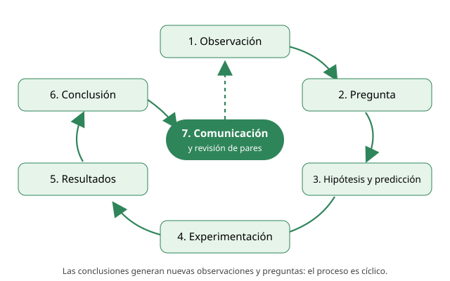
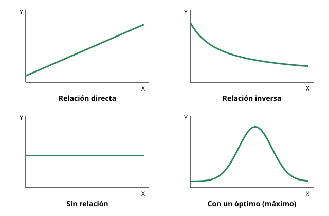

Capítulo 1: Método científico
Área temática: Transversal a todas las áreas · Habilidades: las cinco habilidades científicas de la PAES
«La ciencia es mucho más una manera de pensar que un cuerpo de conocimientos.» — Carl Sagan
Qué vas a aprender en este capítulo
- Qué hace que un conocimiento sea científico y cómo razonan los científicos.
- Las etapas de una investigación: observación, pregunta, hipótesis, predicción, experimento, resultados, conclusión y comunicación.
- Cómo se diseña un experimento: variables, grupo control, réplicas y tamaño de muestra.
- La diferencia entre hipótesis, teoría, ley, principio y modelo, que aparece en todas las PAES.
- Cómo se evalúa una investigación: validez, confiabilidad, replicabilidad, alcances y limitaciones.
- Cómo leer, construir y elegir tablas y gráficos.
Por qué este capítulo pesa tanto. La PAES de Ciencias no pregunta el método científico como un tema aislado. Lo usa en todas las preguntas: una pregunta de fotosíntesis puede pedirte identificar la variable independiente, y una de evolución puede pedirte distinguir una teoría de una evidencia. En la prueba oficial de invierno de 2027 hay preguntas de este tipo en los tres ejes: Biología, Física y Química. Dominar este capítulo es subir puntaje en toda la prueba.
Cómo usar este capítulo
- Lee la teoría (secciones 1 a 8). Cada título muestra los números de sus preguntas de práctica (IA); haz clic para practicar ese tema.
- Revisa los Ejemplos PAES resueltos, que muestran paso a paso cómo razonar una pregunta.
- Mide tu avance con la Evaluación formativa (20 preguntas) y con las Preguntas de práctica del final. Cada una trae su respuesta comentada al estilo DEMRE y un botón «↩ Ver tema» para volver a la materia.
1. Conceptos claveIA:123
| Concepto | Definición breve |
|---|---|
| Observación | Registro de un fenómeno mediante los sentidos o instrumentos. Es un hecho: describe lo que ocurre, no lo explica. |
| Inferencia | Conclusión lógica que se obtiene a partir de observaciones o datos. Va más allá de lo observado. |
| Problema o pregunta de investigación | Interrogante precisa que se puede responder reuniendo evidencia. |
| Hipótesis | Explicación tentativa de un fenómeno. Debe poder ponerse a prueba y podría resultar falsa. |
| Predicción | Resultado que se espera obtener si la hipótesis es correcta. Suele tener la forma «si…, entonces…». |
| Experimento | Procedimiento en el que el investigador manipula una variable y mide su efecto sobre otra, manteniendo el resto constante. |
| Variable independiente (manipulada) | Factor que el investigador modifica a voluntad para ver su efecto. |
| Variable dependiente (respuesta) | Factor que se mide; su valor depende de la variable independiente. |
| Variables controladas (constantes) | Factores que se mantienen iguales en todos los grupos para que no afecten el resultado. |
| Grupo control | Grupo que no recibe el tratamiento (o recibe el valor de referencia). Sirve para comparar. |
| Grupo experimental | Grupo que recibe el tratamiento o el valor modificado de la variable independiente. |
| Resultado | Datos obtenidos en la investigación, organizados en tablas o gráficos. |
| Conclusión | Afirmación que responde la pregunta de investigación a partir de los resultados; acepta o rechaza la hipótesis. |
| Teoría | Explicación amplia y bien fundamentada de por qué ocurre un conjunto de fenómenos. |
| Ley | Descripción de cómo ocurre un fenómeno de forma regular; muchas veces se expresa matemáticamente. No explica la causa. |
| Principio | Enunciado general que sirve de base para un razonamiento o una disciplina. |
| Modelo | Representación simplificada de un objeto, sistema o proceso (dibujo, maqueta, ecuación o simulación). |
| Validez | Grado en que una investigación mide realmente lo que dice medir y permite sostener su conclusión. |
| Confiabilidad | Grado en que las mediciones son consistentes: repetidas en las mismas condiciones, dan resultados similares. |
| Relación directa | Cuando una variable aumenta, la otra también aumenta. |
| Relación inversa | Cuando una variable aumenta, la otra disminuye. |
2. ¿Qué es la ciencia?IA:456
La ciencia es una forma de conocer el mundo natural que se basa en la evidencia. Una idea científica no se acepta porque la diga una autoridad, porque sea antigua o porque suene lógica. Se acepta porque se contrastó con observaciones y experimentos, y porque otros investigadores pudieron comprobarla.
La biología estudia a los seres vivos con esa misma lógica. Lo que sabemos sobre la célula, la herencia o la evolución no es una colección de datos para memorizar: es el resultado de investigaciones concretas, con preguntas, hipótesis, experimentos y discusiones.
a. Características del conocimiento científicoIA:789
| Característica | Qué significa | Ejemplo |
|---|---|---|
| Empírico | Se apoya en observaciones y mediciones del mundo natural. | La teoría celular se basa en miles de observaciones al microscopio. |
| Contrastable (falsable) | Sus afirmaciones pueden ponerse a prueba y podrían resultar falsas. | «Las moscas nacen de la carne podrida» se puso a prueba y se descartó. |
| Reproducible | Otros investigadores, siguiendo el mismo procedimiento, pueden obtener resultados similares. | Cualquier laboratorio puede repetir un experimento de germinación. |
| Provisional | Puede cambiar si aparece nueva evidencia. Es sólido, pero no dogmático. | El modelo de membrana celular se ha ido corrigiendo con nuevas técnicas. |
| Acumulativo y colectivo | Se construye sobre el trabajo de otros y se revisa entre pares. | Mendel, luego Sutton y Boveri, luego Watson y Crick, fueron sumando piezas. |
Ojo con la palabra «provisional». Que el conocimiento científico pueda cambiar no significa que sea débil o que «cualquier opinión valga lo mismo». Significa que la ciencia se corrige a sí misma cuando aparece mejor evidencia. Las teorías más sólidas, como la evolución o la teoría celular, han resistido más de un siglo de pruebas.
b. Dos formas de razonar: inducción y deducciónIA:101112
Los científicos usan dos tipos de razonamiento que se complementan:
- Razonamiento inductivo: va de lo particular a lo general. A partir de muchas observaciones se propone una generalización. Por ejemplo: si observamos al microscopio hojas, raíces, piel y músculo, y en todos encontramos células, inferimos que todos los seres vivos están formados por células.
- Razonamiento deductivo: va de lo general a lo particular. A partir de una idea general se predice qué debería ocurrir en un caso concreto. Por ejemplo: si todos los seres vivos están formados por células, entonces un hongo recién descubierto también debería estarlo.
Estas dos formas de razonar se asocian con dos tipos de investigación:
| Ciencia descriptiva (de descubrimiento) | Ciencia basada en hipótesis | |
|---|---|---|
| Objetivo | Observar, explorar, describir y clasificar | Responder una pregunta específica poniendo a prueba una explicación |
| Razonamiento principal | Inductivo | Deductivo («si la hipótesis es cierta, entonces…») |
| Ejemplo | Catalogar las especies de un bosque nativo | Probar si la temperatura afecta la germinación del poroto |
No todas las investigaciones son experimentos. El temario DEMRE reconoce investigaciones experimentales (se manipula una variable), no experimentales (se observa y se registra sin intervenir, como un estudio de campo), documentales o bibliográficas (se analizan registros y publicaciones). Todas son científicas si reúnen evidencia de forma sistemática.
c. Hecho, inferencia y opiniónIA:131415
Una habilidad básica que la PAES evalúa es distinguir entre lo que se observa y lo que se interpreta.
| Tipo de enunciado | Ejemplo |
|---|---|
| Observación (hecho) | «Las plantas del grupo A midieron en promedio 12 cm y las del grupo B, 7 cm.» |
| Inferencia | «El fertilizante que recibió el grupo A favorece el crecimiento.» |
| Opinión | «El fertilizante A es el mejor producto del mercado.» |
La inferencia se apoya en datos, pero va más allá de ellos. Por eso puede ser incorrecta si hay variables que no se controlaron.
3. Etapas de una investigación científicaIA:161718
El llamado «método científico» no es una receta rígida que se sigue siempre en el mismo orden. Es un proceso cíclico: los resultados de una investigación generan nuevas preguntas, y a veces hay que volver atrás y reformular la hipótesis. Aun así, conviene conocer sus etapas, porque la PAES pide identificar cada una en un texto.

i. ObservaciónIA:192021
Todo comienza cuando alguien nota un fenómeno y lo registra. La observación puede hacerse con los sentidos o con instrumentos (microscopio, termómetro, sensor). Una buena observación es objetiva y precisa: describe lo que ocurre sin interpretarlo.
Ejemplo: un grupo de estudiantes nota que las plantas de tomate del invernadero crecen más que las del patio.
ii. Planteamiento del problema o pregunta de investigaciónIA:222324
La observación se transforma en una pregunta que se pueda responder con evidencia. Una buena pregunta de investigación:
- es precisa;
- relaciona variables que se pueden medir;
- se puede responder con una investigación (no es una pregunta de opinión ni de valores).
| Pregunta poco útil | Pregunta de investigación |
|---|---|
| ¿Por qué las plantas son tan importantes? | ¿Cómo influye la temperatura del aire en la altura que alcanzan las plantas de tomate en cuatro semanas? |
| ¿Es bueno el fertilizante? | ¿Cómo afecta la cantidad de fertilizante (0, 2, 4 y 6 g) a la masa de los frutos de tomate? |
En la PAES: cuando te piden «¿qué pregunta pudo guiar esta investigación?», busca la alternativa que relaciona exactamente las dos variables del experimento (la que se manipuló y la que se midió). Descarta las preguntas demasiado amplias o que mencionan variables que no se estudiaron.
iii. HipótesisIA:252627
La hipótesis es una respuesta tentativa a la pregunta de investigación. No es una adivinanza: se basa en conocimientos previos y observaciones. Debe cumplir dos condiciones:
- Ser contrastable: se puede poner a prueba con un experimento u observaciones.
- Ser refutable: debe existir un resultado posible que la demuestre falsa.
Ejemplo: «La mayor temperatura del invernadero aumenta la velocidad de crecimiento de las plantas de tomate».
Hipótesis nula y alternativa. En muchas investigaciones se plantea una hipótesis nula (no hay efecto: «la temperatura no influye en el crecimiento») y una hipótesis alternativa (sí hay efecto). El experimento busca evidencia para rechazar la hipótesis nula.
iv. PredicciónIA:282930
La predicción dice qué resultado se espera obtener si la hipótesis es correcta. Se suele redactar como «si…, entonces…».
Ejemplo: «Si la temperatura aumenta la velocidad de crecimiento, entonces las plantas mantenidas a 25 °C serán más altas a las cuatro semanas que las mantenidas a 15 °C».
Hipótesis ≠ predicción. Es la confusión más frecuente en la PAES.
- La hipótesis explica el fenómeno (propone una causa o un mecanismo).
- La predicción anticipa un resultado medible del experimento concreto.
Truco: la predicción menciona los grupos, las condiciones o los valores del experimento; la hipótesis es más general.
v. ExperimentaciónIA:313233
Se diseña y realiza un procedimiento para poner a prueba la hipótesis. En un experimento se manipula la variable independiente, se mide la variable dependiente y se mantienen constantes las demás variables. El diseño experimental se desarrolla en detalle en la sección 4.
vi. ResultadosIA:343536
Los datos obtenidos se registran y se organizan en tablas y gráficos para encontrar patrones o tendencias. Los resultados se informan tal como salieron, aunque contradigan la hipótesis. Un resultado inesperado también es información valiosa.
vii. ConclusiónIA:373839
La conclusión responde la pregunta de investigación a partir de los resultados:
- si los resultados coinciden con la predicción, la hipótesis se apoya (se acepta provisionalmente);
- si no coinciden, la hipótesis se rechaza o se reformula.
Una hipótesis nunca se «demuestra» definitivamente. Un experimento puede aportar evidencia a favor, pero siempre podría aparecer un nuevo resultado que la contradiga. En cambio, un resultado contrario bien obtenido sí basta para rechazarla. Por eso en la PAES son sospechosas las alternativas que dicen «se comprueba definitivamente» o «queda demostrado para todos los casos».
Una conclusión válida no va más allá de los datos. Si el experimento se hizo con plantas de tomate, no se puede concluir sobre «todas las plantas». Si se probaron temperaturas entre 15 °C y 25 °C, no se puede afirmar qué ocurre a 40 °C.
viii. Comunicación de los resultadosIA:404142
La investigación se da a conocer mediante artículos científicos, congresos o informes. Antes de publicarse en una revista, el trabajo pasa por la revisión de pares: otros especialistas evalúan el diseño, los datos y las conclusiones. La publicación permite que otros repliquen el trabajo y construyan sobre él.
4. Diseño experimental: variables y gruposIA:434445
Un experimento bien diseñado permite atribuir un efecto a una sola causa. Para lograrlo hay que distinguir con claridad qué se cambia, qué se mide y qué se mantiene igual.
a. Tipos de variablesIA:464748
| Variable | Pregunta que la identifica | En el ejemplo del fertilizante |
|---|---|---|
| Independiente (manipulada) | ¿Qué cambia el investigador a propósito? | Masa de fertilizante: 0, 2, 4 y 6 g |
| Dependiente (respuesta) | ¿Qué se mide para ver el efecto? | Altura de las plantas a las tres semanas |
| Controladas (constantes) | ¿Qué se mantiene igual en todos los grupos? | Tipo de tierra, volumen de riego, horas de luz, especie y edad de las plantas, tamaño de la maceta |
Cómo encontrar las variables en un enunciado PAES
- Busca lo que se varía entre grupos («se agregaron distintas concentraciones…», «a diferentes temperaturas…»): esa es la independiente.
- Busca lo que se registra o mide al final («se midió…», «se registró…», «se cuantificó…»): esa es la dependiente.
- Todo lo que el enunciado dice que es igual en los grupos («la misma cantidad de agua», «plantas de la misma especie») son variables controladas.
En un gráfico, por convención, la variable independiente va en el eje X (horizontal) y la dependiente en el eje Y (vertical).
b. Variables cualitativas y cuantitativasIA:495051
- Cuantitativas: se expresan con números y unidades. Pueden ser continuas (temperatura, masa, tiempo: admiten cualquier valor dentro de un rango) o discretas (número de semillas germinadas, número de hojas: solo valores enteros).
- Cualitativas: se expresan con categorías (color de la flor, tipo de suelo, presencia o ausencia de un síntoma).
El tipo de variable determina qué instrumento se usa para medirla y qué gráfico conviene para presentarla (sección 8).
| Variable | Instrumento adecuado |
|---|---|
| Temperatura | Termómetro |
| Masa | Balanza |
| Volumen de un líquido | Probeta o pipeta |
| Tiempo | Cronómetro |
| Longitud | Regla o huincha |
| pH | pH-metro o papel indicador |
| Estructuras celulares | Microscopio |
c. Grupo control y grupo experimentalIA:525354
El grupo control es la referencia con la que se comparan los resultados. Sin él, no se puede saber si el cambio observado se debe al tratamiento o a otra causa.
- Grupo experimental: recibe el tratamiento (o un valor modificado de la variable independiente).
- Grupo control: es idéntico al experimental en todo, excepto en la variable independiente. No recibe el tratamiento, o recibe el valor normal o de referencia.
¿Cuál es el grupo control?
Se quiere probar si una bacteria del suelo favorece el crecimiento de plantas de lechuga. Se preparan dos grupos de 30 plantas iguales, con la misma tierra esterilizada, riego y luz. Al grupo 1 se le agrega la bacteria y al grupo 2 no.
- Grupo experimental: grupo 1, porque recibe la bacteria.
- Grupo control: grupo 2. Es idéntico al 1, excepto porque no recibe la bacteria.
- Variable independiente: presencia o ausencia de la bacteria.
- Variable dependiente: crecimiento de las plantas, por ejemplo su masa seca a las cuatro semanas.
Control positivo y control negativo. Algunas investigaciones usan dos controles:
- Control negativo: no debería mostrar el efecto. Por ejemplo, un cultivo sin antibiótico cuando se prueba si un extracto mata bacterias.
- Control positivo: debería mostrar el efecto con seguridad. Por ejemplo, un antibiótico conocido. Sirve para comprobar que el método de medición funciona.
Placebo y doble ciego. En estudios con personas, el grupo control recibe un placebo (una sustancia sin efecto con la misma apariencia que el tratamiento). En un estudio doble ciego, ni los participantes ni los evaluadores saben quién recibió qué, para evitar que las expectativas afecten los resultados.
d. Réplicas y tamaño de la muestraIA:555657
Un solo individuo por grupo no basta. Las diferencias entre dos plantas pueden deberse al azar: una semilla más vigorosa, una maceta mejor ubicada. Por eso:
- se usan varios individuos por grupo (tamaño de muestra mayor), y
- se repite el experimento (réplicas).
Así los resultados son más confiables, porque el efecto del azar se diluye al promediar muchos datos.
Errores de diseño que la PAES pide detectar
- Más de una variable cambia a la vez entre grupos. Por ejemplo, un grupo recibe más fertilizante y más luz. Así no se puede saber cuál causó el efecto.
- Falta un grupo control.
- La muestra es muy pequeña (uno o dos individuos por grupo).
- Lo que se mide no corresponde a lo que se quiere estudiar. Por ejemplo, se quiere saber sobre la fotosíntesis, pero se mide el color de las flores.
e. Investigaciones no experimentalesIA:585960
No siempre se puede (ni se debe) manipular una variable. No se puede asignar a personas a fumar para estudiar el cáncer, ni cambiar el clima de un continente. En esos casos se hacen estudios observacionales: se comparan grupos que ya existen, como fumadores y no fumadores, o se registran variables a lo largo del tiempo.
Estos estudios permiten encontrar asociaciones o correlaciones entre variables, pero es más difícil demostrar causalidad, porque puede haber otras variables que no se controlaron (sección 8.d).
5. El método científico en acción: dos casos históricosIA:616263
Los mejores ejemplos de cómo funciona la ciencia vienen de investigaciones reales. Estos dos casos aparecen con frecuencia en textos escolares y preguntas tipo PAES, porque muestran con claridad cada etapa.
a. Francesco Redi y la generación espontánea (1668)IA:646566
Contexto. En el siglo XVII se aceptaba la generación espontánea: la idea de que algunos seres vivos, como los gusanos de la carne, surgían de la materia en descomposición.
Observación. El médico italiano Francesco Redi notó que las moscas se posaban sobre la carne podrida antes de que aparecieran los gusanos (larvas).
Pregunta. ¿Los gusanos de la carne se originan de la carne misma o de algo que llega desde afuera?
Hipótesis. Los gusanos provienen de huevos que depositan las moscas en la carne.
Predicción. Si los gusanos provienen de huevos de mosca, entonces no aparecerán gusanos en carne a la que las moscas no puedan acceder.
Experimento. Redi colocó trozos de carne en frascos:
| Grupo | Condición | Función en el diseño | Resultado |
|---|---|---|---|
| Frascos abiertos | Las moscas acceden a la carne | Grupo control | Aparecen gusanos |
| Frascos sellados | Las moscas no acceden; tampoco entra aire | Grupo experimental | No aparecen gusanos |
Crítica y mejora del diseño. Los defensores de la generación espontánea objetaron que en los frascos sellados faltaba aire, y que el aire era necesario para que la vida surgiera. Es decir, en el primer diseño cambiaban dos variables a la vez: el acceso de las moscas y el acceso de aire. Redi repitió el experimento tapando los frascos con gasa: deja pasar el aire, pero no las moscas. Resultado: no aparecieron gusanos en la carne, pero sí huevos de mosca sobre la gasa.
Conclusión. Los gusanos de la carne no se generan espontáneamente: provienen de huevos de mosca.
La lección del caso Redi para la PAES: el segundo diseño es mejor porque aísla una sola variable (el acceso de las moscas) y mantiene constante el acceso de aire. Cuando una pregunta te pida «mejorar» un experimento, busca la opción que elimina una variable no controlada.
b. Ignaz Semmelweis y la fiebre puerperal (1847)IA:676869
Contexto. A mediados del siglo XIX, la fiebre puerperal, una infección que afecta a las mujeres después del parto, causaba muchas muertes en los hospitales europeos. Todavía no se conocía la teoría microbiana de la enfermedad.
Observación. El médico húngaro Ignaz Semmelweis trabajaba en el Hospital General de Viena, que tenía dos clínicas de maternidad. En la Primera Clínica, atendida por médicos y estudiantes de medicina, la mortalidad por fiebre puerperal era varias veces más alta que en la Segunda Clínica, atendida por matronas.
Pregunta. ¿Por qué mueren más mujeres en la Primera Clínica que en la Segunda?
Hipótesis descartadas. Semmelweis revisó varias explicaciones posibles: el hacinamiento, la posición durante el parto, el miedo que provocaba el paso del sacerdote. Las puso a prueba y ninguna explicaba la diferencia.
Nueva observación clave. Un colega murió con síntomas muy parecidos a los de la fiebre puerperal después de cortarse con un bisturí durante una autopsia. Los médicos y estudiantes de la Primera Clínica hacían autopsias y luego examinaban a las parturientas sin lavarse las manos. Las matronas no hacían autopsias.
Hipótesis. Los médicos transportan en sus manos «partículas cadavéricas» desde las autopsias hasta las parturientas, y eso causa la fiebre.
Predicción. Si la hipótesis es correcta, entonces al eliminar esas partículas de las manos, la mortalidad de la Primera Clínica debería bajar.
Intervención. En mayo de 1847, Semmelweis exigió que médicos y estudiantes se lavaran las manos con una solución de cloruro de calcio (hipoclorito) antes de examinar a las pacientes.
Resultados. Mortalidad por fiebre puerperal en la Primera Clínica en 1847, según los registros publicados por Semmelweis:
| Mes (1847) | Mortalidad |
|---|---|
| Abril (antes del lavado) | 18,3 % |
| Junio | 2,2 % |
| Julio | 1,2 % |
| Agosto | 0,9 % |
Conclusión. El lavado de manos reduce drásticamente la mortalidad, lo que apoya la hipótesis de que algo transmitido por las manos de los médicos causa la enfermedad.
Epílogo. Muchos médicos de la época rechazaron sus ideas, en parte porque Semmelweis no podía explicar qué eran esas partículas. Años después, los trabajos de Louis Pasteur y Robert Koch establecieron la teoría microbiana de la enfermedad, que explicó el mecanismo: la fiebre puerperal es causada por bacterias. Hoy el lavado de manos es una de las medidas más importantes para prevenir infecciones en los hospitales.
Qué enseña este caso
- Una buena investigación descarta hipótesis alternativas antes de aceptar una.
- La comparación entre las dos clínicas funciona como un grupo control natural.
- Es un estudio con intervención, pero no un experimento perfectamente controlado. Por ejemplo, podían cambiar otras condiciones del hospital al mismo tiempo.
- Una evidencia sólida puede ser rechazada si no existe una teoría que la explique. La ciencia es también un proceso social.
6. Hipótesis, teoría, ley, principio y modeloIA:707172
Esta distinción aparece en casi todas las PAES de Ciencias: la pregunta describe un planteamiento científico y pide clasificarlo. En la prueba oficial de invierno de 2027 hay varias preguntas de este tipo.
a. Qué es cada unoIA:737475
| Concepto | Qué hace | Alcance | Ejemplo en biología |
|---|---|---|---|
| Hipótesis | Propone una explicación tentativa para un fenómeno específico | Acotado: una pregunta concreta | «La luz roja aumenta la tasa de fotosíntesis en Elodea más que la luz verde» |
| Teoría | Explica por qué ocurre un conjunto amplio de fenómenos, integrando muchas observaciones, leyes e hipótesis comprobadas | Amplio | Teoría celular, teoría de la evolución por selección natural, teoría endosimbiótica, teoría cromosómica de la herencia |
| Ley | Describe cómo ocurre un fenómeno de manera regular y predecible, sin explicar la causa. A menudo es una relación matemática | Describe una regularidad | Leyes de Mendel (proporciones en la herencia), ley de Fick (difusión), leyes de la termodinámica |
| Principio | Enunciado general que se toma como base de una disciplina o un razonamiento | General | Principio de Hardy-Weinberg, principio de exclusión competitiva |
| Modelo | Representa de forma simplificada un objeto o proceso para estudiarlo, explicarlo o predecir | Variable | Modelo de mosaico fluido de la membrana, modelo de doble hélice del ADN, modelo llave-cerradura de las enzimas |
El error más común: creer que hay una «escalera» en la que una hipótesis bien probada «sube» a teoría y una teoría muy probada «sube» a ley. Eso es falso. Teorías y leyes son cosas distintas, no niveles de certeza:
- la ley describe una regularidad (el cómo);
- la teoría explica por qué ocurre (el por qué).
Una teoría nunca se convierte en ley, por mucha evidencia que acumule. Tampoco una teoría científica es «una simple suposición», como en el lenguaje cotidiano: es el tipo de conocimiento más sólido y explicativo que tiene la ciencia.
b. Un ejemplo clásico: la herenciaIA:767778
La historia de la genética muestra muy bien la diferencia entre ley y teoría.
-
Leyes de Mendel (1865). Gregor Mendel cruzó miles de plantas de arveja y encontró regularidades matemáticas en la herencia de los caracteres. Por ejemplo, en la segunda generación aparece una proporción cercana a 3:1 entre el carácter dominante y el recesivo. Mendel describió cómo se heredan los caracteres, y propuso que existen «factores» que se separan al formar los gametos. Pero no sabía qué eran esos factores ni dónde estaban.
-
Teoría cromosómica de la herencia (1902-1903). Walter Sutton, que estudiaba saltamontes, y Theodor Boveri, que estudiaba erizos de mar, observaron que los cromosomas se comportan durante la meiosis igual que los factores de Mendel: van en pares, se separan al formar los gametos y se reúnen en la fecundación. Propusieron que los factores hereditarios, los genes, están en los cromosomas. Esa teoría explica por qué se cumplen las leyes de Mendel.
La ley y la teoría coexisten y se complementan: una describe el patrón y la otra lo explica. Ninguna «se transformó» en la otra.
c. Los modelos en biologíaIA:798081
Un modelo es útil justamente porque simplifica: deja fuera detalles para destacar lo importante. Por eso:
- todo modelo tiene limitaciones: no representa todos los aspectos de la realidad;
- un modelo se modifica o reemplaza cuando aparece evidencia que no puede explicar.
La evolución de un modelo: la membrana celular
- En 1935, Davson y Danielli propusieron un modelo tipo «sándwich»: una bicapa de lípidos cubierta por dos capas de proteínas.
- Con el microscopio electrónico y nuevos experimentos se observó que muchas proteínas atraviesan la membrana y que sus componentes se desplazan lateralmente.
- En 1972, Singer y Nicolson propusieron el modelo de mosaico fluido: una bicapa fluida de fosfolípidos con proteínas incrustadas que se mueven. Es el modelo aceptado hoy.
El modelo cambió porque apareció evidencia nueva que el anterior no podía explicar.
d. Cómo reconocerlos en una preguntaIA:828384
| Si el enunciado… | Probablemente es… |
|---|---|
| propone una causa posible que todavía se va a poner a prueba | una hipótesis |
| anticipa qué resultado se obtendrá en un experimento concreto | una predicción |
| explica de forma general un conjunto amplio de fenómenos, respaldada por mucha evidencia | una teoría |
| describe una regularidad, a menudo con una relación numérica, sin explicar la causa | una ley |
| es una representación (esquema, maqueta, ecuación, simulación) de algo real | un modelo |
| resume lo que se obtuvo a partir de los datos de una investigación ya hecha | una conclusión |
Evidencias que sustentan una teoría. La PAES también pregunta qué observación apoya una teoría. Por ejemplo, la teoría endosimbiótica propone que mitocondrias y cloroplastos se originaron de bacterias que fueron incorporadas por otra célula. La apoyan evidencias como estas: esos organelos tienen su propio ADN circular, similar al de las bacterias; tienen ribosomas parecidos a los bacterianos, y se dividen por sí mismos, de forma parecida a la fisión binaria. Una evidencia a favor es un dato observable que la teoría predice o explica.
7. Evaluar una investigación científicaIA:858687
«Evaluar» es una de las cinco habilidades de la PAES y, según el temario oficial, incluye juzgar la validez, la confiabilidad, los alcances y limitaciones de una investigación, su replicabilidad, la coherencia entre sus partes y su aporte a la tecnología.
a. Validez y confiabilidadIA:888990
| Concepto | Pregunta clave | Cómo se mejora |
|---|---|---|
| Validez | ¿La investigación mide lo que dice medir? ¿La conclusión se desprende realmente de los datos? | Controlar las variables, incluir un grupo control, medir la variable adecuada, no sacar conclusiones más allá de lo estudiado |
| Confiabilidad | ¿Si repito las mediciones en las mismas condiciones, obtengo resultados parecidos? | Aumentar el número de individuos, hacer réplicas, usar instrumentos precisos y calibrados, estandarizar el procedimiento |
Una investigación puede ser confiable pero no válida. Por ejemplo, un termómetro mal calibrado que marca siempre 2 °C de más da mediciones consistentes, pero incorrectas.
Exactitud y precisión
Piensa en lanzar dardos a un blanco:
- Exacto y preciso: todos los dardos juntos y en el centro.
- Preciso pero no exacto: todos juntos, pero lejos del centro. Es un error sistemático, como el del termómetro mal calibrado.
- Exacto pero no preciso: dispersos, pero su promedio cae en el centro.
- Ni exacto ni preciso: dispersos y lejos del centro.
La precisión se relaciona con la confiabilidad (qué tan repetibles son las mediciones). La exactitud se relaciona con qué tan cerca está la medición del valor real.
b. Replicabilidad y reproducibilidadIA:919293
- Una investigación es replicable cuando otro equipo puede repetir todo el procedimiento, con nuevos datos, y obtener resultados similares. Para eso, el procedimiento debe estar descrito con detalle: materiales, cantidades, tiempos y condiciones.
- Los resultados son reproducibles cuando, al volver a analizar los mismos datos con los mismos métodos, se llega a los mismos resultados.
Ambas propiedades aumentan la confianza en una conclusión. Un resultado que solo obtuvo un laboratorio, y que nadie más logra repetir, se considera dudoso.
c. Alcances y limitacionesIA:949596
Toda investigación tiene límites. Hay que preguntarse:
- ¿A quiénes se puede extender la conclusión? Un estudio en ratones no demuestra automáticamente lo mismo en humanos. Uno hecho con adolescentes de una ciudad no representa necesariamente a todo el país.
- ¿En qué rango de condiciones es válida? Si se probaron temperaturas de 10 a 30 °C, no se puede concluir qué pasa a 50 °C.
- ¿Qué variables no se controlaron? Pueden ofrecer explicaciones alternativas.
Sobre-alcance: el distractor favorito de la PAES. Muchas alternativas incorrectas generalizan de más: «en todos los seres vivos», «siempre», «queda demostrado que…». Compara cada alternativa con lo que realmente se estudió: la especie, el rango de valores, el número de casos. La conclusión correcta suele ser la más acotada a los datos.
d. Coherencia entre los componentesIA:979899
Una investigación es coherente cuando sus partes encajan:
- la pregunta menciona las variables que realmente se estudian;
- la hipótesis responde esa pregunta;
- el diseño manipula la variable independiente de la hipótesis y mide la dependiente;
- la conclusión responde la pregunta y se basa en los resultados obtenidos.
Por ejemplo, no es coherente plantear «¿influye la luz en la fotosíntesis?» y luego variar la temperatura; tampoco lo es concluir sobre el crecimiento cuando solo se midió la germinación.
e. Ciencia y tecnologíaIA:100101102
La investigación científica genera conocimiento que luego se aplica en tecnologías. Por ejemplo:
- el conocimiento de la estructura del ADN permitió desarrollar la ingeniería genética y la producción de insulina humana en bacterias;
- el estudio de los microorganismos llevó a las vacunas y los antibióticos;
- los estudios sobre la fotosíntesis orientan el cultivo en invernaderos, con control de la luz, el CO2 y la temperatura.
A su vez, las nuevas tecnologías, como el microscopio electrónico o la secuenciación de ADN, permiten nuevas investigaciones. En la PAES puede pedirse evaluar cómo una investigación contribuyó a una tecnología determinada.
f. Ética en la investigaciónIA:103104105
La ciencia tiene reglas éticas: el consentimiento informado de las personas que participan en un estudio, el trato responsable de los animales de laboratorio, el cuidado del ambiente, y la honestidad en el registro y la publicación de los datos. Inventar o alterar datos invalida una investigación, aunque la conclusión parezca correcta.
8. Tablas y gráficos: procesar, analizar y comunicar evidenciaIA:106107108
«Procesar y analizar la evidencia» es una de las habilidades que más se repite en la PAES de Ciencias. Casi siempre aparece como una tabla o un gráfico que hay que interpretar. Según el temario oficial, incluye identificar relaciones, patrones o tendencias entre variables, identificar predicciones y resultados, y sacar conclusiones o inferencias a partir de los datos. La habilidad «Comunicar» agrega elegir el recurso adecuado (tabla, gráfico o modelo) para presentar la información.
a. Las tablasIA:109110111
Una tabla organiza los datos para compararlos con facilidad. Una buena tabla tiene:
- un título que dice qué se estudió;
- encabezados con el nombre de cada variable y su unidad (°C, g, mL, %);
- la variable independiente normalmente en la primera columna, y la dependiente en las siguientes;
- si hubo réplicas, los datos de cada una y su promedio.
Leer una tabla paso a paso
Tabla 1. Número de burbujas de O2 liberadas en 5 minutos por una rama de Elodea según su distancia a una lámpara (promedio de 3 réplicas).
| Distancia a la lámpara (cm) | Burbujas en 5 min |
|---|---|
| 10 | 48 |
| 20 | 30 |
| 30 | 17 |
| 40 | 9 |
| 50 | 5 |
- Identifica las variables. La independiente es la distancia a la lámpara, que el investigador varía. La dependiente es el número de burbujas, que se mide.
- Describe la tendencia. A mayor distancia, menos burbujas: es una relación inversa.
- Interpreta. Más distancia significa menos luz sobre la planta. Las burbujas son oxígeno producido por la fotosíntesis, así que menos luz implica menor tasa de fotosíntesis.
- No te pases de los datos. La tabla no dice qué ocurre a 5 cm ni a 80 cm, ni si ocurre lo mismo en otras especies.
b. Tipos de gráficos y cuándo usarlosIA:112113114
| Gráfico | Cuándo se usa | Ejemplo |
|---|---|---|
| De líneas | Variable independiente continua; mostrar cómo cambia una variable (a menudo en el tiempo) | Crecimiento de una población bacteriana a lo largo de 24 horas |
| De barras | Comparar valores entre categorías (variable independiente cualitativa o discreta) | Promedio de altura de plantas con cuatro tipos de suelo |
| Histograma | Mostrar cómo se distribuye una variable continua en intervalos | Número de estudiantes según su estatura en intervalos de 5 cm |
| Circular (de torta) | Mostrar las partes de un todo (porcentajes que suman 100 %) | Composición porcentual de los gases del aire |
| De dispersión | Explorar si existe relación entre dos variables cuantitativas | Masa corporal y frecuencia cardíaca de 30 personas |
Habilidad «Comunicar»: la PAES puede pedirte elegir el mejor recurso para presentar una información. Pregúntate: ¿comparo categorías (barras), muestro un cambio continuo (líneas), muestro partes de un todo (circular) o busco una relación entre dos variables medidas (dispersión)?
c. Relaciones entre variablesIA:115116117

- Directa: al aumentar X, aumenta Y. Por ejemplo, la tasa de fotosíntesis cuando aumenta la luz, hasta cierto punto.
- Inversa: al aumentar X, disminuye Y. Por ejemplo, las burbujas de O2 al aumentar la distancia a la lámpara.
- Sin relación: Y no cambia al variar X.
- Con un óptimo: Y aumenta hasta un valor máximo y luego disminuye. Es típico de la actividad de las enzimas según la temperatura o el pH.
- Con meseta (saturación): Y aumenta y luego se estabiliza, porque otro factor pasa a ser el limitante. Es típico de la fotosíntesis cuando la luz sigue aumentando.
Proporcionalidad. Si Y aumenta en la misma proporción que X (al duplicar X se duplica Y), la relación es directamente proporcional, y el gráfico es una recta que pasa por el origen. Si al duplicar X, Y se reduce a la mitad, es inversamente proporcional. No toda relación directa es proporcional: en la saturación, Y deja de crecer.
d. Interpretar sin equivocarseIA:118119120
- Lee los ejes y las unidades antes que la curva. Muchos errores vienen de confundir qué variable está en cada eje.
- Describe la tendencia completa, incluyendo cambios de pendiente, máximos y mesetas.
- Interpolar vs. extrapolar. - Interpolar es estimar un valor dentro del rango medido. Es razonable. - Extrapolar es estimar fuera del rango medido. Es arriesgado: la tendencia puede cambiar.
- Correlación no es causalidad. Que dos variables varíen juntas no prueba que una cause la otra. Puede haber una tercera variable que afecte a ambas. Por ejemplo, en verano aumentan tanto las ventas de helados como los golpes de calor. Los helados no causan golpes de calor: ambos dependen de la temperatura.
- Compara siempre con el control. El efecto de un tratamiento es la diferencia respecto del grupo control, no el valor absoluto.
¿Qué conclusión es correcta?
Un gráfico muestra que, en un cultivo de levaduras, la producción de CO2 aumenta de 15 °C a 35 °C y luego disminuye hasta 45 °C.
- ✅ «En el rango estudiado, la producción de CO2 de estas levaduras es máxima cerca de 35 °C.» Se ajusta a los datos.
- ❌ «A mayor temperatura, mayor producción de CO2.» Ignora la disminución sobre 35 °C.
- ❌ «Todas las levaduras tienen su máxima actividad a 35 °C.» Generaliza de más: solo se estudió un cultivo.
- ❌ «A 60 °C la producción será cero.» Es una extrapolación fuera del rango medido.
Ejemplos PAES resueltos
Cuatro preguntas del estilo de la PAES, resueltas paso a paso con el guion de las «preguntas comentadas» del DEMRE: qué habilidad evalúan, cómo se razona hasta la clave, por qué falla cada alternativa y qué hay que saber y saber hacer. Antes de mirar la resolución, intenta responder.
Ejemplo 1 · Habilidad: Observar y plantear preguntas
En un desierto, un equipo de ecólogos cercó varias parcelas del mismo tamaño. En la mitad de ellas retiró todas las ratas canguro, un roedor grande que se alimenta de semillas, y en la otra mitad las dejó. Durante tres años contó cada tres meses los roedores pequeños, que también comen semillas, en todas las parcelas. En las parcelas sin ratas canguro hubo, en promedio, más roedores pequeños.
¿Cuál de las siguientes preguntas de investigación pudo guiar este estudio?
- A) ¿Cuántas semillas consume una rata canguro durante un año en el desierto?
- B) ¿Influye la presencia de ratas canguro en la abundancia de roedores pequeños?
- C) ¿Cómo varía la abundancia de roedores pequeños entre las estaciones del año?
- D) ¿Influye la abundancia de semillas en la reproducción de las ratas canguro?
Resolución. Esta pregunta evalúa la habilidad de observar y plantear preguntas: identificar la pregunta que se puede responder con la investigación descrita. Hay que reconocer qué se manipuló y qué se midió. Los investigadores modificaron la presencia de ratas canguro (retiradas o no): esa es la variable independiente. Registraron el número de roedores pequeños: esa es la dependiente. La pregunta correcta relaciona exactamente esas dos variables: B.
- A es incorrecta: el estudio no midió el consumo de semillas. Es una variable equivocada.
- C es incorrecta: aunque los conteos fueron trimestrales, lo que se comparó fue parcelas con y sin ratas canguro, no estaciones. Otra variable equivocada.
- D es incorrecta: invierte la relación. Pone a las ratas canguro como la variable que responde, cuando en el estudio eran la variable manipulada.
Qué hay que saber y saber hacer: identificar la variable independiente (lo que el investigador cambia) y la dependiente (lo que mide), y reconocer la pregunta que las relaciona. Dato: una buena pregunta de investigación se puede transformar directamente en el título de un gráfico, «Y en función de X».
Ejemplo 2 · Habilidad: Planificar y conducir una investigación
Una estudiante quiere saber si la cafeína modifica el tiempo de reacción. Reúne a 40 compañeros de la misma edad que no consumen café habitualmente y los separa al azar en dos grupos. Al grupo 1 le da un vaso de agua con 80 mg de cafeína y al grupo 2, un vaso de agua con el mismo sabor y aspecto, pero sin cafeína. Treinta minutos después, cada participante hace una prueba en computador que mide cuánto tarda en presionar una tecla al aparecer una luz.
En este diseño, ¿qué función cumple el grupo 2?
- A) Es el grupo experimental, porque recibe una bebida distinta.
- B) Permite medir el tiempo de reacción en milisegundos.
- C) Sirve de referencia para comparar el efecto de la cafeína.
- D) Asegura que todos los participantes tengan la misma edad.
Resolución. Esta pregunta evalúa la habilidad de planificar y conducir una investigación, en particular reconocer los componentes de un diseño experimental. El grupo 2 es igual al grupo 1 en todo (edad, hábitos, momento de la prueba y bebida de igual aspecto), excepto en la cafeína. Por eso es el grupo control: la diferencia de tiempos entre ambos grupos se puede atribuir a la cafeína. Su bebida sin cafeína funciona como placebo. Clave: C.
- A es incorrecta: el grupo experimental es el que recibe el tratamiento, la cafeína. Atribución cruzada.
- B es incorrecta: lo que mide el tiempo es la prueba en el computador, que es el instrumento, no el grupo. Verdadero pero irrelevante respecto de la función del grupo.
- D es incorrecta: la edad es una variable controlada en ambos grupos; el grupo 2 no es lo que la asegura. Condición incompleta.
Qué hay que saber y saber hacer: distinguir grupo control y experimental, y reconocer por qué un placebo mejora el diseño: los participantes no saben qué bebieron, así que sus expectativas no afectan el resultado. Dato: repartir a los participantes al azar evita que un grupo quede, por casualidad, con personas más rápidas.
Ejemplo 3 · Habilidad: Planificar y conducir una investigación (seleccionar evidencia)
La teoría endosimbiótica propone que las mitocondrias se originaron a partir de bacterias que fueron incorporadas por otra célula y que, con el tiempo, pasaron a formar parte de ella.
¿Cuál de las siguientes observaciones constituye evidencia a favor de esta teoría?
- A) Las mitocondrias son más abundantes en células con alto gasto de energía.
- B) Las mitocondrias poseen ADN circular, similar al de las bacterias.
- C) Las mitocondrias están rodeadas por el citoplasma de la célula.
- D) Las mitocondrias producen ATP mediante la respiración celular.
Resolución. Esta pregunta evalúa la habilidad de planificar y conducir una investigación, en su criterio «seleccionar evidencias que sustenten leyes, teorías o modelos». Una evidencia a favor de una teoría es una observación que la teoría predice y que sería difícil de explicar sin ella. Si las mitocondrias descienden de bacterias, deberían conservar rasgos bacterianos. El ADN circular, parecido al bacteriano, es justamente eso. Clave: B.
- A es cierta, pero se explica por la función de las mitocondrias, no por su origen. Verdadero pero irrelevante.
- C describe su ubicación, que es común a todos los organelos. No distingue el origen propuesto. Verdadero pero irrelevante.
- D es la función de las mitocondrias. La teoría habla de su origen evolutivo, no de lo que hacen hoy. Variable equivocada.
Qué hay que saber y saber hacer: diferenciar una evidencia (un dato observable) de una teoría (la explicación), y juzgar si el dato es específico de lo que la teoría afirma. Dato: otras evidencias de la misma teoría son que las mitocondrias tienen ribosomas parecidos a los bacterianos y que se dividen por su cuenta. Los cloroplastos comparten estas características.
Ejemplo 4 · Habilidad: Procesar y analizar la evidencia
Un grupo de estudiantes midió la liberación de O2 de una planta acuática expuesta a distintas intensidades de luz, manteniendo constantes la temperatura (20 °C) y la concentración de CO2. Estos fueron los resultados:
| Intensidad de luz (unidades) | 0 | 100 | 200 | 300 | 400 |
|---|---|---|---|---|---|
| O2 liberado (mL/h) | 0 | 1,5 | 3,0 | 3,6 | 3,6 |
¿Cuál de las siguientes conclusiones es coherente con estos resultados?
- A) La liberación de O2 aumenta siempre que aumenta la intensidad de luz.
- B) Sobre 300 unidades, algún factor distinto de la luz limita la liberación de O2.
- C) Con 500 unidades de luz, la planta liberará 4,2 mL de O2 por hora.
- D) A 30 °C la planta liberaría más O2 con cualquier intensidad de luz.
Resolución. Esta pregunta evalúa la habilidad de procesar y analizar la evidencia: identificar una tendencia y la conclusión que los datos permiten. Entre 0 y 200 unidades, el O2 aumenta de forma proporcional: 1,5 mL/h por cada 100 unidades. Después sube menos y entre 300 y 400 no cambia: aparece una meseta. Si más luz ya no aumenta la fotosíntesis, otro factor, como el CO2 o la temperatura, pasó a ser el limitante. Clave: B.
- A es incorrecta: ignora la meseta entre 300 y 400. Es un sobre-alcance.
- C es incorrecta: es una extrapolación fuera del rango medido que, además, contradice la meseta. Sobre-alcance.
- D es incorrecta: la temperatura se mantuvo constante, así que los datos no dicen nada sobre ella. Sub-alcance: usa una variable que no se estudió.
Qué hay que saber y saber hacer: leer tablas por tramos, reconocer las mesetas y no concluir fuera del rango ni sobre variables controladas. Dato: en la PAES, cuando una curva de fotosíntesis se aplana, la pregunta casi siempre apunta al concepto de factor limitante, que se desarrolla en el capítulo 10.
Evaluación formativa
Veinte preguntas para comprobar lo aprendido en el capítulo. Responde todas antes de revisar tus resultados; cada respuesta explica por qué la clave es correcta y en qué falla cada distractor.
1. Un estudiante observa que las hormigas de su patio forman filas hacia un tarro de azúcar abierto. ¿Cuál de las siguientes afirmaciones corresponde a una inferencia y no a una observación?
- Las hormigas avanzan en una fila de unos dos metros.
- Algunas hormigas regresan cargando granos blancos.
- Las hormigas siguen un rastro químico hasta el azúcar.
- La fila se forma entre el hormiguero y el tarro.
Respuesta correcta: C
El rastro químico no se ve: es una explicación que va más allá de lo registrado, es decir, una inferencia. A, B y D describen hechos que cualquiera puede ver y medir, así que son observaciones.
2. ¿Cuál de las siguientes hipótesis no puede ponerse a prueba con una investigación científica?
- Las plantas crecen mejor cuando se les tiene cariño.
- Las plantas crecen más con luz azul que con luz verde.
- Las plantas crecen menos en suelos con mucha sal.
- Las plantas crecen más con riego diario que semanal.
Respuesta correcta: A
«Cariño» no es una variable que se pueda definir y medir de forma objetiva, así que la hipótesis no es contrastable. En B, C y D, la variable independiente (color de la luz, salinidad, frecuencia de riego) se puede controlar y el crecimiento se puede medir.
3. Una investigadora cree que la temperatura afecta la actividad de la enzima catalasa. ¿Cuál de las siguientes opciones es una predicción derivada de esa hipótesis?
- La catalasa es una proteína que descompone el peróxido de hidrógeno.
- La temperatura modifica la forma de las enzimas y su actividad.
- Las enzimas de todos los seres vivos dependen de la temperatura.
- Si la hipótesis es correcta, a 35 °C se liberará más gas que a 5 °C.
Respuesta correcta: D
Una predicción anticipa un resultado medible del experimento concreto, con la forma «si…, entonces…». A es un dato previo sobre la enzima. B es una explicación, es decir, una hipótesis o una teoría. C generaliza a todos los seres vivos, más allá de lo que se va a estudiar.
4. Para estudiar el efecto del pH sobre la germinación, se riegan semillas de trigo con soluciones de pH 4, 6 y 8, y a los 5 días se cuentan las semillas germinadas. ¿Cuál es la variable dependiente?
- El pH de la solución de riego.
- El número de semillas germinadas.
- La especie de semilla utilizada.
- El tiempo transcurrido hasta el conteo.
Respuesta correcta: B
La variable dependiente es la que se mide al final: el número de semillas germinadas. A es la variable independiente, porque es la que se modifica. C y D son iguales en todos los grupos, así que son variables controladas.
5. En el experimento de la pregunta anterior, ¿cuál de los siguientes cambios mejoraría más la confiabilidad de los resultados?
- Usar una sola semilla por cada valor de pH.
- Agregar un fertilizante a las semillas de pH 6.
- Usar 50 semillas por pH y repetir el ensayo.
- Contar las semillas germinadas a los 2 días.
Respuesta correcta: C
Más individuos por grupo y réplicas reducen el efecto del azar y hacen los resultados más consistentes. A empeora la confiabilidad. B introduce una segunda variable en un solo grupo, lo que afecta la validez. D cambia el momento de la medición, pero no aumenta la confiabilidad.
6. Un laboratorio prueba si un extracto de ajo inhibe el crecimiento de bacterias. Siembra bacterias en tres placas: la placa 1 con el extracto, la placa 2 con agua destilada y la placa 3 con un antibiótico conocido. ¿Qué función cumple la placa 3?
- Control positivo: confirma que el método detecta la inhibición.
- Control negativo: muestra el crecimiento normal sin tratamiento.
- Grupo experimental: recibe el tratamiento que se quiere probar.
- Variable controlada: mantiene constante la cantidad de bacterias.
Respuesta correcta: A
Con el antibiótico conocido, la inhibición debe aparecer con seguridad. Si no aparece, el método está fallando. Por eso es un control positivo. B corresponde a la placa 2. C corresponde a la placa 1. D confunde un grupo con una variable.
7. Se quiere comparar la frecuencia cardíaca de personas antes y después de subir una escalera. ¿Qué instrumento es el más adecuado para medir la variable dependiente?
- Un termómetro digital.
- Una balanza de precisión.
- Una huincha de medir.
- Un oxímetro de pulso.
Respuesta correcta: D
La variable dependiente es la frecuencia cardíaca, y el oxímetro de pulso la registra en latidos por minuto. El termómetro mide temperatura, la balanza mide masa y la huincha mide longitud: no sirven para esta variable.
8. En su primer experimento, Redi comparó frascos abiertos con frascos completamente sellados. ¿Por qué sus críticos pudieron objetar ese diseño?
- Porque usó un solo tipo de carne en todos los frascos.
- Porque entre los grupos variaba tanto la entrada de moscas como la de aire.
- Porque no registró cuántos días duró el experimento.
- Porque los frascos abiertos no tenían un grupo control.
Respuesta correcta: B
Al sellar los frascos cambiaban dos variables a la vez, y la ausencia de gusanos podía atribuirse a la falta de aire. Por eso Redi usó gasa. A es, en realidad, un acierto del diseño, porque mantiene una variable controlada. C no es la objeción histórica. D es falsa: los frascos abiertos eran justamente el control.
9. Semmelweis observó que la mortalidad por fiebre puerperal bajó de 18,3 % a menos de 3 % tras introducir el lavado de manos. ¿Qué conclusión apoyan estos datos?
- La fiebre puerperal es causada por una bacteria específica.
- El lavado de manos elimina todas las infecciones hospitalarias.
- Algo transmitido por las manos de los médicos favorecía la fiebre.
- Las matronas tenían mejor formación que los médicos de la época.
Respuesta correcta: C
Los datos muestran que un cambio en las manos redujo la mortalidad, así que apoyan esa conclusión acotada. A va más allá de los datos: Semmelweis no identificó al agente, eso vino después con la teoría microbiana. B generaliza a todas las infecciones. D no se desprende de los datos.
10. «Todos los organismos están formados por una o más células, y toda célula proviene de otra célula preexistente». Este enunciado corresponde a:
- una teoría.
- una hipótesis.
- una predicción.
- un modelo.
Respuesta correcta: A
Es la teoría celular: explica de manera general un conjunto amplio de fenómenos y está respaldada por abundante evidencia. No es una hipótesis, porque no es una explicación tentativa de un caso puntual. No es una predicción, porque no anticipa el resultado de un experimento. Tampoco es un modelo, porque no representa un objeto ni un proceso.
11. Mendel encontró que, al cruzar plantas híbridas, los caracteres dominante y recesivo aparecen en una proporción cercana a 3:1. Este hallazgo, que describe una regularidad sin explicar su causa, se considera:
- un modelo.
- una teoría.
- una hipótesis.
- una ley.
Respuesta correcta: D
Una ley describe cómo ocurre un fenómeno de forma regular, a menudo con una relación numérica. La explicación de por qué ocurre llegó después con la teoría cromosómica, lo que descarta B. No es una hipótesis, porque está confirmada en miles de cruzamientos. Tampoco es un modelo, porque no es una representación.
12. Sobre la relación entre teorías y leyes científicas, es correcto afirmar que:
- una teoría se convierte en ley cuando acumula suficiente evidencia.
- la teoría explica por qué ocurre lo que la ley describe.
- una ley es una teoría que todavía no ha sido comprobada.
- las leyes tienen más certeza que las teorías científicas.
Respuesta correcta: B
Leyes y teorías son tipos distintos de conocimiento, no niveles de certeza: la ley describe una regularidad y la teoría la explica. A y D reflejan la falsa «escalera» que asciende de hipótesis a teoría y de teoría a ley. C invierte las definiciones.
13. El modelo de mosaico fluido reemplazó al modelo de membrana de Davson y Danielli. ¿Qué explica mejor este cambio?
- El modelo anterior era más complejo que el nuevo.
- Los científicos votaron por el modelo más reciente.
- Aparecieron evidencias que el modelo anterior no explicaba.
- El nuevo modelo representa todos los detalles de la membrana.
Respuesta correcta: C
Los modelos se modifican cuando surge evidencia nueva que no pueden explicar. En este caso fueron las proteínas que atraviesan la membrana y el movimiento lateral de sus componentes. A no es un criterio. B no describe cómo se valida el conocimiento científico. D es falsa: todo modelo simplifica.
14. Un estudio encuentra que, en 20 ciudades, las que tienen más farmacias también registran más casos de gripe. ¿Cuál es la interpretación más adecuada?
- Ambas variables podrían depender de una tercera, como la población.
- Las farmacias favorecen el contagio de la gripe en esas ciudades.
- La gripe provoca la apertura de nuevas farmacias en las ciudades.
- Queda demostrado que no existe relación entre ambas variables.
Respuesta correcta: A
Una correlación no prueba causalidad: las ciudades más pobladas tienen más farmacias y más enfermos. B y C proponen causas que el estudio observacional no puede demostrar. D contradice los datos, que sí muestran una asociación.
15. Una balanza mal calibrada marca siempre 3 g más que la masa real. Las mediciones repetidas de una misma muestra resultan casi idénticas. ¿Qué características tienen esas mediciones?
- Son exactas y precisas.
- Son exactas, pero no precisas.
- No son exactas ni precisas.
- Son precisas, pero no exactas.
Respuesta correcta: D
Las mediciones son muy parecidas entre sí, así que son precisas y confiables. Pero se alejan del valor real por un error sistemático, así que no son exactas. Las demás combinaciones no se ajustan a esa descripción.
16. Un equipo publica que un medicamento reduce la presión arterial. Otros tres laboratorios siguen el mismo procedimiento con nuevos pacientes y obtienen resultados similares. Esto demuestra que el estudio original es:
- válido para todos los medicamentos similares.
- replicable, lo que aumenta la confianza en él.
- definitivo, por lo que ya no puede cambiar.
- ético, porque incluyó a nuevos pacientes.
Respuesta correcta: B
Repetir todo el procedimiento con nuevos datos y obtener resultados similares es replicar el estudio, y eso fortalece la conclusión. A generaliza a otros fármacos que no se estudiaron. C contradice el carácter provisional del conocimiento científico. D confunde replicabilidad con ética.
17. La actividad de una enzima se midió a distintas temperaturas: 10 °C → 8 unidades; 20 °C → 19; 30 °C → 34; 40 °C → 22; 50 °C → 5. ¿Qué tipo de relación muestran los datos?
- Directa en todo el rango estudiado.
- Inversa en todo el rango estudiado.
- Con un máximo cercano a los 30 °C.
- Sin relación entre ambas variables.
Respuesta correcta: C
La actividad sube hasta 30 °C y luego baja: es una curva con un óptimo, típica de las enzimas. A solo describe el primer tramo y B solo el segundo. D es falsa, porque la actividad cambia mucho con la temperatura.
18. Con los datos de la pregunta anterior, ¿cuál es la estimación más razonable de la actividad a 25 °C?
- Alrededor de 26 unidades.
- Alrededor de 34 unidades.
- Alrededor de 40 unidades.
- Alrededor de 53 unidades.
Respuesta correcta: A
25 °C está entre 20 °C (19 unidades) y 30 °C (34 unidades). Interpolando, el valor esperado ronda el punto medio: (19 + 34) / 2 ≈ 26. B es el valor a 30 °C. C supera el máximo medido. D es la suma de 19 y 34, un error de cálculo.
19. Una profesora quiere mostrar qué porcentaje del total de especies descritas corresponde a insectos, plantas, vertebrados y otros grupos. ¿Qué tipo de gráfico es el más adecuado?
- Un gráfico de líneas.
- Un gráfico de dispersión.
- Un histograma.
- Un gráfico circular.
Respuesta correcta: D
Se trata de mostrar las partes de un todo, porcentajes que suman 100 %, y para eso sirve el gráfico circular. El de líneas muestra cambios continuos, el de dispersión busca relaciones entre dos variables medidas y el histograma muestra la distribución de una variable continua.
20. Una investigación se pregunta si la cantidad de horas de sueño influye en la memoria de estudiantes. Sin embargo, el diseño varía la cantidad de cafeína consumida y mide la memoria. ¿Qué problema presenta esta investigación?
- No tiene variable dependiente definida.
- Su diseño no es coherente con su pregunta.
- Su muestra es demasiado grande para analizar.
- Su conclusión va más allá del rango medido.
Respuesta correcta: B
La pregunta menciona el sueño, pero el diseño manipula la cafeína: la variable independiente no coincide con la de la pregunta, así que no hay coherencia entre los componentes de la investigación. A es falsa: la memoria es la variable dependiente. C no es un problema; una muestra grande es algo positivo. D no se puede evaluar, porque no se presentan conclusiones.
Fuentes del capítulo
Consultadas el 23-09-2026. Todo el texto del capítulo es de redacción propia; los diagramas son originales.
Documentos oficiales
- DEMRE (2026). Temario Regular – Pruebas Electivas – Ciencias. Admisión 2027 (habilidades científicas y criterios de evaluación, págs. 4–5). demre.cl
- DEMRE (2026). Prueba oficial PAES de Invierno, Ciencias – Biología, Admisión 2027 y su clavijero. Se usaron para identificar los tipos de preguntas sobre habilidades científicas.
- Mineduc – Currículum Nacional. Habilidades y etapas de la investigación científica · Ciencias Naturales 1° y 2° medio
Textos de referencia
- OpenStax. Biology 2e, sección 1.1 «The Science of Biology» (razonamiento inductivo y deductivo; ciencia descriptiva y basada en hipótesis). openstax.org
- University of California Museum of Paleontology. Understanding Science: hipótesis, teorías y leyes a distintos niveles. undsci.berkeley.edu
Casos históricos
- Redi y la generación espontánea: Curtis, Biología (7.ª ed.), «1668. La refutación de la idea de la generación espontánea de los gusanos». curtisbiologia.com
- Semmelweis y la fiebre puerperal: «Un caso de historia de la ciencia para aprender naturaleza de la ciencia: Semmelweis y la fiebre puerperal», Revista Eureka. redalyc.org · National Geographic Historia. Ignaz Semmelweis, el médico que descubrió que lavarse las manos salva vidas
- Teoría cromosómica de Sutton y Boveri: LibreTexts Español, Biología general, 13.1A «Teoría cromosómica de la herencia». espanol.libretexts.org
Evaluación de investigaciones
- Manterola, C. et al. (2018). «Confiabilidad, precisión o reproducibilidad de las mediciones». Revista Chilena de Infectología, 35(6). scielo.cl
- SciELO en Perspectiva (2023). «Reproducción y replicación en investigación científica». blog.scielo.org
Preguntas de práctica (IA)
Estas 120 preguntas fueron creadas con inteligencia artificial a partir de los contenidos de esta sección; no son del libro. Los números verdes junto a cada título llevan a sus preguntas, y el botón «↩ Ver tema» de cada pregunta te devuelve a la materia que la explica.
Tema: 1. Conceptos clave
1.↩ Ver tema Una bióloga sospecha que la luz roja estimula más la fotosíntesis de la elodea que la luz verde. Coloca ramitas iguales de elodea en tubos con la misma agua y a la misma temperatura; ilumina unos con luz roja y otros con luz verde de igual intensidad, y cuenta las burbujas de oxígeno liberadas por minuto. ¿Cuál de las siguientes opciones corresponde a una predicción coherente con su hipótesis? Procesar y analizar la evidencia Procesos y funciones biológicas
- Si la luz roja estimula más la fotosíntesis, los tubos con luz roja liberarán más burbujas por minuto.
- La luz roja es absorbida por la clorofila de la elodea con mayor eficiencia que la luz verde en cualquier planta.
- ¿Influye el color de la luz en la cantidad de burbujas de oxígeno que libera la elodea durante la fotosíntesis?
- Los tubos con luz verde liberarán más burbujas, porque la luz verde se refleja en las hojas de la elodea.
Respuesta correcta: A
Habilidad evaluada. Esta pregunta evalúa la habilidad de procesar y analizar la evidencia, que según el temario DEMRE incluye identificar predicciones, resultados o explicaciones en diversos contextos. La tarea consiste en distinguir, entre varios enunciados, cuál es el resultado esperado del experimento si la hipótesis es verdadera.
Concepto del libro. En «Conceptos clave» se define la predicción como el resultado que se espera obtener si la hipótesis es correcta, y suele redactarse con la forma «si…, entonces…», mencionando lo que se va a medir.
Desarrollo. La hipótesis es que la luz roja estimula más la fotosíntesis. Lo que se mide son burbujas por minuto. Una predicción debe unir ambas cosas: si la hipótesis es cierta, entonces los tubos con luz roja deben liberar más burbujas. Eso dice A. B es una explicación general (otra hipótesis), C es la pregunta de investigación y D contradice la hipótesis.
Por qué fallan las otras alternativas.
- B) (variable equivocada) Es una explicación general sobre la absorción de luz, no un resultado medible en este experimento.
- C) (variable equivocada) Es la pregunta de investigación: plantea una interrogante, no un resultado esperado.
- D) (relación inversa o inexistente) Predice lo contrario de lo que sostiene la hipótesis de la bióloga.
Qué hay que saber y saber hacer. Hay que saber diferenciar pregunta, hipótesis y predicción, y saber redactar una predicción en términos de la variable medida. Dato para la PAES: la predicción siempre se refiere a un resultado observable del diseño concreto, no a una idea general.
Pregunta creada con IA a partir del contenido de esta sección.
2.↩ Ver tema Un grupo de estudiantes sumerge trozos iguales de papa en soluciones de sal de distinta concentración durante una hora y luego mide el cambio de masa. En la tabla se muestran los resultados: 0 % → +0,8 g; 1 % → +0,2 g; 2 % → −0,4 g; 3 % → −0,9 g. ¿Qué relación entre las variables muestran estos datos? Procesar y analizar la evidencia Organización, estructura y actividad celular
- Una relación directa: a mayor concentración de sal, mayor es la masa que ganan los trozos.
- Una relación inversa: a mayor concentración de sal, menor es el cambio de masa.
- Ninguna relación, porque algunos trozos ganan masa y otros la pierden durante la hora.
- Una relación inversa: a mayor masa inicial de papa, menor es la concentración de la sal.
Respuesta correcta: B
Habilidad evaluada. Esta pregunta evalúa la habilidad de procesar y analizar la evidencia, es decir, interpretar datos y resultados para obtener conclusiones que se sostienen en ellos. La tarea consiste en leer la tabla, reconocer cómo varía la variable dependiente al aumentar la independiente y nombrar el tipo de relación.
Concepto del libro. En «Conceptos clave» se define relación directa cuando ambas variables aumentan juntas, y relación inversa cuando una aumenta y la otra disminuye.
Desarrollo. La variable independiente es la concentración de sal (0 a 3 %). La dependiente es el cambio de masa. Al pasar de 0 % a 3 %, el cambio baja de +0,8 g a −0,9 g, sin excepciones. Cuando una sube y la otra baja, la relación es inversa: alternativa B. Que el signo cambie no rompe la tendencia; solo indica que en soluciones concentradas la papa pierde agua por osmosis.
Por qué fallan las otras alternativas.
- A) (relación inversa o inexistente) Invierte la tendencia: la ganancia de masa disminuye, no aumenta.
- C) (sub-alcance) Confunde el cambio de signo con ausencia de relación, aunque la tendencia es constante.
- D) (variable equivocada) Usa la masa inicial, que se mantuvo igual en todos los trozos, en vez del cambio de masa.
Qué hay que saber y saber hacer. Hay que saber identificar las variables en una tabla y saber describir su tendencia. Dato para la PAES: un cambio de signo (de ganar a perder masa) no indica ausencia de relación; mira siempre la dirección de toda la serie.
Pregunta creada con IA a partir del contenido de esta sección.
3.↩ Ver tema Una ecóloga quiere saber si un pesticida afecta la supervivencia de chinitas. Prepara cinco cajas con 20 chinitas cada una, la misma comida y temperatura: cuatro cajas reciben el pesticida en dosis de 1, 2, 3 y 4 mg, y una no recibe pesticida. ¿Qué función cumple la caja sin pesticida en este diseño? Planificar y conducir una investigación Organismo y ambiente
- Es la variable dependiente, porque en ella se mide cuántas chinitas sobreviven.
- Es una variable controlada, porque recibe la misma comida y la misma temperatura.
- Es el grupo control, porque es la referencia para comparar las cajas tratadas.
- Es un grupo experimental, porque recibe la menor dosis posible del pesticida.
Respuesta correcta: C
Habilidad evaluada. Esta pregunta evalúa la habilidad de planificar y conducir una investigación, es decir, identificar y organizar los componentes y procedimientos de una investigación. La tarea consiste en reconocer el papel del grupo que no recibe el tratamiento dentro de un diseño experimental.
Concepto del libro. En «Conceptos clave» se define el grupo control como el que no recibe el tratamiento o recibe el valor de referencia, y sirve para comparar; los grupos experimentales reciben el valor modificado de la variable independiente.
Desarrollo. La variable independiente es la dosis de pesticida; la dependiente, la supervivencia. Las cajas con 1 a 4 mg son grupos experimentales. La caja sin pesticida no recibe tratamiento: permite saber cuántas chinitas sobreviven en condiciones normales y atribuir al pesticida cualquier diferencia. Por eso es el grupo control (C). Comida y temperatura son variables controladas, pero la caja en sí no es una variable.
Por qué fallan las otras alternativas.
- A) (variable equivocada) Confunde un grupo con la variable medida; la supervivencia se mide en todas las cajas.
- B) (verdadero pero irrelevante) Es cierto que comida y temperatura son constantes, pero eso describe variables, no la función de la caja.
- D) (condición incompleta) Una dosis cero no es un tratamiento; es justamente la condición de referencia.
Qué hay que saber y saber hacer. Hay que saber distinguir grupos de variables y saber qué aporta el grupo control a la conclusión. Dato para la PAES: sin grupo control no se puede afirmar que el efecto se deba al tratamiento, porque falta la referencia.
Pregunta creada con IA a partir del contenido de esta sección.
Tema: 2. ¿Qué es la ciencia?
4.↩ Ver tema En una conversación, un estudiante afirma que la teoría de la evolución por selección natural es verdadera «porque la propuso Darwin, un científico muy famoso». Su profesora le responde que el argumento no es científico. ¿Cuál de las siguientes razones justifica mejor la respuesta de la profesora? Evaluar Herencia y evolución
- Darwin no fue el único que propuso la selección natural, porque Wallace llegó a ideas similares.
- La teoría de la evolución es muy antigua y, por eso, ya no se considera válida en biología moderna.
- Una teoría científica se acepta porque es lógica, aunque no se haya contrastado con evidencia.
- Una idea científica se acepta por la evidencia que la respalda, no por el prestigio del autor.
Respuesta correcta: D
Habilidad evaluada. Esta pregunta evalúa la habilidad de evaluar, es decir, juzgar la calidad, el alcance y la validez de una investigación o de una afirmación científica. La tarea consiste en juzgar si un argumento sigue los criterios con que la ciencia acepta sus ideas.
Concepto del libro. El título «¿Qué es la ciencia?» señala que una idea científica no se acepta por la autoridad de quien la dice, por su antigüedad ni porque suene lógica, sino porque fue contrastada con observaciones y experimentos y otros pudieron comprobarla.
Desarrollo. El estudiante justifica la teoría por la fama de Darwin: es un argumento de autoridad. La profesora tiene razón porque lo que sostiene la selección natural es la evidencia acumulada (fósiles, anatomía comparada, genética, observaciones de poblaciones). Eso es D. A es un dato histórico cierto que no responde la crítica; B es falso; C propone otro criterio no científico.
Por qué fallan las otras alternativas.
- A) (verdadero pero irrelevante) Es un dato histórico cierto, pero no explica por qué el argumento de autoridad falla.
- B) (relación inversa o inexistente) Relaciona antigüedad con invalidez, un vínculo falso; la teoría sigue plenamente vigente.
- C) (condición incompleta) La coherencia lógica no basta; falta el contraste con evidencia.
Qué hay que saber y saber hacer. Hay que saber qué hace que una idea sea científica y saber reconocer argumentos de autoridad. Dato para la PAES: en ítems de Evaluar, la mejor justificación casi siempre apela a la evidencia y a la posibilidad de comprobarla.
Pregunta creada con IA a partir del contenido de esta sección.
5.↩ Ver tema Un curso observa al microscopio que las células de la epidermis de cebolla teñidas con yodo muestran un núcleo oscuro. Los estudiantes proponen varias preguntas para seguir trabajando. ¿Cuál de ellas puede responderse mediante una investigación científica? Observar y plantear preguntas Organización, estructura y actividad celular
- ¿Cambia la intensidad de la tinción si el yodo actúa 1, 3 o 5 minutos?
- ¿Son las células de cebolla más hermosas que las células de otras plantas?
- ¿Debería un curso gastar tiempo observando células en vez de leer el libro?
- ¿Cuál es el propósito que tuvo la naturaleza al darle un núcleo a la célula?
Respuesta correcta: A
Habilidad evaluada. Esta pregunta evalúa la habilidad de observar y plantear preguntas, es decir, reconocer preguntas investigables e hipótesis que pueden validarse con evidencia. La tarea consiste en reconocer cuál de las preguntas se puede resolver reuniendo evidencia mediante observación o medición.
Concepto del libro. El título «¿Qué es la ciencia?» plantea que la ciencia conoce el mundo natural a partir de evidencia; por eso una pregunta es investigable solo si su respuesta puede obtenerse con observaciones o mediciones.
Desarrollo. En A se puede variar el tiempo de tinción (1, 3 y 5 minutos) y observar o medir la intensidad del color: se responde con datos. B depende de un juicio estético, C de una valoración sobre cómo usar el tiempo y D supone una intención de la naturaleza, algo que ningún experimento puede medir. La única investigable es A.
Por qué fallan las otras alternativas.
- B) (sub-alcance) Depende de un juicio de belleza, que no se puede medir con evidencia.
- C) (verdadero pero irrelevante) Es una pregunta de valoración pedagógica, no sobre un fenómeno natural.
- D) (relación inversa o inexistente) Atribuye una intención a la naturaleza, un vínculo que la evidencia no puede comprobar.
Qué hay que saber y saber hacer. Hay que saber qué tipo de preguntas aborda la ciencia y saber detectar las que contienen valores, gustos o propósitos. Dato para la PAES: una pregunta investigable suele permitir identificar una variable que se cambia y otra que se mide.
Pregunta creada con IA a partir del contenido de esta sección.
6.↩ Ver tema Dos equipos investigan si la cafeína aumenta la frecuencia cardiaca de la pulga de agua (Daphnia). En la tabla se muestran los latidos por minuto: equipo 1, sin cafeína → 180 y con cafeína → 240; equipo 2, sin cafeína → 176 y con cafeína → 236. ¿Qué conclusión se sostiene mejor con estos datos? Procesar y analizar la evidencia Procesos y funciones biológicas
- La cafeína aumenta la frecuencia cardiaca de todos los animales en unos 60 latidos por minuto más.
- En ambos equipos la cafeína se asoció a un aumento cercano a 60 latidos por minuto en Daphnia.
- Los resultados no sirven, porque los equipos obtuvieron valores distintos sin cafeína.
- La frecuencia cardiaca de Daphnia disminuye cuando se agrega cafeína al agua del cultivo.
Respuesta correcta: B
Habilidad evaluada. Esta pregunta evalúa la habilidad de procesar y analizar la evidencia, es decir, interpretar datos y resultados para obtener conclusiones que se sostienen en ellos. La tarea consiste en comparar los resultados de ambos equipos y formular una conclusión que no vaya más allá de lo medido.
Concepto del libro. El título «¿Qué es la ciencia?» indica que una idea se acepta cuando se contrasta con la evidencia y otros investigadores pueden comprobarla; que dos equipos obtengan resultados similares fortalece la conclusión.
Desarrollo. Equipo 1: 240 − 180 = 60 latidos. Equipo 2: 236 − 176 = 60 latidos. Ambos observan el mismo aumento, así que el resultado se repite de forma independiente. La conclusión válida se limita a Daphnia y al aumento medido: B. A generaliza a todos los animales, C exige valores idénticos, lo que no es necesario, y D invierte el efecto.
Por qué fallan las otras alternativas.
- A) (sobre-alcance) Extiende a todos los animales un resultado obtenido solo en Daphnia.
- C) (sub-alcance) Exige valores idénticos, cuando pequeñas diferencias entre equipos son esperables.
- D) (relación inversa o inexistente) Invierte el efecto: en ambos equipos la frecuencia aumentó.
Qué hay que saber y saber hacer. Hay que saber calcular diferencias entre condiciones y saber limitar la conclusión al organismo estudiado. Dato para la PAES: pequeñas diferencias entre equipos son normales; lo que importa es que la tendencia se repita.
Pregunta creada con IA a partir del contenido de esta sección.
Tema: a. Características del conocimiento científico
7.↩ Ver tema Durante décadas se representó la membrana celular como una capa de proteínas rígida a ambos lados de los lípidos. Con nuevas técnicas de microscopía se observó que las proteínas se desplazan dentro de la membrana, y el modelo se reemplazó por el de mosaico fluido. ¿Qué característica del conocimiento científico ilustra mejor este caso? Evaluar Organización, estructura y actividad celular
- Que el conocimiento científico es débil, porque sus modelos terminan siempre siendo falsos.
- Que los modelos científicos se aceptan por la opinión mayoritaria de los investigadores.
- Que el conocimiento científico es provisional y se corrige si surge nueva evidencia.
- Que las técnicas de microscopía no permiten obtener evidencia fiable sobre las células.
Respuesta correcta: C
Habilidad evaluada. Esta pregunta evalúa la habilidad de evaluar, es decir, juzgar la calidad, el alcance y la validez de una investigación o de una afirmación científica. La tarea consiste en reconocer qué rasgo del conocimiento científico queda de manifiesto en un cambio histórico de modelo.
Concepto del libro. En «Características del conocimiento científico» se describe el conocimiento como provisional: es sólido, pero puede cambiar cuando aparece nueva evidencia, y eso no lo vuelve débil.
Desarrollo. El modelo antiguo de membrana se abandonó porque nuevas observaciones mostraron proteínas en movimiento. El cambio lo produjo la evidencia, no un gusto ni una votación. Eso es la provisionalidad: la ciencia revisa sus modelos a la luz de mejores datos (C). A confunde provisional con débil; B pone el consenso por sobre la evidencia; D contradice el caso, en que la microscopía aportó justamente la evidencia.
Por qué fallan las otras alternativas.
- A) (sobre-alcance) Concluye que todo modelo termina siendo falso, más de lo que el caso muestra.
- B) (relación inversa o inexistente) Atribuye el cambio a la opinión mayoritaria, cuando lo produjo la evidencia.
- D) (relación inversa o inexistente) Contradice el caso: fue la microscopía la que aportó la nueva evidencia.
Qué hay que saber y saber hacer. Hay que saber las características del conocimiento científico y saber aplicarlas a un caso histórico. Dato para la PAES: «provisional» no significa «poco confiable»; las teorías más sólidas también son revisables.
Pregunta creada con IA a partir del contenido de esta sección.
8.↩ Ver tema Una investigadora publica que un extracto de hoja de boldo reduce la actividad de una enzima digestiva en tubos de ensayo. Otro laboratorio quiere comprobar si el resultado es reproducible. ¿Qué debe hacer este segundo laboratorio? Planificar y conducir una investigación Procesos y funciones biológicas
- Probar el extracto en pacientes con problemas digestivos para ver si mejoran.
- Usar un extracto de otra planta para ver si también reduce la actividad enzimática.
- Leer el artículo y aceptar el resultado si la revista en que salió es prestigiosa.
- Repetir el procedimiento publicado, en iguales condiciones, y comparar los datos.
Respuesta correcta: D
Habilidad evaluada. Esta pregunta evalúa la habilidad de planificar y conducir una investigación, es decir, identificar y organizar los componentes y procedimientos de una investigación. La tarea consiste en seleccionar el procedimiento que permite comprobar si otro grupo obtiene resultados similares.
Concepto del libro. En «Características del conocimiento científico» se define reproducible como la posibilidad de que otros investigadores, siguiendo el mismo procedimiento, obtengan resultados similares.
Desarrollo. Para comprobar la reproducibilidad no se cambia el experimento: se repite con el mismo extracto, la misma enzima, las mismas concentraciones y temperaturas, y se comparan los datos. Si se obtiene una reducción similar, el resultado se fortalece. Eso es D. A cambia el sistema estudiado (de tubos a pacientes), B cambia la variable independiente y C reemplaza la comprobación por confianza en una autoridad.
Por qué fallan las otras alternativas.
- A) (variable equivocada) Cambia el sistema estudiado: pasa de tubos de ensayo a personas.
- B) (variable equivocada) Cambia el extracto, así que ya no repite el experimento original.
- C) (verdadero pero irrelevante) El prestigio de la revista no reemplaza la comprobación experimental.
Qué hay que saber y saber hacer. Hay que saber qué significa reproducir una investigación y saber qué se mantiene igual al hacerlo. Dato para la PAES: por eso los artículos científicos detallan materiales y métodos, para que otros puedan repetirlos.
Pregunta creada con IA a partir del contenido de esta sección.
9.↩ Ver tema En el siglo XVII se creía que los gusanos de la carne surgían espontáneamente de ella. Un naturalista puso carne en frascos abiertos y en frascos cubiertos con gasa fina. En la tabla se muestran los resultados: frascos abiertos → moscas posadas y larvas en la carne; frascos con gasa → moscas sobre la gasa, huevos en la gasa y ninguna larva en la carne. ¿Qué conclusión apoyan estos resultados? Procesar y analizar la evidencia Herencia y evolución
- Las larvas provienen de huevos de mosca y no se originan de la carne podrida.
- La carne en descomposición produce larvas solo cuando recibe aire fresco del ambiente.
- La gasa impide que la carne se descomponga y, por eso, en ella no aparecen larvas.
- Todos los seres vivos se originan siempre de otros seres vivos de su misma especie.
Respuesta correcta: A
Habilidad evaluada. Esta pregunta evalúa la habilidad de procesar y analizar la evidencia, es decir, interpretar datos y resultados para obtener conclusiones que se sostienen en ellos. La tarea consiste en relacionar la presencia de larvas con el acceso de las moscas a la carne y elegir la conclusión que sostienen los datos.
Concepto del libro. En «Características del conocimiento científico» se destaca que las ideas científicas son contrastables: la idea de que las moscas nacen de la carne podrida se puso a prueba y se descartó.
Desarrollo. Ambos frascos tienen carne y reciben aire (la gasa lo deja pasar). La diferencia es que las moscas no llegan a la carne cubierta: allí no hay larvas, y los huevos quedan sobre la gasa. Por lo tanto, las larvas provienen de huevos de mosca (A). B no se sostiene porque ambos frascos reciben aire; C no se midió; D generaliza a todos los seres vivos a partir de un solo caso.
Por qué fallan las otras alternativas.
- B) (variable equivocada) El aire llega a ambos frascos; la variable que cambia es el acceso de las moscas.
- C) (relación inversa o inexistente) Inventa un efecto de la gasa sobre la descomposición que no se midió.
- D) (sobre-alcance) Generaliza a todos los seres vivos a partir de un experimento con moscas.
Qué hay que saber y saber hacer. Hay que saber identificar qué difiere entre grupos y saber atribuir el efecto a esa diferencia. Dato para la PAES: la gasa, a diferencia de un tapón hermético, permitió descartar la falta de aire como explicación.
Pregunta creada con IA a partir del contenido de esta sección.
Tema: b. Dos formas de razonar: inducción y deducción
10.↩ Ver tema Un grupo de estudiantes recorre un bosque nativo del sur de Chile durante un año, registrando qué especies de aves aparecen, en qué árboles se posan y en qué meses. No modifican ninguna condición del bosque. ¿Qué tipo de investigación realizan? Planificar y conducir una investigación Organismo y ambiente
- Una investigación experimental, porque registran las aves durante un año completo.
- Una investigación descriptiva, porque observan y registran sin manipular variables.
- Una investigación basada en hipótesis, porque ponen a prueba una predicción sobre aves.
- Una investigación documental, porque analizan registros de aves hechos por otras personas.
Respuesta correcta: B
Habilidad evaluada. Esta pregunta evalúa la habilidad de planificar y conducir una investigación, es decir, identificar y organizar los componentes y procedimientos de una investigación. La tarea consiste en clasificar un estudio según su objetivo y según si se manipula o no alguna variable.
Concepto del libro. En «Dos formas de razonar: inducción y deducción» se distingue la ciencia descriptiva, que observa, explora, describe y clasifica, de la ciencia basada en hipótesis; además, las investigaciones no experimentales observan sin intervenir.
Desarrollo. Los estudiantes no cambian ninguna condición: solo observan y anotan especies, árboles y meses. No hay variable manipulada, así que no es un experimento (A). Tampoco se menciona una hipótesis ni una predicción (C), y los datos los toman ellos mismos, no de publicaciones (D). Su objetivo es describir y catalogar: es ciencia descriptiva (B), de razonamiento principalmente inductivo.
Por qué fallan las otras alternativas.
- A) (condición incompleta) Registrar por un tiempo largo no basta; un experimento exige manipular una variable.
- C) (sub-alcance) El enunciado no menciona ninguna hipótesis ni predicción que se ponga a prueba.
- D) (variable equivocada) Los datos se toman en terreno; no provienen de registros hechos por otros.
Qué hay que saber y saber hacer. Hay que saber los tipos de investigación y saber reconocer si hay manipulación de variables. Dato para la PAES: la duración de un estudio no lo convierte en experimento; lo que define un experimento es que el investigador modifica una variable.
Pregunta creada con IA a partir del contenido de esta sección.
11.↩ Ver tema Una estudiante observa al microscopio muestras de hoja de lechuga, piel de cebolla, mucosa de su mejilla, levadura y músculo de pollo. En todas encuentra células. A partir de esto concluye que probablemente todos los seres vivos están formados por células. ¿Qué tipo de razonamiento usó? Procesar y analizar la evidencia Organización, estructura y actividad celular
- Deductivo, porque parte de una idea general para predecir lo que ocurrirá en una muestra.
- Deductivo, porque su conclusión es segura y ya no requiere más observaciones de apoyo.
- Inductivo, porque parte de observaciones particulares y propone una generalización.
- Inductivo, porque parte de una ley general y la aplica a cada una de las cinco muestras.
Respuesta correcta: C
Habilidad evaluada. Esta pregunta evalúa la habilidad de procesar y analizar la evidencia, es decir, interpretar datos y resultados para obtener conclusiones que se sostienen en ellos. La tarea consiste en analizar la dirección del razonamiento: si va de los casos particulares a la regla o de la regla a un caso.
Concepto del libro. En «Dos formas de razonar: inducción y deducción» se explica que el razonamiento inductivo va de lo particular a lo general, y el deductivo de lo general a lo particular.
Desarrollo. La estudiante parte de cinco observaciones concretas (lechuga, cebolla, mejilla, levadura, pollo) y termina en una afirmación sobre todos los seres vivos. El camino va de lo particular a lo general: es inducción (C). A y B describen deducción, que exigiría partir de la idea general. D nombra bien la inducción, pero le asigna la dirección de la deducción. Su palabra «probablemente» refleja que una inducción no es definitiva.
Por qué fallan las otras alternativas.
- A) (relación inversa o inexistente) Invierte la dirección: ella no parte de una idea general.
- B) (sobre-alcance) Atribuye certeza absoluta a una conclusión que la propia estudiante presenta como probable.
- D) (condición incompleta) Nombra bien la inducción, pero describe la dirección propia de la deducción.
Qué hay que saber y saber hacer. Hay que saber distinguir inducción y deducción y saber mirar la dirección del razonamiento, no solo el nombre. Dato para la PAES: una generalización inductiva puede caer con un solo caso contrario; por eso la ciencia la sigue poniendo a prueba.
Pregunta creada con IA a partir del contenido de esta sección.
12.↩ Ver tema Un investigador sabe que las enzimas humanas funcionan mejor cerca de 37 °C y razona: «Si la amilasa de la saliva es una enzima humana, entonces debería digerir más almidón a 37 °C que a 10 °C o a 60 °C». ¿Qué papel cumple este razonamiento en su investigación? Observar y plantear preguntas Procesos y funciones biológicas
- Es un resultado, porque describe cuánto almidón digirió la amilasa a cada temperatura.
- Es una conclusión, porque responde la pregunta después de analizar los resultados.
- Es una observación, porque registra lo que ocurre con la saliva mediante los sentidos.
- Es una predicción deductiva, porque aplica una idea general a un caso por comprobar.
Respuesta correcta: D
Habilidad evaluada. Esta pregunta evalúa la habilidad de observar y plantear preguntas, es decir, reconocer preguntas investigables e hipótesis que pueden validarse con evidencia. La tarea consiste en identificar qué componente de la investigación corresponde al razonamiento «si…, entonces…» del investigador.
Concepto del libro. En «Dos formas de razonar: inducción y deducción» se explica que la deducción va de lo general a lo particular y que la ciencia basada en hipótesis la usa en la forma «si la hipótesis es cierta, entonces…».
Desarrollo. El investigador parte de una idea general (las enzimas humanas trabajan mejor cerca de 37 °C) y la aplica a un caso concreto (la amilasa). Todavía no ha medido nada: su frase anticipa un resultado que el experimento puede confirmar o refutar. Es una predicción deductiva (D). No es resultado ni conclusión, porque no hay datos aún, ni observación, porque nada se ha registrado.
Por qué fallan las otras alternativas.
- A) (variable equivocada) Aún no se ha medido nada; un resultado son datos obtenidos.
- B) (condición incompleta) Una conclusión exige resultados analizados, que todavía no existen.
- C) (sub-alcance) No registra ningún fenómeno; anticipa lo que debería ocurrir.
Qué hay que saber y saber hacer. Hay que saber reconocer la estructura «si…, entonces…» y saber ubicarla antes de la toma de datos. Dato para la PAES: una predicción deductiva vuelve contrastable una hipótesis, porque dice qué debería verse si es cierta.
Pregunta creada con IA a partir del contenido de esta sección.
Tema: c. Hecho, inferencia y opinión
13.↩ Ver tema En un informe sobre el efecto del ejercicio en la respiración, un estudiante escribió cuatro frases. ¿Cuál de ellas corresponde a una observación y no a una inferencia ni a una opinión? Observar y plantear preguntas Procesos y funciones biológicas
- Tras 2 minutos de trote, su frecuencia respiratoria subió de 16 a 28 veces por minuto.
- El aumento de la respiración se debe a que los músculos necesitan más oxígeno al trotar.
- Trotar es la mejor actividad física que se puede hacer para mantener sana la función pulmonar.
- Si hubiera trotado más tiempo, su respiración habría seguido subiendo sin detenerse.
Respuesta correcta: A
Habilidad evaluada. Esta pregunta evalúa la habilidad de observar y plantear preguntas, es decir, reconocer preguntas investigables e hipótesis que pueden validarse con evidencia. La tarea consiste en clasificar cada frase según si registra un dato, lo interpreta o expresa un juicio personal.
Concepto del libro. En «Hecho, inferencia y opinión» se distingue la observación, que registra lo ocurrido; la inferencia, que interpreta o explica los datos yendo más allá de ellos; y la opinión, que expresa una valoración.
Desarrollo. A informa dos valores medidos (16 y 28 respiraciones por minuto): es un hecho observado. B propone una causa del aumento: es una inferencia, aunque sea razonable. C es una valoración («la mejor»): es opinión. D anticipa lo que habría ocurrido en una condición no medida: es una inferencia sin datos. La observación es A.
Por qué fallan las otras alternativas.
- B) (relación inversa o inexistente) Explica la causa del aumento; eso es una inferencia, no un registro.
- C) (verdadero pero irrelevante) Expresa un juicio de valor, propio de una opinión.
- D) (sobre-alcance) Proyecta un resultado en condiciones que no se midieron.
Qué hay que saber y saber hacer. Hay que saber los tres tipos de enunciado y saber buscar si la frase solo describe datos medidos. Dato para la PAES: palabras como «se debe a», «porque» o «habría» delatan una interpretación, y adjetivos como «mejor» delatan una opinión.
Pregunta creada con IA a partir del contenido de esta sección.
14.↩ Ver tema Un grupo riega plantas de rabanito con agua de la llave (grupo A) y con agua con un fertilizante (grupo B). En la tabla se muestran las alturas promedio a las tres semanas: grupo A → 7 cm; grupo B → 12 cm. Luego se descubre que el grupo B estuvo junto a la ventana y el grupo A al fondo de la sala. ¿Cuál es la mejor evaluación de la inferencia «el fertilizante favorece el crecimiento»? Evaluar Organización, estructura y actividad celular
- Es correcta, porque el grupo B creció 5 cm más que el grupo A en tres semanas.
- Es una opinión, porque se basa en la preferencia del grupo por ese fertilizante.
- Es un hecho, porque se obtuvo directamente de medir la altura de los rabanitos.
- Es dudosa, porque la luz también varió y pudo causar la diferencia de alturas.
Respuesta correcta: D
Habilidad evaluada. Esta pregunta evalúa la habilidad de evaluar, es decir, juzgar la calidad, el alcance y la validez de una investigación o de una afirmación científica. La tarea consiste en juzgar si una inferencia está bien sostenida cuando se detecta una variable no controlada.
Concepto del libro. En «Hecho, inferencia y opinión» se advierte que la inferencia se apoya en datos, pero va más allá de ellos y puede ser incorrecta si hay variables que no se controlaron.
Desarrollo. Las alturas (7 y 12 cm) son hechos. Atribuir la diferencia al fertilizante es una inferencia. Pero los grupos difirieron en dos cosas: el fertilizante y la luz, porque B estuvo junto a la ventana. No se puede saber cuál causó los 5 cm de diferencia, así que la inferencia es dudosa (D). A ignora la luz; B confunde inferencia con opinión; C confunde la inferencia con el dato medido.
Por qué fallan las otras alternativas.
- A) (condición incompleta) Considera la diferencia de altura, pero ignora que la luz no se controló.
- B) (variable equivocada) La inferencia se basa en datos medidos, no en una preferencia personal.
- C) (sub-alcance) Confunde la interpretación con el dato: medida es la altura, no la causa.
Qué hay que saber y saber hacer. Hay que saber distinguir el dato de su interpretación y saber detectar variables no controladas. Dato para la PAES: si los grupos difieren en más de una variable, ninguna conclusión causal es segura; hay que repetir el experimento controlando la luz.
Pregunta creada con IA a partir del contenido de esta sección.
15.↩ Ver tema Un estudiante observa que en su familia varias personas tienen ojos café y afirma: «Seguramente el color de ojos café se hereda como un rasgo dominante». Su profesora le pide reunir evidencia para evaluar esa inferencia. ¿Cuál de estos procedimientos es el más adecuado? Planificar y conducir una investigación Herencia y evolución
- Preguntar a sus compañeros si creen que el color café es un rasgo dominante.
- Construir un árbol genealógico con el color de ojos de varias generaciones.
- Contar cuántas personas de su curso tienen ojos café y elegir el más común.
- Buscar la opinión de un famoso en redes sociales sobre el color de los ojos.
Respuesta correcta: B
Habilidad evaluada. Esta pregunta evalúa la habilidad de planificar y conducir una investigación, es decir, identificar y organizar los componentes y procedimientos de una investigación. La tarea consiste en seleccionar el procedimiento que entrega datos útiles para poner a prueba una inferencia sobre herencia.
Concepto del libro. En «Hecho, inferencia y opinión» se señala que la inferencia va más allá de lo observado y debe contrastarse con datos, a diferencia de la opinión, que no se apoya en evidencia.
Desarrollo. Para saber cómo se hereda un rasgo hay que ver cómo pasa de padres a hijos. Un árbol genealógico con varias generaciones muestra si, por ejemplo, dos padres de ojos café tienen hijos de ojos claros, dato clave en el análisis de dominancia (B). A y D recogen opiniones, no datos. C mide la frecuencia del rasgo en el curso, pero la frecuencia no revela dominancia. Cabe notar que el color de ojos depende de varios genes, así que el árbol podría incluso mostrar patrones más complejos.
Por qué fallan las otras alternativas.
- A) (verdadero pero irrelevante) Reúne opiniones, que no son evidencia sobre la herencia.
- C) (relación inversa o inexistente) Supone que el rasgo más frecuente es el dominante, un vínculo falso.
- D) (verdadero pero irrelevante) La opinión de una persona famosa no es evidencia científica.
Qué hay que saber y saber hacer. Hay que saber qué evidencia responde una pregunta de herencia y saber descartar opiniones como datos. Dato para la PAES: un rasgo común no es necesariamente dominante; la dominancia se infiere de cómo se transmite.
Pregunta creada con IA a partir del contenido de esta sección.
Tema: 3. Etapas de una investigación científica
16.↩ Ver tema Un equipo propuso que un pesticida reduce la actividad de búsqueda de alimento de las abejas melíferas. Predijo que las abejas expuestas visitarían menos flores por hora que las no expuestas. Tras dos semanas de conteo, ambos grupos registraron en promedio 38 visitas por hora. Considerando que la investigación científica es un proceso cíclico, ¿cuál es el paso siguiente más adecuado? Evaluar Organismo y ambiente
- Revisar la hipótesis y plantear un nuevo experimento para ponerla a prueba.
- Descartar los datos obtenidos porque no coinciden con la predicción hecha.
- Concluir que el pesticida es inocuo para todos los insectos polinizadores.
- Repetir el conteo hasta obtener menos visitas en el grupo de abejas expuesto.
Respuesta correcta: A
Habilidad evaluada. Esta pregunta evalúa la habilidad de evaluar, es decir, juzgar la validez y la coherencia entre las partes de una investigación. La tarea consiste en juzgar qué decisión es coherente con un resultado que contradice la predicción.
Concepto del libro. En el título «Etapas de una investigación científica» se explica que el método científico no es una secuencia rígida: cuando los resultados no respaldan la hipótesis, se vuelve atrás para reformularla y ponerla nuevamente a prueba.
Desarrollo. La predicción era que las abejas expuestas harían menos visitas; los datos muestran el mismo promedio en ambos grupos. Por lo tanto, la hipótesis no recibe apoyo. Lo correcto no es ocultar ni forzar los datos, sino aceptarlos como información válida, revisar la hipótesis (por ejemplo, considerar otra dosis u otra conducta afectada) y diseñar un nuevo experimento. Así el ciclo continúa.
Por qué fallan las otras alternativas.
- B) (relación inversa o inexistente) Los datos no se eliminan por contradecir la predicción: se informan tal como resultaron.
- C) (sobre-alcance) Un estudio con abejas y una sola dosis no permite concluir sobre todos los polinizadores.
- D) (relación inversa o inexistente) Repetir hasta obtener el resultado deseado invierte la lógica: la evidencia debe poner a prueba la hipótesis, no ajustarse a ella.
Qué hay que saber y saber hacer. Hay que saber que un resultado contrario también es un aporte y saber reconocer el retorno a etapas anteriores. Dato para la PAES: la ausencia de efecto en un estudio no autoriza a generalizar a otros organismos ni a otras condiciones.
Pregunta creada con IA a partir del contenido de esta sección.
17.↩ Ver tema Un estudio publicado mostró que, tras una sequía, sobrevivieron en mayor proporción los pinzones de pico grueso, capaces de romper semillas duras. Años después, otro equipo leyó ese trabajo y decidió investigar si el mismo patrón se presenta en años de lluvias abundantes. ¿Qué característica del trabajo científico ilustra mejor esta situación? Planificar y conducir una investigación Herencia y evolución
- Las etapas de una investigación se siguen siempre en un orden fijo.
- La conclusión de un estudio puede originar una nueva investigación.
- Una hipótesis apoyada por los datos queda demostrada en forma definitiva.
- La comunicación de los resultados es la última etapa de todo estudio.
Respuesta correcta: B
Habilidad evaluada. Esta pregunta evalúa la habilidad de planificar y conducir una investigación, es decir, identificar y organizar los componentes de un estudio científico. La tarea consiste en reconocer qué rasgo del proceso de investigación queda en evidencia en un caso concreto.
Concepto del libro. El título «Etapas de una investigación científica» describe la investigación como un ciclo: la conclusión y su comunicación abren nuevas preguntas que inician otros estudios.
Desarrollo. El primer equipo llegó a una conclusión y la publicó. Un segundo equipo, a partir de esa publicación, formula una pregunta nueva (¿ocurre lo mismo en años lluviosos?). Es decir, el final de una investigación se convierte en el punto de partida de otra. Eso es justamente el carácter cíclico del proceso, que la alternativa B expresa.
Por qué fallan las otras alternativas.
- A) (relación inversa o inexistente) Contradice el caso: el proceso no es rígido, y aquí se vuelve a la etapa de la pregunta.
- C) (sobre-alcance) Ninguna hipótesis queda demostrada para siempre; la evidencia solo la apoya provisionalmente.
- D) (verdadero pero irrelevante) La comunicación cierra un estudio, pero el caso muestra justamente que no cierra el ciclo.
Qué hay que saber y saber hacer. Hay que saber que el método científico es flexible y acumulativo, y saber identificar cómo un resultado publicado genera nuevas preguntas. Dato para la PAES: el estudio de los pinzones de Galápagos se ha repetido durante décadas justamente porque cada temporada abre preguntas distintas.
Pregunta creada con IA a partir del contenido de esta sección.
18.↩ Ver tema Una estudiante escribió en desorden cuatro enunciados de su trabajo sobre la saliva: I. En el tubo a 37 °C el almidón dejó de detectarse a los 4 minutos; a 10 °C, a los 15 minutos. II. La amilasa salival actúa con mayor rapidez a una temperatura cercana a la corporal. III. Al masticar pan por un rato, este adquiere un sabor dulce. IV. ¿Cómo influye la temperatura en la rapidez con que la amilasa degrada el almidón? Si III es la observación que dio inicio al trabajo y I corresponde a los resultados, ¿a qué etapas corresponden los enunciados II y IV? Planificar y conducir una investigación Procesos y funciones biológicas
- II es una predicción y IV es la pregunta de investigación.
- II es una hipótesis y IV es una observación del fenómeno.
- II es una hipótesis y IV, la pregunta de investigación.
- II es un resultado y IV es el problema que se investiga.
Respuesta correcta: C
Habilidad evaluada. Esta pregunta evalúa la habilidad de planificar y conducir una investigación, es decir, identificar y organizar los componentes de un estudio científico. La tarea consiste en reconocer la etapa del proceso de investigación a la que pertenece cada enunciado.
Concepto del libro. Según el título «Etapas de una investigación científica», el proceso parte de una observación, sigue con una pregunta, luego una hipótesis que la responde tentativamente y, tras experimentar, se obtienen resultados.
Desarrollo. III describe un hecho percibido con los sentidos: es la observación. IV está redactado como pregunta y relaciona dos variables (temperatura y rapidez de degradación): es la pregunta de investigación. II es una respuesta tentativa a esa pregunta, general y sin cifras: es la hipótesis, no una predicción. Así, la secuencia completa es III, IV, II y I.
Por qué fallan las otras alternativas.
- A) (condición incompleta) Reconoce la pregunta, pero II no anticipa un resultado del experimento: propone una explicación.
- B) (condición incompleta) Identifica la hipótesis, pero IV es una pregunta, no el registro de un hecho.
- D) (variable equivocada) II no contiene datos medidos: es una afirmación general que se pone a prueba.
Qué hay que saber y saber hacer. Hay que saber las características de cada etapa y saber reconocerlas por su redacción. Dato para la PAES: los resultados siempre traen datos concretos (valores, grupos, tiempos), mientras que la hipótesis es una afirmación general sin cifras.
Pregunta creada con IA a partir del contenido de esta sección.
Tema: i. Observación
19.↩ Ver tema Un estudiante tiñe con lugol una capa de epidermis de cebolla y la mira al microscopio óptico con aumento de 400×. En su cuaderno anota varias frases. ¿Cuál de ellas corresponde a una observación? Planificar y conducir una investigación Organización, estructura y actividad celular
- Los núcleos se tiñen más porque concentran más proteínas.
- Con azul de metileno, los núcleos se verán de color azul.
- El colorante entra a la célula porque su membrana es permeable.
- Los núcleos se ven como cuerpos redondeados de color café.
Respuesta correcta: D
Habilidad evaluada. Esta pregunta evalúa la habilidad de planificar y conducir una investigación, es decir, identificar y organizar los componentes de un estudio científico. La tarea consiste en distinguir, entre varios enunciados, el que registra un hecho sin interpretarlo.
Concepto del libro. En el título «Observación» se indica que observar es registrar un fenómeno, con los sentidos o con instrumentos como el microscopio, de manera objetiva y precisa, sin explicar su causa.
Desarrollo. Hay que revisar si cada frase describe lo que se ve o si agrega algo más. La frase sobre núcleos redondeados y de color café solo describe forma y color percibidos con el microscopio: es una observación. Las frases que incluyen «porque» proponen una causa, por lo que son explicaciones tentativas. La frase sobre el azul de metileno anticipa un resultado de otro procedimiento: es una predicción.
Por qué fallan las otras alternativas.
- A) (variable equivocada) Propone una causa de la tinción: es una explicación, no un registro de lo visto.
- B) (variable equivocada) Anticipa el resultado de otra tinción que no se realizó: es una predicción.
- C) (verdadero pero irrelevante) Puede ser una idea razonable, pero explica un mecanismo que no se ve al microscopio.
Qué hay que saber y saber hacer. Hay que saber qué distingue a una observación de una hipótesis y de una predicción, y saber detectar las marcas de cada una. Dato para la PAES: palabras como «porque» o «debido a» delatan una explicación, y «si… entonces» o el futuro delatan una predicción.
Pregunta creada con IA a partir del contenido de esta sección.
20.↩ Ver tema Una bióloga registró el porcentaje de la superficie de troncos de roble cubierta por líquenes a distintas distancias de un camino con alto tránsito. Sus datos fueron: a 50 m, 10 %; a 200 m, 35 %; a 500 m, 60 %. ¿Qué enunciado describe lo observado sin agregar interpretaciones? Procesar y analizar la evidencia Organismo y ambiente
- La cobertura de líquenes aumenta a medida que crece la distancia al camino.
- Los gases de los vehículos impiden el crecimiento de los líquenes más cercanos.
- Los líquenes crecen mejor en cualquier bosque alejado de los caminos.
- La cobertura de líquenes disminuye a medida que se aleja del camino.
Respuesta correcta: A
Habilidad evaluada. Esta pregunta evalúa la habilidad de procesar y analizar la evidencia, es decir, relacionar datos, predicciones y resultados con lo que se investiga. La tarea consiste en identificar la tendencia que muestran los datos y separarla de posibles explicaciones.
Concepto del libro. El título «Observación» señala que una buena observación es objetiva y precisa: describe lo que ocurre sin interpretarlo. Las causas se proponen después, en la hipótesis.
Desarrollo. Al ordenar los datos por distancia se ve que la cobertura sube de 10 % a 35 % y luego a 60 % al alejarse del camino. Esa relación es lo que efectivamente se registró. Afirmar que los gases de los vehículos son la causa puede ser razonable, pero es una explicación que los datos no contienen. Tampoco se puede extender el patrón a todos los bosques, porque solo se estudió un lugar.
Por qué fallan las otras alternativas.
- B) (relación inversa o inexistente) Propone una causa que los datos no muestran: es una hipótesis, no una observación.
- C) (sobre-alcance) Generaliza a cualquier bosque a partir de un solo sitio de muestreo.
- D) (relación inversa o inexistente) Invierte la tendencia: la cobertura crece, no decrece, al alejarse del camino.
Qué hay que saber y saber hacer. Hay que saber leer una tendencia en datos ordenados y saber separar lo registrado de lo inferido. Dato para la PAES: los líquenes se usan como bioindicadores de calidad del aire, pero en un ítem esa idea solo vale si el estímulo la entrega.
Pregunta creada con IA a partir del contenido de esta sección.
21.↩ Ver tema Dos estudiantes observan a un pez en un acuario a 24 °C para estudiar su respiración. El estudiante 1 anota: «el pez respira muy rápido y parece estresado». El estudiante 2 anota: «el opérculo se abre 72 veces por minuto». ¿Cuál evaluación de estos registros es correcta? Evaluar Procesos y funciones biológicas
- El registro 1 es más adecuado, porque además describe el estado del animal.
- El registro 2 es más adecuado, porque es preciso y no interpreta.
- Ambos registros son igual de adecuados, porque observan al mismo animal.
- El registro 2 es menos adecuado, porque no usa los sentidos del observador.
Respuesta correcta: B
Habilidad evaluada. Esta pregunta evalúa la habilidad de evaluar, es decir, juzgar la validez y la coherencia entre las partes de una investigación. La tarea consiste en juzgar la calidad de dos registros según los criterios de una buena observación.
Concepto del libro. El título «Observación» establece que una observación útil para la ciencia debe ser objetiva (sin interpretaciones) y precisa (idealmente cuantificada), ya sea con los sentidos o con instrumentos.
Desarrollo. El registro 1 usa «muy rápido», un término vago que otra persona no podría comparar, y «parece estresado», que es una interpretación del estado del pez. El registro 2 entrega un valor numérico concreto de una estructura observable, el opérculo, que cualquier observador podría verificar contando en un minuto. Por eso el segundo registro cumple mejor los criterios de objetividad y precisión.
Por qué fallan las otras alternativas.
- A) (verdadero pero irrelevante) Agregar el estado del animal no mejora el registro: introduce una interpretación subjetiva.
- C) (sub-alcance) Observar el mismo animal no hace equivalentes un registro vago y uno cuantificado.
- D) (relación inversa o inexistente) Contar aperturas del opérculo sí usa la vista; además, observar con o sin instrumentos es igualmente válido.
Qué hay que saber y saber hacer. Hay que saber los criterios de una buena observación y saber aplicarlos para comparar registros. Dato para la PAES: un dato cuantitativo permite repetir y comparar la observación, lo que se vincula con la replicabilidad de una investigación.
Pregunta creada con IA a partir del contenido de esta sección.
Tema: ii. Planteamiento del problema o pregunta de investigación
22.↩ Ver tema Unos estudiantes colocaron ramas de la planta acuática Elodea en tubos con agua a 20 °C, cada uno a 10, 20, 30 o 40 cm de una lámpara. Durante cinco minutos contaron las burbujas de gas que liberaba cada rama. ¿Qué pregunta de investigación pudo guiar este trabajo? Observar y plantear preguntas Procesos y funciones biológicas
- ¿Cómo influye la temperatura del agua en las burbujas que libera la Elodea?
- ¿Cómo influye la luz en el crecimiento de todas las plantas acuáticas?
- ¿Cómo influye la distancia a la lámpara en las burbujas que libera Elodea?
- ¿Cómo influye el número de burbujas en la distancia de la lámpara?
Respuesta correcta: C
Habilidad evaluada. Esta pregunta evalúa la habilidad de observar y plantear preguntas, es decir, reconocer preguntas e hipótesis que se pueden poner a prueba con evidencia. La tarea consiste en reconocer la pregunta que relaciona exactamente la variable manipulada con la variable medida.
Concepto del libro. El título «Planteamiento del problema o pregunta de investigación» indica que una buena pregunta es precisa, relaciona variables medibles y puede responderse con evidencia.
Desarrollo. Primero se identifica qué se cambió: la distancia de cada tubo a la lámpara (10, 20, 30 y 40 cm). Luego qué se midió: el número de burbujas liberadas en cinco minutos. La temperatura se mantuvo en 20 °C, así que no se estudió. La pregunta correcta vincula la distancia a la lámpara con las burbujas, en ese sentido causal, y se limita a Elodea.
Por qué fallan las otras alternativas.
- A) (variable equivocada) Menciona la temperatura, que se mantuvo constante y no fue estudiada.
- B) (sobre-alcance) Habla de todas las plantas acuáticas y de crecimiento, que no se midió.
- D) (relación inversa o inexistente) Invierte la relación: las burbujas no pueden determinar la distancia de la lámpara.
Qué hay que saber y saber hacer. Hay que saber identificar la variable independiente y la dependiente, y saber reconocer la pregunta que las une. Dato para la PAES: las burbujas de Elodea son principalmente oxígeno de la fotosíntesis, y alejar la lámpara disminuye la intensidad de luz que recibe la planta.
Pregunta creada con IA a partir del contenido de esta sección.
23.↩ Ver tema Un grupo de estudiantes de biología prepara una salida a terreno y propone varias preguntas relacionadas con la evolución de las aves. ¿Cuál de ellas se puede responder mediante una investigación científica? Observar y plantear preguntas Herencia y evolución
- ¿Es correcto modificar genéticamente a las aves de granja?
- ¿Cuál es la especie de ave más hermosa de las islas Galápagos?
- ¿Por qué la evolución es el tema más importante de toda la biología?
- ¿Difiere el largo del pico entre pinzones de dos islas distintas?
Respuesta correcta: D
Habilidad evaluada. Esta pregunta evalúa la habilidad de observar y plantear preguntas, es decir, reconocer preguntas e hipótesis que se pueden poner a prueba con evidencia. La tarea consiste en distinguir una pregunta científica, que se responde con evidencia, de preguntas de opinión o de valores.
Concepto del libro. En el título «Planteamiento del problema o pregunta de investigación» se señala que una pregunta de investigación debe relacionar variables medibles y poder responderse con datos, no con juicios personales.
Desarrollo. Se analiza si cada pregunta puede contestarse midiendo algo. La pregunta sobre el pico permite medir con un pie de metro el largo del pico de pinzones en dos islas y comparar los promedios: es investigable. Preguntar si algo es «correcto» plantea un problema ético; «más hermosa» depende del gusto; y «el tema más importante» es una valoración que ningún dato puede resolver.
Por qué fallan las otras alternativas.
- A) (verdadero pero irrelevante) Es una pregunta ética válida, pero se responde con valores, no con mediciones.
- B) (sub-alcance) La belleza no es una variable medible: depende del juicio de cada persona.
- C) (sobre-alcance) Pide una valoración general que ningún conjunto de datos puede establecer.
Qué hay que saber y saber hacer. Hay que saber qué hace que una pregunta sea investigable y saber detectar palabras de juicio o preferencia. Dato para la PAES: adjetivos como «mejor», «correcto», «bello» o «importante» suelen marcar preguntas que la ciencia no puede responder por sí sola.
Pregunta creada con IA a partir del contenido de esta sección.
24.↩ Ver tema Una agrónoma quiere responder la pregunta: «¿Cómo afecta la concentración de sal del agua de riego al porcentaje de germinación de semillas de quínoa?». ¿Cuál de los siguientes procedimientos permite responderla? Planificar y conducir una investigación Organismo y ambiente
- Regar semillas de quínoa con agua con 0, 5, 10 y 15 g/L de sal y contar germinadas.
- Regar semillas de quínoa con agua sin sal a 10, 15, 20 y 25 °C y contar las semillas germinadas.
- Regar semillas de quínoa, trigo y maíz con agua con sal y contar las germinadas.
- Regar semillas de quínoa con agua con 10 g/L de sal y medir la altura de las plántulas.
Respuesta correcta: A
Habilidad evaluada. Esta pregunta evalúa la habilidad de planificar y conducir una investigación, es decir, identificar y organizar los componentes de un estudio científico. La tarea consiste en seleccionar el procedimiento coherente con las variables que plantea la pregunta.
Concepto del libro. Según el título «Planteamiento del problema o pregunta de investigación», la pregunta define qué variables se relacionarán; el procedimiento debe variar la primera y medir la segunda.
Desarrollo. La pregunta tiene dos variables: la concentración de sal (la que se debe hacer variar) y el porcentaje de germinación (la que se debe medir), en semillas de quínoa. Solo el procedimiento que usa varias concentraciones de sal y cuenta las semillas germinadas cumple ambas condiciones. Cambiar la temperatura, comparar especies o usar una sola concentración no permite ver cómo cambia la germinación con la sal.
Por qué fallan las otras alternativas.
- B) (variable equivocada) Manipula la temperatura, que no aparece en la pregunta.
- C) (variable equivocada) Compara especies en lugar de concentraciones de sal.
- D) (condición incompleta) Usa una sola concentración y mide altura, no el porcentaje de germinación.
Qué hay que saber y saber hacer. Hay que saber extraer las variables de una pregunta y saber elegir un diseño que las relacione. Dato para la PAES: la quínoa es conocida por tolerar suelos salinos del altiplano, por eso es un buen modelo para estudiar este efecto.
Pregunta creada con IA a partir del contenido de esta sección.
Tema: iii. Hipótesis
25.↩ Ver tema Unos investigadores pusieron glóbulos rojos humanos en tres soluciones de cloruro de sodio (0,3 %, 0,9 % y 2 %) y, al cabo de diez minutos, observaron su forma al microscopio. ¿Qué hipótesis se pone a prueba en este trabajo? Observar y plantear preguntas Organización, estructura y actividad celular
- Los glóbulos rojos en la solución al 2 % se verán arrugados al microscopio.
- La entrada o salida de agua de la célula depende de la concentración del medio.
- La forma del glóbulo rojo depende de la hemoglobina que contiene en su interior.
- La concentración del medio depende del volumen que tiene cada glóbulo rojo.
Respuesta correcta: B
Habilidad evaluada. Esta pregunta evalúa la habilidad de observar y plantear preguntas, es decir, reconocer preguntas e hipótesis que se pueden poner a prueba con evidencia. La tarea consiste en reconocer la explicación tentativa que el diseño experimental permite poner a prueba.
Concepto del libro. El título «Hipótesis» la define como una respuesta tentativa, basada en conocimientos previos, que debe ser contrastable y refutable; a diferencia de la predicción, la hipótesis es general y propone una causa o mecanismo.
Desarrollo. Lo que se cambia es la concentración de sal del medio y lo que se observa es la forma de las células, que refleja si ganaron o perdieron agua. La hipótesis que se pone a prueba debe vincular ambas cosas con una explicación: el movimiento de agua depende de la concentración del medio. La frase sobre la solución al 2 % describe un resultado esperado en un tubo concreto, así que es una predicción.
Por qué fallan las otras alternativas.
- A) (variable equivocada) Anticipa lo que se verá en un tubo concreto: es una predicción, no la hipótesis.
- C) (variable equivocada) La hemoglobina no se modificó en el experimento, así que esta idea no se pone a prueba.
- D) (relación inversa o inexistente) Invierte la causalidad: el volumen celular responde al medio, no lo determina.
Qué hay que saber y saber hacer. Hay que saber distinguir hipótesis de predicción y saber leer qué variable se manipula en un diseño. Dato para la PAES: en solución de 0,9 % los glóbulos rojos conservan su forma, porque es isotónica respecto de su citoplasma.
Pregunta creada con IA a partir del contenido de esta sección.
26.↩ Ver tema Una profesora pide a su curso proponer una hipótesis para estudiar el efecto de la cafeína en el sistema nervioso, midiendo el tiempo que demoran los estudiantes en presionar un botón al ver una luz. ¿Cuál propuesta cumple con las características de una hipótesis? Observar y plantear preguntas Procesos y funciones biológicas
- La cafeína es una sustancia que no se debería consumir en la adolescencia.
- La cafeína puede influir o no influir en el tiempo de reacción de las personas.
- La cafeína reduce el tiempo de reacción de las personas ante un estímulo visual.
- ¿La cafeína modifica el tiempo de reacción de las personas ante un estímulo visual?
Respuesta correcta: C
Habilidad evaluada. Esta pregunta evalúa la habilidad de observar y plantear preguntas, es decir, reconocer preguntas e hipótesis que se pueden poner a prueba con evidencia. La tarea consiste en identificar el enunciado que es contrastable y refutable con el experimento propuesto.
Concepto del libro. El título «Hipótesis» indica que una hipótesis es una respuesta tentativa a una pregunta que debe ser contrastable (se puede poner a prueba) y refutable (existe un resultado que la mostraría falsa).
Desarrollo. Se revisa cada propuesta. «Reduce el tiempo de reacción» afirma un efecto medible con el botón y la luz, y podría resultar falsa si el tiempo no baja: es contrastable y refutable. «Puede influir o no influir» es verdadera con cualquier resultado, por lo que no se puede refutar. «No se debería consumir» es un juicio de valor. La última está redactada como pregunta, así que corresponde al problema de investigación.
Por qué fallan las otras alternativas.
- A) (verdadero pero irrelevante) Puede ser una recomendación de salud, pero es un juicio de valor y no se contrasta con datos.
- B) (condición incompleta) Menciona las variables, pero ningún resultado podría refutarla.
- D) (variable equivocada) Está formulada como pregunta: es el problema de investigación, no la hipótesis.
Qué hay que saber y saber hacer. Hay que saber las dos condiciones de una hipótesis y saber aplicarlas a enunciados concretos. Dato para la PAES: un enunciado que no puede fallar con ningún resultado no es una buena hipótesis, aunque suene prudente.
Pregunta creada con IA a partir del contenido de esta sección.
27.↩ Ver tema En zonas industriales de Inglaterra, un investigador planteó la hipótesis de que la coloración oscura de ciertas polillas las protege de las aves en troncos oscurecidos por el hollín. Para ponerla a prueba, soltó polillas claras y oscuras sobre troncos oscuros y registró cuántas eran capturadas por aves. ¿Qué resultado obligaría a rechazar la hipótesis? Procesar y analizar la evidencia Herencia y evolución
- Las polillas oscuras fueron menos capturadas que las claras en troncos oscuros.
- Las polillas claras fueron menos capturadas que las oscuras en troncos claros.
- Las polillas oscuras fueron más abundantes en los bosques de zonas industriales.
- Las polillas oscuras fueron tan capturadas como las claras en troncos oscuros.
Respuesta correcta: D
Habilidad evaluada. Esta pregunta evalúa la habilidad de procesar y analizar la evidencia, es decir, relacionar datos, predicciones y resultados con lo que se investiga. La tarea consiste en determinar qué dato contradice la hipótesis dentro del diseño descrito.
Concepto del libro. El título «Hipótesis» exige que una hipótesis sea refutable: debe existir un resultado posible que la muestre falsa. Ese resultado es el contrario al que se espera si la hipótesis es cierta.
Desarrollo. Si la coloración oscura protege en troncos oscuros, las polillas oscuras deberían ser capturadas menos que las claras en esa condición. Si ambas son capturadas por igual, la coloración no da ventaja y la hipótesis queda refutada. Que las oscuras sean menos capturadas la apoya. Los datos sobre troncos claros o sobre abundancia en bosques no corresponden a la condición puesta a prueba.
Por qué fallan las otras alternativas.
- A) (relación inversa o inexistente) Este resultado coincide con lo esperado, así que apoya la hipótesis en vez de rechazarla.
- B) (verdadero pero irrelevante) Se refiere a troncos claros, una condición que no se puso a prueba.
- C) (verdadero pero irrelevante) Es un dato de abundancia en terreno, no un resultado del experimento de captura.
Qué hay que saber y saber hacer. Hay que saber qué resultado apoya y cuál refuta una hipótesis, y saber limitarse a la condición experimental. Dato para la PAES: este caso del melanismo industrial es un ejemplo clásico de selección natural observada en pocas generaciones.
Pregunta creada con IA a partir del contenido de esta sección.
Tema: iv. Predicción
28.↩ Ver tema Un estudiante plantea la hipótesis de que la pepsina, enzima del estómago, digiere proteínas con mayor eficacia en medio ácido. Prepara tres tubos con igual cantidad de pepsina y un cubo de clara de huevo cocida del mismo tamaño, ajustados a pH 2, pH 5 y pH 8, a 37 °C. Registra el tiempo que tarda en desaparecer cada cubo. Si la hipótesis es correcta, ¿qué predicción se cumplirá? Procesar y analizar la evidencia Procesos y funciones biológicas
- El cubo de clara desaparecerá antes en el tubo más ácido, de pH 2.
- El cubo de clara desaparecerá antes en el tubo más básico, de pH 8.
- El cubo de clara desaparecerá al mismo tiempo en los tres tubos.
- La pepsina actuará mejor en el estómago que en el intestino.
Respuesta correcta: A
Habilidad evaluada. Esta pregunta evalúa la habilidad de procesar y analizar la evidencia, es decir, relacionar datos, predicciones y resultados con lo que se investiga. La tarea consiste en deducir el resultado esperado en el experimento a partir de la hipótesis.
Concepto del libro. El título «Predicción» explica que la predicción señala qué resultado medible se espera si la hipótesis es correcta, y menciona los grupos o valores del experimento concreto.
Desarrollo. La hipótesis dice que la pepsina es más eficaz en medio ácido. En el diseño, el tubo más ácido es el de pH 2. Mayor eficacia significa digerir la proteína más rápido, por lo que el cubo de clara debería desaparecer en menos tiempo en ese tubo. Un tiempo menor a pH 8 o tiempos iguales contradirían la hipótesis.
Por qué fallan las otras alternativas.
- B) (relación inversa o inexistente) Invierte la escala: pH 8 es básico, no ácido.
- C) (relación inversa o inexistente) Tiempos iguales serían el resultado esperado si el pH no influyera, es decir, contrario a la hipótesis.
- D) (verdadero pero irrelevante) Puede ser cierto, pero no se refiere a los tubos del experimento, así que no es una predicción de este diseño.
Qué hay que saber y saber hacer. Hay que saber que una predicción traduce la hipótesis a un resultado del diseño, y saber reconocer qué condición corresponde a cada idea. Dato para la PAES: un pH menor indica mayor acidez; el jugo gástrico tiene un pH cercano a 2.
Pregunta creada con IA a partir del contenido de esta sección.
29.↩ Ver tema En una costa rocosa, un ecólogo propone que la estrella de mar, un depredador que se alimenta de choritos, mantiene la diversidad de especies de las pozas intermareales porque impide que los choritos cubran todas las rocas. Retira las estrellas de mar de un grupo de pozas y deja otro grupo intacto; dos años después cuenta las especies de cada grupo. ¿Qué predicción se deriva de su hipótesis? Procesar y analizar la evidencia Organismo y ambiente
- Las pozas sin estrellas de mar tendrán más especies que las pozas intactas.
- Las pozas intactas tendrán menos estrellas de mar que al inicio de todo el estudio.
- Las estrellas de mar retiradas comerán más especies en su nuevo hábitat.
- Las pozas sin estrellas de mar tendrán menos especies que las pozas intactas.
Respuesta correcta: D
Habilidad evaluada. Esta pregunta evalúa la habilidad de procesar y analizar la evidencia, es decir, relacionar datos, predicciones y resultados con lo que se investiga. La tarea consiste en anticipar el resultado del experimento que se esperaría si la hipótesis fuese cierta.
Concepto del libro. El título «Predicción» señala que la predicción anticipa un resultado medible del experimento y suele formularse como «si…, entonces…».
Desarrollo. Si la estrella de mar mantiene la diversidad al controlar a los choritos, entonces al retirarla los choritos se expandirán y desplazarán a otras especies. En consecuencia, las pozas sin estrellas deberían tener menos especies que las pozas intactas al cabo de dos años. La predicción usa los grupos y la variable medida del diseño: número de especies.
Por qué fallan las otras alternativas.
- A) (relación inversa o inexistente) Invierte el efecto: si la estrella mantiene la diversidad, retirarla la reduce.
- B) (variable equivocada) Se refiere a la cantidad de estrellas, no al número de especies que se mide.
- C) (verdadero pero irrelevante) Habla de lo que ocurre fuera de las pozas estudiadas, que no se registra en el diseño.
Qué hay que saber y saber hacer. Hay que saber derivar una predicción desde una hipótesis causal y saber compararla entre el grupo experimental y el grupo control. Dato para la PAES: los depredadores cuya ausencia cambia toda la comunidad se llaman especies clave.
Pregunta creada con IA a partir del contenido de esta sección.
30.↩ Ver tema Una estudiante investiga el color de las semillas de arveja y escribe dos enunciados: I. El color amarillo de la semilla está determinado por un alelo dominante sobre el alelo del color verde. II. Si se cruzan dos plantas heterocigotas, cerca de tres cuartos de las semillas obtenidas serán amarillas. ¿Cuál opción clasifica correctamente estos enunciados? Observar y plantear preguntas Herencia y evolución
- I es una predicción y II es la hipótesis que la explica.
- I es una hipótesis y II, una predicción basada en ella.
- I y II son hipótesis, porque las dos tratan sobre el color.
- I es una observación y II es la conclusión del estudio.
Respuesta correcta: B
Habilidad evaluada. Esta pregunta evalúa la habilidad de observar y plantear preguntas, es decir, reconocer preguntas e hipótesis que se pueden poner a prueba con evidencia. La tarea consiste en distinguir la explicación general del resultado esperado en un cruzamiento concreto.
Concepto del libro. El título «Predicción» diferencia la hipótesis, que explica el fenómeno proponiendo un mecanismo, de la predicción, que anticipa un resultado medible y se redacta como «si…, entonces…».
Desarrollo. El enunciado I propone un mecanismo general (dominancia de un alelo) sin mencionar ningún cruce ni cifra: es una hipótesis. El enunciado II parte de «si se cruzan…», menciona un grupo concreto (dos heterocigotas) y un valor esperado (tres cuartos amarillas): es una predicción que se deduce de I. Si la proporción observada fuese muy distinta, la hipótesis quedaría en duda.
Por qué fallan las otras alternativas.
- A) (relación inversa o inexistente) Invierte los papeles: el mecanismo general es la hipótesis y el resultado del cruce, la predicción.
- C) (sub-alcance) Compartir el tema no los vuelve iguales; se distinguen por su función en la investigación.
- D) (variable equivocada) Nada se ha observado ni concluido aún: II anticipa un resultado futuro.
Qué hay que saber y saber hacer. Hay que saber las marcas de redacción de hipótesis y predicción, y saber relacionarlas. Dato para la PAES: la proporción 3:1 en la descendencia de dos heterocigotos es la predicción clásica de la herencia mendeliana con dominancia completa.
Pregunta creada con IA a partir del contenido de esta sección.
Tema: v. Experimentación
31.↩ Ver tema Una estudiante propone que la temperatura del agua afecta la velocidad con que la levadura produce dióxido de carbono. Prepara cuatro matraces con igual volumen de agua, igual masa de azúcar e igual masa de levadura, y los coloca en baños a 15, 25, 35 y 45 °C. Durante 20 minutos recoge el gas liberado en una probeta invertida. ¿Qué procedimiento corresponde a la etapa de experimentación de este diseño? Planificar y conducir una investigación Procesos y funciones biológicas
- Variar la temperatura y medir el gas producido en cada matraz.
- Variar la masa de azúcar y medir la temperatura de cada matraz.
- Mantener fija la temperatura y medir la masa final de levadura.
- Variar la masa de levadura y medir el tiempo de cada ensayo.
Respuesta correcta: A
Habilidad evaluada. Esta pregunta evalúa la habilidad de planificar y conducir una investigación, es decir, reconocer y organizar los componentes de un diseño experimental. La tarea consiste en identificar qué se manipula y qué se mide para poner a prueba la hipótesis planteada.
Concepto del libro. En el título «Etapas de una investigación científica», la experimentación es el procedimiento que pone a prueba la hipótesis: se manipula la variable independiente, se mide la dependiente y se mantienen constantes las demás.
Desarrollo. La hipótesis relaciona temperatura con producción de gas. Por lo tanto, lo que la estudiante cambia a propósito es la temperatura (15 a 45 °C) y lo que registra es el volumen de CO₂ en la probeta. Agua, azúcar y levadura se igualan en los cuatro matraces para que solo la temperatura explique las diferencias. Así, la opción A describe el experimento correctamente.
Por qué fallan las otras alternativas.
- B) (variable equivocada) Manipula el azúcar, que en el diseño es una variable controlada.
- C) (relación inversa o inexistente) Deja fija justo la variable que la hipótesis propone como causa.
- D) (variable equivocada) Cambia la levadura y mide el tiempo, que el diseño mantiene fijo en 20 minutos.
Qué hay que saber y saber hacer. Hay que saber qué papel cumple cada tipo de variable y saber reconocerlo en un procedimiento escrito. Dato para la PAES: si una alternativa manipula una variable que el enunciado declara constante, está describiendo otro experimento.
Pregunta creada con IA a partir del contenido de esta sección.
32.↩ Ver tema Un grupo quiere poner a prueba si la salinidad del suelo reduce la germinación de semillas de rabanito. Riegan cuatro bandejas con soluciones de 0, 50, 100 y 150 mM de cloruro de sodio y cuentan las semillas germinadas al séptimo día. Un compañero advierte que las bandejas con más sal quedaron junto a una ventana y las otras en un rincón sombrío. ¿Qué cambio mejora el procedimiento experimental? Planificar y conducir una investigación Organismo y ambiente
- Aumentar la concentración de sal en todas las bandejas por igual.
- Poner las bandejas en un mismo lugar con igual luz y calor.
- Contar las semillas germinadas al tercer día en lugar del séptimo.
- Usar semillas de distintas especies en cada una de las bandejas.
Respuesta correcta: B
Habilidad evaluada. Esta pregunta evalúa la habilidad de planificar y conducir una investigación, es decir, seleccionar procedimientos adecuados para responder una pregunta. La tarea consiste en detectar una variable no controlada y elegir la corrección que la elimina.
Concepto del libro. Según el título «Etapas de una investigación científica», en la experimentación las variables distintas de la independiente deben mantenerse constantes para que el efecto medido se atribuya solo a ella.
Desarrollo. La variable independiente es la concentración de sal y la dependiente es el número de semillas germinadas. Pero la luz y la temperatura también difieren entre bandejas, y además coinciden con los niveles de sal: si hay diferencias, no se sabría si se deben a la sal o a la ubicación. Poner todas las bandejas en el mismo lugar iguala esas condiciones, que es lo que propone B.
Por qué fallan las otras alternativas.
- A) (condición incompleta) Elimina las diferencias de salinidad, que son justamente lo que se quiere probar.
- C) (verdadero pero irrelevante) Cambiar el día de conteo no corrige la diferencia de luz y temperatura.
- D) (variable equivocada) Agrega la especie como otra variable que también cambia entre bandejas.
Qué hay que saber y saber hacer. Hay que saber que una variable no controlada confunde el resultado y saber proponer cómo igualarla. Dato para la PAES: cuando una condición extra varía junto con la independiente, se llama variable confusora.
Pregunta creada con IA a partir del contenido de esta sección.
33.↩ Ver tema Al observar al microscopio células de epidermis de cebolla, una estudiante nota que se arrugan cuando agrega agua con mucha sal y recuperan su forma al lavarlas con agua destilada. Quiere diseñar un experimento a partir de esa observación. ¿Cuál de las siguientes preguntas puede responderse mediante un experimento en el laboratorio escolar? Observar y plantear preguntas Organización, estructura y actividad celular
- ¿Por qué razón la cebolla evolucionó con células que pierden agua?
- ¿Es la cebolla la hortaliza más importante en la dieta de Chile?
- ¿Cómo cambia el tamaño celular al variar la concentración de sal?
- ¿Deberían los agricultores dejar de regar con agua algo salada?
Respuesta correcta: C
Habilidad evaluada. Esta pregunta evalúa la habilidad de observar y plantear preguntas, es decir, identificar preguntas que pueden responderse con una investigación. La tarea consiste en reconocer cuál pregunta permite manipular una variable y medir otra.
Concepto del libro. En el título «Etapas de una investigación científica», la experimentación exige una pregunta que relacione una variable que se pueda manipular con otra que se pueda medir.
Desarrollo. La opción C relaciona la concentración de sal, que la estudiante puede preparar en varios valores, con el tamaño celular, que puede medir al microscopio. Las otras preguntas no se pueden someter a un experimento escolar: una trata de la historia evolutiva, otra de una valoración sobre la dieta y la última de una decisión práctica que depende de valores y costos.
Por qué fallan las otras alternativas.
- A) (verdadero pero irrelevante) Pregunta por un origen evolutivo que no se puede reproducir en un laboratorio escolar.
- B) (variable equivocada) Pide una comparación de importancia que no surge de manipular una variable.
- D) (sobre-alcance) Pide una decisión práctica que no se resuelve solo con datos experimentales.
Qué hay que saber y saber hacer. Hay que saber qué hace investigable a una pregunta y saber detectar en ella las dos variables. Dato para la PAES: las preguntas con «¿cómo cambia… al variar…?» suelen ser investigables; las que piden juicios de valor, no.
Pregunta creada con IA a partir del contenido de esta sección.
Tema: vi. Resultados
34.↩ Ver tema Un equipo midió la frecuencia cardíaca de 10 voluntarios en reposo y después de 1, 3 y 5 minutos de trote. Los promedios, en latidos por minuto, fueron: reposo 72; 1 minuto 110; 3 minutos 135; 5 minutos 138. ¿Qué descripción de los resultados es correcta según estos datos? Procesar y analizar la evidencia Procesos y funciones biológicas
- La frecuencia cardíaca bajó a medida que se extendió el trote.
- La frecuencia cardíaca aumentó en igual cantidad cada minuto.
- La frecuencia cardíaca se mantuvo constante en todos los tramos.
- La frecuencia cardíaca subió y luego tendió a estabilizarse.
Respuesta correcta: D
Habilidad evaluada. Esta pregunta evalúa la habilidad de procesar y analizar la evidencia, es decir, identificar patrones o tendencias en un conjunto de datos. La tarea consiste en describir cómo cambia la frecuencia cardíaca entre las mediciones.
Concepto del libro. En el título «Etapas de una investigación científica», los resultados se organizan en tablas y gráficos para encontrar patrones o tendencias, y se informan tal como se obtuvieron.
Desarrollo. Entre reposo y el primer minuto la frecuencia sube 38 latidos; entre el minuto 1 y el 3 sube 25; entre el 3 y el 5 sube solo 3. El aumento es cada vez menor, de modo que la curva se aplana cerca de 135-138. Eso corresponde a un alza seguida de una estabilización, como dice D. No hay descensos ni incrementos iguales.
Por qué fallan las otras alternativas.
- A) (relación inversa o inexistente) Invierte la tendencia: todos los valores posteriores son mayores que el de reposo.
- B) (error de cálculo típico) Supone incrementos iguales, pero fueron de 38, 25 y 3 latidos.
- C) (sub-alcance) Solo se fija en el último tramo, donde el cambio es pequeño.
Qué hay que saber y saber hacer. Hay que saber calcular diferencias entre mediciones sucesivas y saber traducirlas a una tendencia. Dato para la PAES: si los incrementos se achican, la curva tiende a una meseta, algo típico de las respuestas fisiológicas.
Pregunta creada con IA a partir del contenido de esta sección.
35.↩ Ver tema En un cruce de plantas de arveja se esperaba, según la hipótesis del equipo, obtener semillas amarillas y verdes en proporción 3:1. Se contaron 400 semillas: 302 amarillas y 98 verdes. ¿Qué afirmación describe correctamente estos resultados? Procesar y analizar la evidencia Herencia y evolución
- Se acercan a la proporción esperada: 3 amarillas por 1 verde.
- Muestran igual número de semillas amarillas y de semillas verdes.
- Indican que hubo más semillas verdes que amarillas en el cruce.
- Se alejan mucho de lo esperado, pues predomina el color verde.
Respuesta correcta: A
Habilidad evaluada. Esta pregunta evalúa la habilidad de procesar y analizar la evidencia, es decir, relacionar datos con una predicción mediante operaciones simples. La tarea consiste en calcular la proporción obtenida y compararla con la esperada.
Concepto del libro. Según el título «Etapas de una investigación científica», los resultados se registran tal como salieron y se comparan con lo que predecía la hipótesis.
Desarrollo. Con 400 semillas, una proporción 3:1 predice 300 amarillas y 100 verdes. Se obtuvieron 302 y 98: al dividir, 302/98 ≈ 3,1, muy cerca de 3. Por lo tanto, los resultados se aproximan a lo esperado, como señala A. Las diferencias pequeñas son normales en recuentos con azar.
Por qué fallan las otras alternativas.
- B) (error de cálculo típico) Confunde 302 y 98 con cantidades parecidas, lo que la tabla no muestra.
- C) (relación inversa o inexistente) Invierte los datos: las amarillas superan ampliamente a las verdes.
- D) (relación inversa o inexistente) Afirma que predomina el verde, al revés de lo registrado.
Qué hay que saber y saber hacer. Hay que saber calcular valores esperados a partir de una proporción y saber comparar con lo observado. Dato para la PAES: en genética los datos casi nunca coinciden exactamente; se evalúa si la desviación es pequeña.
Pregunta creada con IA a partir del contenido de esta sección.
36.↩ Ver tema Una investigadora contó durante un año, mes a mes, las aves playeras de un humedal de la costa central. Al revisar sus datos nota que en marzo hubo el doble de aves de lo que suponía su hipótesis. ¿Cómo debe proceder con ese dato en la etapa de resultados? Planificar y conducir una investigación Organismo y ambiente
- Borrar el valor de marzo para que la serie coincida con la hipótesis inicial.
- Registrar el valor de marzo tal como se midió y analizarlo con los demás.
- Reemplazar el valor de marzo por el promedio de los meses vecinos.
- Guardar el valor de marzo solo si otros autores obtuvieron uno igual.
Respuesta correcta: B
Habilidad evaluada. Esta pregunta evalúa la habilidad de planificar y conducir una investigación, es decir, reconocer los componentes y procedimientos correctos de cada etapa. La tarea consiste en decidir cómo se trata un dato que contradice lo esperado.
Concepto del libro. En el título «Etapas de una investigación científica», los resultados se informan tal como se obtuvieron, aunque no coincidan con la hipótesis; un dato inesperado también es información.
Desarrollo. El conteo de marzo es un dato medido. Si se borra, se promedia o se condiciona a otros autores, se manipula la evidencia para que calce con la idea previa, y la conclusión quedaría sesgada. Lo correcto es registrarlo y analizarlo junto con los demás; quizá refleje una migración, lo que abre una pregunta nueva. Por eso la clave es B.
Por qué fallan las otras alternativas.
- A) (relación inversa o inexistente) Hace que los datos sirvan a la hipótesis, cuando debe ocurrir lo contrario.
- C) (error de cálculo típico) Inventa un valor promedio que nunca se midió en ese mes.
- D) (condición incompleta) Hace depender el dato de terceros, aunque fue medido correctamente.
Qué hay que saber y saber hacer. Hay que saber que los datos no se ajustan a la hipótesis y saber distinguir un registro honesto de una manipulación. Dato para la PAES: un resultado inesperado puede revisarse (repitiendo la medición), pero nunca eliminarse por no gustar.
Pregunta creada con IA a partir del contenido de esta sección.
Tema: vii. Conclusión
37.↩ Ver tema Para poner a prueba si la luz roja favorece la fotosíntesis de la elodea más que la luz verde, un estudiante iluminó ramas iguales con cada color durante 10 minutos y contó las burbujas de oxígeno. Promedio de tres repeticiones: luz roja 28 burbujas; luz verde 9 burbujas. ¿Qué conclusión se sostiene con estos resultados? Procesar y analizar la evidencia Procesos y funciones biológicas
- La luz verde impide por completo la fotosíntesis en todas las plantas.
- La luz roja produce más oxígeno en todas las especies de plantas.
- La luz roja es el único color que la elodea puede usar para vivir.
- La elodea liberó más oxígeno con luz roja que con verde en el ensayo.
Respuesta correcta: D
Habilidad evaluada. Esta pregunta evalúa la habilidad de procesar y analizar la evidencia, es decir, identificar conclusiones que se desprenden de los datos. La tarea consiste en elegir la conclusión que se ajusta al alcance del experimento.
Concepto del libro. Según el título «Etapas de una investigación científica», la conclusión responde la pregunta a partir de los resultados y no va más allá de ellos: no se generaliza a otras especies ni a condiciones no probadas.
Desarrollo. Se probaron solo dos colores y una especie. Con luz roja hubo 28 burbujas y con verde 9: la hipótesis se apoya para la elodea en esas condiciones. No se puede afirmar que el verde anule la fotosíntesis (hubo 9 burbujas), ni extender el resultado a otras plantas, ni decir que el rojo es el único color útil, porque no se probaron otros. La opción D es la única que respeta el alcance.
Por qué fallan las otras alternativas.
- A) (sobre-alcance) Ignora las 9 burbujas registradas y además generaliza a todas las plantas.
- B) (sobre-alcance) Extiende a todas las especies un resultado obtenido solo en elodea.
- C) (sub-alcance) Concluye sobre colores que el experimento no comparó.
Qué hay que saber y saber hacer. Hay que saber leer una diferencia entre tratamientos y saber limitar la conclusión a lo estudiado. Dato para la PAES: palabras como «todas», «único» o «por completo» suelen delatar un sobre-alcance.
Pregunta creada con IA a partir del contenido de esta sección.
38.↩ Ver tema Un equipo propuso que la enzima catalasa de la papa pierde actividad al calentarse y predijo que los trozos hervidos liberarían menos burbujas al contacto con agua oxigenada. Resultados (altura de espuma, en mm): papa cruda 42; papa hervida 3. ¿Qué conclusión corresponde? Procesar y analizar la evidencia Organización, estructura y actividad celular
- La hipótesis se apoya, pues la papa hervida produjo mucha menos espuma.
- La hipótesis se rechaza, porque la papa hervida produjo algo de espuma.
- La hipótesis queda demostrada para todas las enzimas de los seres vivos.
- La hipótesis no puede evaluarse, porque se usó un solo tipo de tejido vegetal.
Respuesta correcta: A
Habilidad evaluada. Esta pregunta evalúa la habilidad de procesar y analizar la evidencia, es decir, relacionar resultados con la predicción para llegar a una conclusión. La tarea consiste en decidir si los datos apoyan o rechazan la hipótesis.
Concepto del libro. En el título «Etapas de una investigación científica», si los resultados coinciden con la predicción, la hipótesis se apoya de forma provisional; si no coinciden, se rechaza o se reformula.
Desarrollo. La predicción era que la papa hervida liberaría menos burbujas. Midió 3 mm frente a 42 mm: la diferencia va en la dirección predicha y es grande. Por lo tanto, la hipótesis se apoya. Que haya algo de espuma no la contradice, porque la predicción hablaba de «menos», no de «nada». Tampoco queda demostrada para todas las enzimas: solo se estudió la catalasa de papa.
Por qué fallan las otras alternativas.
- B) (condición incompleta) Exige una ausencia total de espuma que la predicción nunca planteó.
- C) (sobre-alcance) Habla de demostración y generaliza a enzimas que no se estudiaron.
- D) (sub-alcance) Confunde un límite de generalización con la imposibilidad de concluir.
Qué hay que saber y saber hacer. Hay que saber comparar resultados con una predicción y saber usar el lenguaje correcto: apoyar, no demostrar. Dato para la PAES: una hipótesis nunca se prueba definitivamente, pero un solo resultado contrario bien obtenido basta para rechazarla.
Pregunta creada con IA a partir del contenido de esta sección.
39.↩ Ver tema Tras medir en un solo invierno el crecimiento de lechugas regadas con agua de pozo y con agua de lluvia en un invernadero de Talca, un agricultor concluye: «El agua de lluvia hace crecer más a cualquier hortaliza en cualquier estación». ¿Cuál es la principal limitación de esta conclusión? Evaluar Organismo y ambiente
- Las lechugas no se regaron durante el invierno en el invernadero.
- El agua de lluvia y el agua de pozo tienen la misma composición.
- Generaliza a hortalizas y estaciones que no se estudiaron.
- El crecimiento de una lechuga no puede medirse de forma precisa.
Respuesta correcta: C
Habilidad evaluada. Esta pregunta evalúa la habilidad de evaluar, es decir, juzgar los alcances y limitaciones de una investigación. La tarea consiste en detectar en qué punto la conclusión excede lo estudiado.
Concepto del libro. Según el título «Etapas de una investigación científica», una conclusión válida no va más allá de los datos: si se trabajó con una especie y unas condiciones, no puede afirmarse lo mismo para otras.
Desarrollo. El estudio usó solo lechugas y solo un invierno. Sin embargo, la conclusión habla de «cualquier hortaliza» y «cualquier estación». Ese salto no está respaldado: otras especies o temperaturas podrían responder distinto. La conclusión válida sería más acotada, referida a lechugas en invierno bajo esas condiciones. Esa limitación es la que señala C.
Por qué fallan las otras alternativas.
- A) (relación inversa o inexistente) Contradice el enunciado, que indica que ambos grupos sí se regaron.
- B) (relación inversa o inexistente) Inventa una igualdad que, además, no dice nada sobre el alcance.
- D) (verdadero pero irrelevante) Duda de la medición, cuando el problema está en la generalización.
Qué hay que saber y saber hacer. Hay que saber identificar la muestra y las condiciones de un estudio y saber contrastarlas con lo que afirma la conclusión. Dato para la PAES: para generalizar habría que repetir el experimento con otras especies y estaciones.
Pregunta creada con IA a partir del contenido de esta sección.
Tema: viii. Comunicación de los resultados
40.↩ Ver tema Un grupo registró el número de células en división observadas en raíces de ajo tratadas durante 24 horas con cuatro concentraciones de un extracto vegetal (0, 1, 2 y 4 %). Quiere presentar en la feria científica cómo cambia el número de células en división a medida que aumenta la concentración. ¿Qué recurso es el más adecuado para ese objetivo? Comunicar Organización, estructura y actividad celular
- Un gráfico de torta con el porcentaje de cada una de las concentraciones.
- Un gráfico de líneas, con la concentración en X y las células en Y.
- Un esquema de una célula de la raíz con sus organelos rotulados en detalle.
- Una fotografía de la raíz del ajo tomada al comenzar el experimento.
Respuesta correcta: B
Habilidad evaluada. Esta pregunta evalúa la habilidad de comunicar, es decir, seleccionar un recurso (tabla, gráfico o modelo) según el propósito de la comunicación. La tarea consiste en escoger la forma que muestra mejor una tendencia entre dos variables.
Concepto del libro. En el título «Etapas de una investigación científica», la comunicación de los resultados busca que otros entiendan y puedan revisar el trabajo, para lo cual los datos se presentan en tablas o gráficos adecuados.
Desarrollo. El objetivo es mostrar cómo varía una variable cuantitativa (células en división) al cambiar otra también cuantitativa y ordenada (concentración). Para eso sirve un gráfico de líneas o de dispersión con la independiente en el eje X y la dependiente en el eje Y: la pendiente deja ver la tendencia. Un gráfico de torta muestra partes de un todo, y el esquema o la fotografía no contienen los datos medidos.
Por qué fallan las otras alternativas.
- A) (verdadero pero irrelevante) El gráfico de torta muestra partes de un total, no una tendencia entre variables.
- C) (variable equivocada) Representa la estructura celular, no los datos medidos en el experimento.
- D) (sub-alcance) Muestra un solo momento y no contiene los recuentos por concentración.
Qué hay que saber y saber hacer. Hay que saber qué muestra cada tipo de gráfico y saber ubicar las variables en los ejes. Dato para la PAES: la variable independiente va en el eje X; el gráfico de torta solo sirve para proporciones que suman un total.
Pregunta creada con IA a partir del contenido de esta sección.
41.↩ Ver tema Un equipo envió a una revista un artículo que afirma que cierta población de moscas desarrolló resistencia a un insecticida. Los revisores piden que se indique con detalle el número de moscas usadas, la dosis aplicada y el método de conteo. ¿Qué propósito cumple principalmente esta petición? Evaluar Herencia y evolución
- Aumentar la extensión del artículo para que sea aceptado más rápido.
- Asegurar que el artículo coincida con la opinión de los revisores.
- Permitir que otros equipos repitan el estudio y lo verifiquen.
- Evitar que otros investigadores estudien la resistencia en moscas.
Respuesta correcta: C
Habilidad evaluada. Esta pregunta evalúa la habilidad de evaluar, es decir, juzgar la replicabilidad y confiabilidad de una investigación. La tarea consiste en reconocer para qué sirve describir con detalle los métodos.
Concepto del libro. Según el título «Etapas de una investigación científica», antes de publicarse un trabajo pasa por la revisión de pares, y la publicación permite que otros investigadores repliquen el estudio y construyan sobre él.
Desarrollo. Los revisores piden datos del procedimiento: cantidad de moscas, dosis y forma de contar. Con esa información, otro laboratorio puede montar el mismo experimento y ver si obtiene resultados similares. Si lo logra, la conclusión gana confiabilidad; si no, se detecta un posible error. Esa es la función de la petición, como indica C. La revisión no busca alargar textos, imponer opiniones ni frenar a otros equipos.
Por qué fallan las otras alternativas.
- A) (verdadero pero irrelevante) La extensión del texto no es lo que le da valor científico.
- B) (relación inversa o inexistente) La revisión evalúa evidencia y métodos, no el acuerdo con opiniones.
- D) (relación inversa o inexistente) Invierte el sentido: publicar métodos facilita que otros investiguen.
Qué hay que saber y saber hacer. Hay que saber qué evalúa la revisión de pares y saber relacionar la descripción del método con la replicabilidad. Dato para la PAES: un resultado replicado por equipos independientes es mucho más confiable que uno aislado.
Pregunta creada con IA a partir del contenido de esta sección.
42.↩ Ver tema Una empresa anuncia en redes sociales que su jugo «refuerza el sistema inmune», citando un estudio propio hecho en 12 personas, no publicado en ninguna revista. Otro estudio, publicado tras revisión de pares, siguió a 600 personas durante un año y no encontró diferencias. ¿Por qué el segundo estudio ofrece evidencia más confiable? Evaluar Procesos y funciones biológicas
- Porque su conclusión resultó más favorable al consumo del jugo analizado.
- Porque apareció en redes sociales y así lo pudo conocer más gente.
- Porque lo financió una empresa interesada en vender el jugo analizado.
- Porque tuvo una muestra mayor y otros expertos revisaron su método.
Respuesta correcta: D
Habilidad evaluada. Esta pregunta evalúa la habilidad de evaluar, es decir, juzgar la validez y confiabilidad de una investigación. La tarea consiste en comparar dos estudios y reconocer qué hace más sólida la evidencia de uno de ellos.
Concepto del libro. En el título «Etapas de una investigación científica», la comunicación científica formal incluye la revisión de pares, en la que otros especialistas examinan el diseño, los datos y las conclusiones antes de publicar.
Desarrollo. El primer estudio tiene 12 personas, no fue revisado y lo hizo la misma empresa que vende el producto. El segundo tiene 600 personas, un año de seguimiento y pasó por revisión de pares. Una muestra grande reduce el efecto del azar y la revisión externa filtra errores de diseño. Por eso el segundo es más confiable, como señala D, aunque su resultado no apoye al jugo.
Por qué fallan las otras alternativas.
- A) (relación inversa o inexistente) Invierte los datos: el segundo estudio no encontró efecto favorable.
- B) (atribución cruzada) Atribuye al segundo estudio la difusión en redes, que fue del primero.
- C) (atribución cruzada) Asigna al segundo estudio el financiamiento interesado del primero.
Qué hay que saber y saber hacer. Hay que saber qué factores dan confiabilidad a un estudio y saber separarlos de la difusión o del interés comercial. Dato para la PAES: el tamaño de muestra, las repeticiones y la revisión de pares son criterios clásicos de confiabilidad.
Pregunta creada con IA a partir del contenido de esta sección.
Tema: 4. Diseño experimental: variables y grupos
43.↩ Ver tema Una estudiante quiere averiguar si la temperatura del agua modifica la frecuencia cardiaca de la pulga de agua Daphnia. Coloca individuos de igual tamaño y edad en agua a 10, 15, 20 y 25 °C, todos con el mismo volumen de agua y la misma iluminación, y tras cinco minutos cuenta los latidos por minuto bajo la lupa. ¿Qué papel cumple la temperatura del agua en este diseño? Planificar y conducir una investigación Procesos y funciones biológicas
- Es la variable independiente.
- Es la variable dependiente.
- Es una variable controlada.
- Es el grupo de referencia.
Respuesta correcta: A
Habilidad evaluada. Esta pregunta evalúa la habilidad de planificar y conducir una investigación, es decir, reconocer y organizar los componentes de una investigación. La tarea consiste en clasificar una variable según lo que el investigador hace con ella.
Concepto del libro. En el título «Diseño experimental: variables y grupos» se explica que la variable independiente es la que el investigador modifica deliberadamente entre los grupos, la dependiente es la que se mide para ver el efecto y las controladas son las que se mantienen iguales.
Desarrollo. Paso 1: la estudiante fija cuatro valores distintos de temperatura (10, 15, 20 y 25 °C); ella decide esos valores. Paso 2: lo que se registra al final son los latidos por minuto, que es la respuesta. Paso 3: tamaño, edad, volumen e iluminación son iguales en todos los casos. Por lo tanto, la temperatura es la variable independiente.
Por qué fallan las otras alternativas.
- B) (relación inversa o inexistente) Confunde causa con efecto: la variable medida es la frecuencia cardiaca, no la temperatura.
- C) (variable equivocada) Las controladas son las que no cambian, y la temperatura sí cambia entre grupos.
- D) (verdadero pero irrelevante) Un grupo de referencia es un conjunto de individuos, no una variable del diseño.
Qué hay que saber y saber hacer. Hay que saber que la variable independiente es la causa que se pone a prueba y saber reconocerla porque toma valores distintos y elegidos entre los grupos. Dato para la PAES: en un gráfico de este experimento, la temperatura iría en el eje X y la frecuencia cardiaca en el eje Y.
Pregunta creada con IA a partir del contenido de esta sección.
44.↩ Ver tema En un humedal costero, un guardaparque nota que los juncos que crecen cerca de la desembocadura parecen más bajos que los que crecen río arriba, donde el agua es menos salada. ¿Cuál de las siguientes hipótesis se relaciona directamente con su observación y puede ponerse a prueba con un experimento? Observar y plantear preguntas Organismo y ambiente
- Los juncos son plantas que prefieren vivir en ambientes húmedos.
- Una mayor salinidad del agua reduce la altura que alcanzan los juncos.
- Los juncos altos son más valiosos para las aves acuáticas que los juncos bajos.
- La desembocadura es un lugar más bello que la zona alta del río.
Respuesta correcta: B
Habilidad evaluada. Esta pregunta evalúa la habilidad de observar y plantear preguntas, es decir, identificar preguntas o hipótesis que pueden ponerse a prueba con evidencia. La tarea consiste en elegir una hipótesis que relacione dos variables medibles y surja de lo observado.
Concepto del libro. En el título «Diseño experimental: variables y grupos» se explica que una buena investigación parte de una hipótesis que relaciona una posible causa (variable independiente) con un efecto medible (variable dependiente).
Desarrollo. Paso 1: la observación vincula la ubicación, asociada a la salinidad del agua, con la altura de los juncos. Paso 2: una hipótesis contrastable debe proponer que una variable influye en otra. Paso 3: «mayor salinidad reduce la altura» se puede probar regando juncos con agua de distinta salinidad y midiendo su altura. Por eso la clave es B.
Por qué fallan las otras alternativas.
- A) (verdadero pero irrelevante) Es un dato general sobre los juncos que no explica la diferencia de altura observada.
- C) (sub-alcance) Introduce el valor para las aves, algo que la observación no contiene.
- D) (relación inversa o inexistente) Es un juicio estético que no puede medirse ni ponerse a prueba.
Qué hay que saber y saber hacer. Hay que saber qué distingue una hipótesis de una afirmación general o de una opinión y saber transformar una observación en una relación causa-efecto que se pueda medir. Dato para la PAES: una hipótesis bien planteada ya sugiere cuál será la variable independiente y cuál la dependiente del experimento.
Pregunta creada con IA a partir del contenido de esta sección.
45.↩ Ver tema Para estudiar si la concentración de sacarosa afecta la producción de gas de la levadura, un curso prepara dos matraces: el matraz 1 con sacarosa al 5 % a 20 °C y el matraz 2 con sacarosa al 10 % a 35 °C. El matraz 2 produce más gas. ¿Cuál es la principal debilidad de este diseño? Evaluar Organización, estructura y actividad celular
- Solo se usaron dos matraces con una única especie de levadura.
- La producción de gas no es una respuesta propia de la levadura.
- Cambiaron a la vez la concentración y la temperatura entre los matraces.
- La sacarosa no puede ser utilizada por la levadura como fuente de energía.
Respuesta correcta: C
Habilidad evaluada. Esta pregunta evalúa la habilidad de evaluar, es decir, juzgar la validez, la confiabilidad y los alcances de una investigación. La tarea consiste en detectar qué error impide atribuir el resultado a una sola causa.
Concepto del libro. En el título «Diseño experimental: variables y grupos» se explica que un experimento válido cambia una sola variable entre los grupos y mantiene iguales todas las demás, para que el efecto pueda atribuirse a esa única causa.
Desarrollo. Paso 1: entre los matraces difieren la sacarosa (5 % y 10 %) y la temperatura (20 °C y 35 °C). Paso 2: ambas pueden aumentar la fermentación. Paso 3: como cambian juntas, no se sabe cuál causó el mayor volumen de gas. La debilidad central es que varían dos variables a la vez.
Por qué fallan las otras alternativas.
- A) (verdadero pero irrelevante) Es una limitación real, pero no es la que impide interpretar el resultado.
- B) (relación inversa o inexistente) La levadura sí libera CO₂ al fermentar, así que la medición es adecuada.
- D) (relación inversa o inexistente) La levadura sí fermenta la sacarosa, por lo que la afirmación es falsa.
Qué hay que saber y saber hacer. Hay que saber que las variables no estudiadas deben quedar controladas y saber reconocer cuándo un resultado tiene dos explicaciones posibles. Dato para la PAES: si dos variables cambian juntas se dice que están confundidas; el remedio es dejar fija la temperatura y variar solo la sacarosa.
Pregunta creada con IA a partir del contenido de esta sección.
Tema: a. Tipos de variables
46.↩ Ver tema Un investigador estudia el efecto de la cafeína sobre el tiempo de reacción en personas adultas. Tres grupos de voluntarios del mismo rango de edad, que durmieron las mismas horas, beben 250 mL de una bebida con 0, 80 o 160 mg de cafeína. Treinta minutos después, cada persona presiona un botón al ver una luz y se registra su tiempo de respuesta. ¿Cuál es la variable dependiente? Planificar y conducir una investigación Procesos y funciones biológicas
- El tiempo de reacción al presionar el botón.
- La dosis de cafeína contenida en cada bebida.
- El volumen de bebida que consume cada voluntario.
- Las horas de sueño previas de los voluntarios.
Respuesta correcta: A
Habilidad evaluada. Esta pregunta evalúa la habilidad de planificar y conducir una investigación, es decir, reconocer y organizar los componentes de una investigación. La tarea consiste en distinguir, en el procedimiento descrito, cuál es la variable que se registra como respuesta.
Concepto del libro. En el título «Tipos de variables» se explica que la variable dependiente es la que se mide para conocer el efecto del tratamiento, mientras la independiente es la que se varía y las controladas se mantienen constantes.
Desarrollo. Paso 1: lo que varía entre grupos por decisión del investigador es la cafeína (0, 80 y 160 mg): independiente. Paso 2: el volumen (250 mL), la edad y el sueño son iguales en todos: controladas. Paso 3: lo que se registra al final es el tiempo de respuesta. Esa es la variable dependiente.
Por qué fallan las otras alternativas.
- B) (variable equivocada) La dosis de cafeína es lo que se manipula, es decir, la variable independiente.
- C) (variable equivocada) El volumen es igual para todos: es una variable controlada.
- D) (condición incompleta) El sueño se igualó entre los grupos, así que también es una variable controlada.
Qué hay que saber y saber hacer. Hay que saber diferenciar las tres categorías de variables y saber ubicar en el texto la frase que indica qué se registró. Dato para la PAES: los verbos «se registra», «se mide» o «se cuantifica» suelen señalar la variable dependiente.
Pregunta creada con IA a partir del contenido de esta sección.
47.↩ Ver tema Una ecóloga quiere saber si la intensidad de luz influye en la tasa de fotosíntesis de la planta acuática Elodea. Coloca ramitas en tubos con agua y las ilumina con lámparas a distintas distancias; luego cuenta las burbujas de oxígeno liberadas por minuto. ¿Cuál de las siguientes variables debe mantener constante en todos los tubos? Planificar y conducir una investigación Organismo y ambiente
- La distancia entre la lámpara y el tubo.
- La temperatura del agua de los tubos.
- El número de burbujas producidas.
- La intensidad de luz que recibe la planta.
Respuesta correcta: B
Habilidad evaluada. Esta pregunta evalúa la habilidad de planificar y conducir una investigación, es decir, reconocer y organizar los componentes de una investigación. La tarea consiste en identificar una variable que, sin ser la estudiada, puede afectar el resultado y por eso debe fijarse.
Concepto del libro. En el título «Tipos de variables» se explica que las variables controladas son las que se mantienen iguales en todos los grupos para que solo la variable independiente pueda explicar las diferencias en la dependiente.
Desarrollo. Paso 1: la luz se modifica cambiando la distancia a la lámpara; eso es la variable independiente. Paso 2: las burbujas por minuto son la respuesta medida. Paso 3: la temperatura también acelera o frena la fotosíntesis, así que si varía entre tubos confundiría el resultado. Debe quedar constante.
Por qué fallan las otras alternativas.
- A) (variable equivocada) La distancia es justamente la forma de variar la luz, no algo que deba fijarse.
- C) (variable equivocada) Las burbujas son la variable dependiente, que se mide y no se fija.
- D) (condición incompleta) La intensidad de luz es la variable independiente del experimento.
Qué hay que saber y saber hacer. Hay que saber que las enzimas de la fotosíntesis dependen de la temperatura y saber elegir qué factores igualar antes de iniciar un experimento. Dato para la PAES: las lámparas incandescentes calientan el agua al acercarlas; por eso suele ponerse un vaso con agua entre la lámpara y el tubo.
Pregunta creada con IA a partir del contenido de esta sección.
48.↩ Ver tema Se midió la actividad de la enzima catalasa, que descompone agua oxigenada, a distintos valores de pH. Los resultados, en mL de oxígeno liberados por minuto, fueron: pH 4 → 2 mL; pH 5 → 6 mL; pH 7 → 14 mL; pH 9 → 7 mL; pH 11 → 1 mL. ¿Qué relación entre las variables muestran estos datos? Procesar y analizar la evidencia Organización, estructura y actividad celular
- La actividad aumenta de forma continua al subir el pH.
- La actividad disminuye de forma continua al subir el pH.
- La actividad no cambia de manera apreciable con el pH.
- La actividad sube hasta pH 7 y luego vuelve a bajar.
Respuesta correcta: D
Habilidad evaluada. Esta pregunta evalúa la habilidad de procesar y analizar la evidencia, es decir, encontrar relaciones y conclusiones a partir de los datos. La tarea consiste en describir la tendencia de la variable dependiente a medida que cambia la independiente.
Concepto del libro. En el título «Tipos de variables» se explica que la variable independiente (aquí el pH) es la que se modifica y la dependiente (el oxígeno liberado) es la que responde; el análisis busca cómo cambia una respecto de la otra.
Desarrollo. Paso 1: de pH 4 a pH 7 el oxígeno sube de 2 a 14 mL. Paso 2: de pH 7 a pH 11 baja de 14 a 1 mL. Paso 3: la curva tiene un máximo en pH 7, que es el pH óptimo de la enzima en este ensayo. La relación no es siempre creciente ni siempre decreciente.
Por qué fallan las otras alternativas.
- A) (sub-alcance) Solo considera la primera mitad de los datos, hasta pH 7.
- B) (sub-alcance) Solo considera la segunda mitad de los datos, desde pH 7.
- C) (relación inversa o inexistente) Niega una variación clara: el oxígeno va de 1 a 14 mL.
Qué hay que saber y saber hacer. Hay que saber que las enzimas tienen un pH óptimo y saber leer una serie de datos completa antes de concluir. Dato para la PAES: lejos del pH óptimo la enzima pierde su forma activa, por eso la actividad cae a ambos lados.
Pregunta creada con IA a partir del contenido de esta sección.
Tema: b. Variables cualitativas y cuantitativas
49.↩ Ver tema Un equipo quiere comparar la cantidad de glucosa excretada en la orina de ratas diabéticas y de ratas sanas. Para ello debe tomar muestras de orina de exactamente 5 mL. ¿Qué instrumento es el más adecuado para medir ese volumen con precisión? Planificar y conducir una investigación Procesos y funciones biológicas
- Una pipeta graduada.
- Una balanza digital.
- Un termómetro clínico.
- Una regla milimetrada.
Respuesta correcta: A
Habilidad evaluada. Esta pregunta evalúa la habilidad de planificar y conducir una investigación, es decir, reconocer y organizar los componentes de una investigación. La tarea consiste en asociar la variable que se quiere medir con el instrumento adecuado.
Concepto del libro. En el título «Variables cualitativas y cuantitativas» se explica que el tipo de variable determina el instrumento: el volumen de un líquido, variable cuantitativa continua, se mide con probeta o pipeta.
Desarrollo. Paso 1: la variable que debe medirse es un volumen de líquido (5 mL). Paso 2: la balanza mide masa, el termómetro temperatura y la regla longitud. Paso 3: la pipeta graduada permite medir con precisión volúmenes pequeños de líquido. Por eso es el instrumento correcto.
Por qué fallan las otras alternativas.
- B) (variable equivocada) La balanza mide masa en gramos, no volumen en mililitros.
- C) (variable equivocada) El termómetro mide temperatura, una magnitud distinta del volumen.
- D) (variable equivocada) La regla mide longitud, no el volumen de un líquido.
Qué hay que saber y saber hacer. Hay que saber qué magnitud mide cada instrumento de laboratorio y saber elegir el instrumento según la unidad de la variable. Dato para la PAES: para volúmenes pequeños la pipeta es más precisa que la probeta, que conviene para volúmenes mayores.
Pregunta creada con IA a partir del contenido de esta sección.
50.↩ Ver tema En un cruce de plantas de arveja se registran, para cada descendiente, cuatro características: color de la semilla (amarilla o verde), número de semillas por vaina, masa de la semilla y forma de la semilla (lisa o rugosa). ¿Cuál de ellas es una variable cuantitativa discreta? Planificar y conducir una investigación Herencia y evolución
- El color que presenta la semilla.
- La masa de cada semilla en gramos.
- El número de semillas por vaina.
- La forma de la semilla, lisa o rugosa.
Respuesta correcta: C
Habilidad evaluada. Esta pregunta evalúa la habilidad de planificar y conducir una investigación, es decir, reconocer y organizar los componentes de una investigación. La tarea consiste en clasificar las variables registradas según cómo se expresan.
Concepto del libro. En el título «Variables cualitativas y cuantitativas» se explica que las variables cualitativas se expresan en categorías, mientras que las cuantitativas se expresan con números y pueden ser continuas (cualquier valor en un rango) o discretas (solo valores enteros).
Desarrollo. Paso 1: color y forma se describen con categorías, así que son cualitativas. Paso 2: la masa se expresa en gramos y puede tomar cualquier valor, como 0,23 g: es cuantitativa continua. Paso 3: el número de semillas por vaina solo toma valores enteros (4, 5, 6…): es cuantitativa discreta.
Por qué fallan las otras alternativas.
- A) (variable equivocada) El color se expresa en categorías, por lo que es una variable cualitativa.
- B) (sub-alcance) La masa es cuantitativa, pero continua, porque admite decimales.
- D) (variable equivocada) La forma se describe con categorías: es una variable cualitativa.
Qué hay que saber y saber hacer. Hay que saber distinguir variables cualitativas de cuantitativas y saber decidir si una cantidad se cuenta o se mide. Dato para la PAES: lo que se cuenta suele ser discreto y lo que se mide con un instrumento suele ser continuo.
Pregunta creada con IA a partir del contenido de esta sección.
51.↩ Ver tema En un estudio sobre suelos, se contó el número de lombrices por metro cuadrado en tres tipos de suelo: arcilloso, 12 lombrices; franco, 35 lombrices; arenoso, 6 lombrices. ¿Qué afirmación se desprende correctamente de estos datos? Procesar y analizar la evidencia Organismo y ambiente
- El suelo arenoso tiene más lombrices que el suelo arcilloso.
- El tipo de suelo es la variable cuantitativa de este estudio.
- La cantidad de lombrices es igual en los suelos analizados.
- El suelo franco presenta la mayor abundancia de lombrices.
Respuesta correcta: D
Habilidad evaluada. Esta pregunta evalúa la habilidad de procesar y analizar la evidencia, es decir, encontrar relaciones y conclusiones a partir de los datos. La tarea consiste en extraer una conclusión que se ajuste a los datos entregados.
Concepto del libro. En el título «Variables cualitativas y cuantitativas» se explica que el tipo de suelo es una variable cualitativa (categorías) y el número de lombrices es una variable cuantitativa discreta que se obtiene contando.
Desarrollo. Paso 1: se ordenan los valores: franco 35, arcilloso 12, arenoso 6. Paso 2: el mayor valor corresponde al suelo franco. Paso 3: se descartan las opciones que contradicen los datos o que clasifican mal las variables. La conclusión válida es que el suelo franco tiene la mayor abundancia.
Por qué fallan las otras alternativas.
- A) (relación inversa o inexistente) Invierte la comparación: el arenoso tiene 6 y el arcilloso 12.
- B) (variable equivocada) El tipo de suelo se expresa en categorías, así que es cualitativo.
- C) (relación inversa o inexistente) Los valores (12, 35 y 6) son claramente distintos entre sí.
Qué hay que saber y saber hacer. Hay que saber comparar valores de una variable cuantitativa entre categorías y saber no concluir más de lo que muestran los datos. Dato para la PAES: cuando la variable independiente es cualitativa, el gráfico adecuado es de barras y no de líneas.
Pregunta creada con IA a partir del contenido de esta sección.
Tema: c. Grupo control y grupo experimental
52.↩ Ver tema Una investigadora quiere probar si un extracto de hojas de boldo reduce el crecimiento de la bacteria Escherichia coli. Siembra la bacteria en placas con el mismo medio de cultivo y agrega 1 mL de extracto disuelto en agua destilada a las placas experimentales. ¿Qué debería agregar a las placas del grupo control? Planificar y conducir una investigación Procesos y funciones biológicas
- Nada, dejando la placa sin ningún líquido.
- Un mililitro de agua destilada sola.
- Dos mililitros del mismo extracto.
- Un mililitro de extracto de otra planta.
Respuesta correcta: B
Habilidad evaluada. Esta pregunta evalúa la habilidad de planificar y conducir una investigación, es decir, reconocer y organizar los componentes de una investigación. La tarea consiste en elegir el tratamiento del grupo control para que difiera solo en la variable estudiada.
Concepto del libro. En el título «Grupo control y grupo experimental» se explica que el grupo control es idéntico al experimental en todo, excepto en la variable independiente, para que cualquier diferencia se atribuya al tratamiento.
Desarrollo. Paso 1: el grupo experimental recibe extracto disuelto en 1 mL de agua. Paso 2: si el control no recibe nada, las placas también diferirían en el agua agregada. Paso 3: agregar 1 mL de agua destilada sola deja como única diferencia la presencia del extracto. Esa es la opción correcta.
Por qué fallan las otras alternativas.
- A) (condición incompleta) Quita el extracto, pero también el agua, así que cambian dos factores.
- C) (variable equivocada) Cambiar la dosis crea otro grupo experimental, no un control.
- D) (variable equivocada) Otro extracto introduce un tratamiento distinto en vez de eliminarlo.
Qué hay que saber y saber hacer. Hay que saber que el control debe igualar todo salvo el factor estudiado y saber identificar el vehículo o disolvente como parte del tratamiento. Dato para la PAES: el agua destilada aquí funciona como control negativo; un antibiótico conocido serviría como control positivo.
Pregunta creada con IA a partir del contenido de esta sección.
53.↩ Ver tema Para evaluar un nuevo fármaco contra la migraña, un médico entrega el medicamento a 40 pacientes y les pregunta una semana después cómo se sienten. El 70 % dice haber mejorado, y el médico concluye que el fármaco es eficaz. ¿Qué modificación haría más confiable esta conclusión? Evaluar Procesos y funciones biológicas
- Aumentar la dosis entregada a los mismos 40 pacientes.
- Preguntar a los pacientes al cabo de dos semanas en vez de una.
- Agregar un grupo similar que reciba un placebo sin saberlo.
- Informar a los pacientes de los beneficios esperados del fármaco.
Respuesta correcta: C
Habilidad evaluada. Esta pregunta evalúa la habilidad de evaluar, es decir, juzgar la validez, la confiabilidad y los alcances de una investigación. La tarea consiste en reconocer que falta un grupo de comparación y proponer cómo corregirlo.
Concepto del libro. En el título «Grupo control y grupo experimental» se explica que sin grupo control no puede saberse si el cambio observado se debe al tratamiento o a otra causa; en personas, el control recibe un placebo.
Desarrollo. Paso 1: todos los pacientes recibieron el fármaco, así que no hay con qué comparar. Paso 2: muchas migrañas mejoran solas o por la expectativa de sanar (efecto placebo). Paso 3: un grupo parecido que reciba una pastilla sin principio activo, sin saberlo, permite ver si el fármaco supera ese efecto.
Por qué fallan las otras alternativas.
- A) (verdadero pero irrelevante) Cambiar la dosis no crea ningún grupo con el cual comparar.
- B) (verdadero pero irrelevante) Alargar el plazo no resuelve la ausencia de un grupo control.
- D) (relación inversa o inexistente) Informar los beneficios aumenta el sesgo por expectativas.
Qué hay que saber y saber hacer. Hay que saber para qué sirve un grupo control en estudios con personas y saber evaluar si una conclusión está respaldada por una comparación. Dato para la PAES: en un estudio doble ciego ni los pacientes ni los evaluadores saben quién recibió el placebo.
Pregunta creada con IA a partir del contenido de esta sección.
54.↩ Ver tema Se investigó si una bacteria del suelo favorece el crecimiento de lechugas. Al grupo 1 se le agregó la bacteria y al grupo 2 no; ambos tenían 30 plantas en igual tierra, riego y luz. A las cuatro semanas, la masa seca promedio fue 4,1 g en el grupo 1 y 2,6 g en el grupo 2. ¿Qué conclusión es válida? Procesar y analizar la evidencia Organismo y ambiente
- La bacteria aumenta el crecimiento de todas las especies vegetales cultivadas.
- Las lechugas no pueden crecer si no reciben la bacteria del suelo.
- La luz fue el factor que más influyó en el crecimiento del grupo 1.
- En estas condiciones, la bacteria se asocia a mayor masa de lechuga.
Respuesta correcta: D
Habilidad evaluada. Esta pregunta evalúa la habilidad de procesar y analizar la evidencia, es decir, encontrar relaciones y conclusiones a partir de los datos. La tarea consiste en formular una conclusión que se limite a lo que muestra la comparación entre grupos.
Concepto del libro. En el título «Grupo control y grupo experimental» se explica que el grupo experimental recibe el tratamiento y el grupo control no, y la diferencia entre ambos se atribuye al tratamiento dentro de las condiciones estudiadas.
Desarrollo. Paso 1: el grupo 1 (experimental) tuvo 4,1 g y el grupo 2 (control) 2,6 g. Paso 2: como tierra, riego y luz fueron iguales, la diferencia se atribuye a la bacteria. Paso 3: la conclusión debe restringirse a lechugas en estas condiciones. Por eso la clave es D.
Por qué fallan las otras alternativas.
- A) (sobre-alcance) Generaliza a todas las especies a partir de un estudio solo con lechugas.
- B) (relación inversa o inexistente) El grupo control sí creció (2,6 g), aunque menos.
- C) (variable equivocada) La luz fue igual en ambos grupos, así que no explica la diferencia.
Qué hay que saber y saber hacer. Hay que saber comparar el grupo experimental con el control y saber acotar la conclusión a la especie y las condiciones estudiadas. Dato para la PAES: una conclusión que habla de «todas las especies» siempre sobrepasa lo que un solo experimento puede mostrar.
Pregunta creada con IA a partir del contenido de esta sección.
Tema: d. Réplicas y tamaño de la muestra
55.↩ Ver tema Un estudiante quiere saber si la radiación ultravioleta aumenta las mutaciones en levaduras. Expone una placa con levaduras a luz UV y deja otra sin exponer. Observa 5 colonias mutantes en la placa expuesta y 3 en la no expuesta, y concluye que la radiación UV aumenta las mutaciones. ¿Cuál es la principal limitación de su conclusión? Evaluar Herencia y evolución
- Usó una placa por grupo y la diferencia puede ser azar.
- La radiación UV es un agente que no produce cambios en el ADN.
- Debió exponer ambas placas a la luz UV para compararlas.
- Las levaduras son organismos que no presentan mutaciones.
Respuesta correcta: A
Habilidad evaluada. Esta pregunta evalúa la habilidad de evaluar, es decir, juzgar la validez, la confiabilidad y los alcances de una investigación. La tarea consiste en juzgar si los datos alcanzan para sostener la conclusión.
Concepto del libro. En el título «Réplicas y tamaño de la muestra» se explica que un solo individuo o una sola unidad por grupo no basta, porque las diferencias pueden deberse al azar; se necesitan varias unidades por grupo y réplicas del experimento.
Desarrollo. Paso 1: hay una sola placa por grupo. Paso 2: la diferencia es de apenas dos colonias (5 frente a 3), que puede aparecer por azar entre dos placas cualesquiera. Paso 3: sin réplicas no se sabe si la diferencia se repite. La conclusión es poco confiable por el tamaño de la muestra.
Por qué fallan las otras alternativas.
- B) (relación inversa o inexistente) La radiación UV sí daña el ADN y es un agente mutágeno conocido.
- C) (condición incompleta) Si ambas placas se exponen desaparece el grupo control.
- D) (relación inversa o inexistente) Las levaduras sí mutan; por eso se usan en estos estudios.
Qué hay que saber y saber hacer. Hay que saber que la confiabilidad depende del número de réplicas y saber distinguir una diferencia real de una variación al azar. Dato para la PAES: con varias placas por grupo se pueden comparar promedios, y el efecto del azar se diluye.
Pregunta creada con IA a partir del contenido de esta sección.
56.↩ Ver tema Se midió el tiempo de coagulación de la sangre, en minutos, en tres réplicas de dos grupos de conejos. Grupo sin anticoagulante: 6, 7 y 8 min. Grupo con anticoagulante: 11, 12 y 13 min. ¿Cuál es la diferencia entre los promedios de ambos grupos? Procesar y analizar la evidencia Procesos y funciones biológicas
- 4 minutos
- 5 minutos
- 6 minutos
- 7 minutos
Respuesta correcta: B
Habilidad evaluada. Esta pregunta evalúa la habilidad de procesar y analizar la evidencia, es decir, encontrar relaciones y conclusiones a partir de los datos. La tarea consiste en calcular un promedio por grupo a partir de réplicas y compararlos.
Concepto del libro. En el título «Réplicas y tamaño de la muestra» se explica que al usar réplicas se trabaja con el promedio de cada grupo, que es más confiable que un dato aislado.
Desarrollo. Paso 1: promedio sin anticoagulante = (6 + 7 + 8) / 3 = 21 / 3 = 7 min. Paso 2: promedio con anticoagulante = (11 + 12 + 13) / 3 = 36 / 3 = 12 min. Paso 3: diferencia = 12 − 7 = 5 min. El anticoagulante alarga la coagulación en 5 minutos en promedio.
Por qué fallan las otras alternativas.
- A) (error de cálculo típico) Resta el mayor valor de un grupo al menor del otro (11 − 7) sin promediar.
- C) (error de cálculo típico) Resta el valor mayor del control al primero del tratado (13 − 7) de forma incorrecta.
- D) (error de cálculo típico) Resta los valores extremos de ambos grupos (13 − 6) sin promediar.
Qué hay que saber y saber hacer. Hay que saber calcular el promedio de réplicas y saber restar los promedios y no los valores extremos. Dato para la PAES: si las réplicas de un grupo están muy dispersas, la diferencia entre promedios pierde confiabilidad.
Pregunta creada con IA a partir del contenido de esta sección.
57.↩ Ver tema Un grupo de estudiantes quiere saber si la luz influye en la germinación de semillas de rabanito. Tienen 200 semillas y dos cámaras idénticas, una iluminada y otra oscura. ¿Cuál procedimiento es el más adecuado? Planificar y conducir una investigación Organismo y ambiente
- Poner 1 semilla en cada cámara y repetir la prueba una vez.
- Poner 100 semillas en la cámara iluminada y ninguna en la oscura.
- Poner 190 semillas en la cámara oscura y 10 en la iluminada.
- Poner 100 semillas en cada cámara, en 5 bandejas de 20.
Respuesta correcta: D
Habilidad evaluada. Esta pregunta evalúa la habilidad de planificar y conducir una investigación, es decir, reconocer y organizar los componentes de una investigación. La tarea consiste en seleccionar un procedimiento con muestra suficiente, grupos comparables y réplicas.
Concepto del libro. En el título «Réplicas y tamaño de la muestra» se explica que los resultados son más confiables cuando cada grupo tiene muchos individuos y el experimento se repite, porque se diluye el efecto del azar.
Desarrollo. Paso 1: se requieren dos grupos comparables, luz y oscuridad. Paso 2: ambos deben tener un tamaño de muestra grande y similar. Paso 3: dividir cada grupo en bandejas entrega réplicas internas. Repartir 100 y 100 en cinco bandejas de 20 cumple todo. Por eso la clave es D.
Por qué fallan las otras alternativas.
- A) (condición incompleta) Tiene dos grupos, pero con una semilla la muestra es mínima.
- B) (condición incompleta) Tiene muestra grande, pero no incluye el otro grupo de comparación.
- C) (condición incompleta) Tiene ambos grupos, pero de tamaños muy desiguales.
Qué hay que saber y saber hacer. Hay que saber que la muestra debe ser grande y similar entre grupos y saber organizar réplicas dentro de un mismo experimento. Dato para la PAES: el porcentaje de germinación se calcula por bandeja y luego se promedian las cinco réplicas de cada grupo.
Pregunta creada con IA a partir del contenido de esta sección.
Tema: e. Investigaciones no experimentales
58.↩ Ver tema Un estudio registró durante diez años los hábitos de 5000 adultos y encontró que quienes consumían más frutas y verduras tenían menos infartos. ¿Cuál de las siguientes preguntas podría responderse mejor con un experimento controlado en animales de laboratorio? Observar y plantear preguntas Procesos y funciones biológicas
- ¿Cuántos adultos del estudio consumían frutas cada día?
- ¿Un antioxidante de las frutas reduce el daño arterial en ratas?
- ¿Las personas que comen frutas a diario son más felices que otras?
- ¿En qué año se registró la mayor cantidad de infartos?
Respuesta correcta: B
Habilidad evaluada. Esta pregunta evalúa la habilidad de observar y plantear preguntas, es decir, identificar preguntas o hipótesis que pueden ponerse a prueba con evidencia. La tarea consiste en reconocer una pregunta que permita manipular una variable y medir su efecto.
Concepto del libro. En el título «Investigaciones no experimentales» se explica que los estudios observacionales detectan asociaciones, pero para probar una causa se necesita un experimento en que se manipule la variable independiente.
Desarrollo. Paso 1: el estudio original solo observó asociación. Paso 2: un experimento necesita una variable que se pueda aplicar a un grupo y no a otro. Paso 3: dar o no un antioxidante a ratas y medir el daño arterial cumple esa condición. Las otras preguntas se responden contando datos o no son medibles.
Por qué fallan las otras alternativas.
- A) (verdadero pero irrelevante) Se responde contando datos del mismo estudio, sin experimento.
- C) (variable equivocada) La felicidad es difícil de medir y no se relaciona con la pregunta biológica.
- D) (verdadero pero irrelevante) Es un dato descriptivo que no requiere manipular ninguna variable.
Qué hay que saber y saber hacer. Hay que saber diferenciar preguntas descriptivas de preguntas causales y saber reconocer qué variable podría manipularse. Dato para la PAES: muchas asociaciones halladas en estudios observacionales se ponen a prueba después con experimentos en modelos animales.
Pregunta creada con IA a partir del contenido de esta sección.
59.↩ Ver tema En varias ciudades se observó que, en los meses en que se venden más helados, también aumentan los casos de intoxicación alimentaria. Un periodista concluye que los helados causan las intoxicaciones. ¿Por qué esta conclusión no está justificada? Evaluar Organismo y ambiente
- Porque los helados nunca contienen microorganismos dañinos.
- Porque el número de ciudades estudiadas fue demasiado grande.
- Porque ambos datos pueden deberse a otra causa, como el calor.
- Porque las intoxicaciones ocurren solo en los meses de invierno.
Respuesta correcta: C
Habilidad evaluada. Esta pregunta evalúa la habilidad de evaluar, es decir, juzgar la validez, la confiabilidad y los alcances de una investigación. La tarea consiste en distinguir una correlación de una relación de causa y efecto.
Concepto del libro. En el título «Investigaciones no experimentales» se explica que los estudios observacionales muestran asociaciones entre variables, pero es difícil demostrar causalidad porque puede haber variables no controladas.
Desarrollo. Paso 1: los datos solo muestran que ambas variables suben al mismo tiempo. Paso 2: el calor del verano aumenta la venta de helados y también favorece la multiplicación de bacterias en los alimentos. Paso 3: esa tercera variable explica la asociación sin que los helados sean la causa.
Por qué fallan las otras alternativas.
- A) (relación inversa o inexistente) Es una afirmación falsa: los helados sí pueden contaminarse.
- B) (relación inversa o inexistente) Una muestra grande no es un problema; al contrario, da más confiabilidad.
- D) (relación inversa o inexistente) Contradice el dato: las intoxicaciones aumentaron en meses de calor.
Qué hay que saber y saber hacer. Hay que saber que correlación no implica causalidad y saber buscar variables no controladas que expliquen una asociación. Dato para la PAES: a esa tercera variable se le llama variable de confusión; un experimento controlado permite descartarla.
Pregunta creada con IA a partir del contenido de esta sección.
60.↩ Ver tema Una bióloga quiere saber si el grado de contaminación de distintos ríos del centro de Chile se relaciona con la diversidad de insectos acuáticos. No puede contaminar ríos a propósito. ¿Qué tipo de investigación es la adecuada? Planificar y conducir una investigación Organismo y ambiente
- Un estudio observacional que compare ríos con distinta contaminación.
- Un experimento que contamine tramos de un río de manera controlada.
- Un experimento con un solo río en el que se agreguen insectos.
- Una revisión de la altura de los árboles ubicados en las orillas.
Respuesta correcta: A
Habilidad evaluada. Esta pregunta evalúa la habilidad de planificar y conducir una investigación, es decir, reconocer y organizar los componentes de una investigación. La tarea consiste en seleccionar el tipo de estudio cuando no se puede manipular la variable.
Concepto del libro. En el título «Investigaciones no experimentales» se explica que cuando no es posible ni ético manipular una variable se realizan estudios observacionales, comparando grupos que ya existen.
Desarrollo. Paso 1: la variable de interés es la contaminación, que no puede aplicarse a propósito. Paso 2: sí existen ríos que ya difieren en contaminación. Paso 3: comparar la diversidad de insectos entre ellos es un estudio observacional, que permite encontrar asociaciones. Esa es la opción adecuada.
Por qué fallan las otras alternativas.
- B) (relación inversa o inexistente) Contaminar ríos es justamente lo que el enunciado descarta por razones éticas.
- C) (variable equivocada) Agregar insectos no permite estudiar el efecto de la contaminación.
- D) (variable equivocada) La altura de los árboles no mide la diversidad de insectos.
Qué hay que saber y saber hacer. Hay que saber cuándo corresponde un estudio observacional y saber elegir un diseño coherente con las restricciones éticas. Dato para la PAES: los insectos acuáticos se usan como bioindicadores de la calidad del agua.
Pregunta creada con IA a partir del contenido de esta sección.
Tema: 5. El método científico en acción: dos casos históricos
61.↩ Ver tema En 1859-1862, Louis Pasteur hirvió caldo nutritivo en matraces cuyo cuello había estirado y curvado en forma de «S» o de cuello de cisne. El aire entraba libremente, pero el polvo y los microorganismos quedaban atrapados en la curva. El caldo se mantuvo sin microbios por largo tiempo; cuando se quebraba el cuello, el caldo se contaminaba en pocos días. ¿Qué función cumplía el cuello curvo en este diseño? Planificar y conducir una investigación Organización, estructura y actividad celular
- Permitir el paso del aire e impedir la entrada de microbios.
- Eliminar los microbios del caldo mediante el calor aplicado.
- Impedir el paso del aire para que el caldo no se descomponga.
- Aportar nutrientes para que crecieran microorganismos nuevos.
Respuesta correcta: A
Habilidad evaluada. Esta pregunta evalúa la habilidad de planificar y conducir una investigación, es decir, reconocer los componentes de una investigación y seleccionar la evidencia que sustenta una teoría, ley o modelo. La tarea consiste en identificar qué papel cumple un elemento del montaje dentro del diseño experimental.
Concepto del libro. En el capítulo «Método científico», título «5. El método científico en acción: dos casos históricos», se muestra que un buen diseño modifica una sola variable y mantiene las demás constantes, como hizo Redi con la gasa.
Desarrollo. Los defensores de la generación espontánea sostenían que el aire era necesario para que surgiera la vida. Pasteur dejó el matraz abierto al aire, así que esa variable quedó igual en ambas situaciones. La curva del cuello retenía el polvo con microbios. Solo cuando se rompía el cuello y los microbios podían llegar al caldo aparecía vida. Por lo tanto, la función del cuello era dejar pasar el aire y bloquear los microorganismos: la alternativa A.
Por qué fallan las otras alternativas.
- B) (verdadero pero irrelevante) Matar los microbios es función del hervido, no de la forma del cuello.
- C) (relación inversa o inexistente) Invierte el diseño: el cuello dejaba pasar el aire justamente para responder a la objeción del «aire vital».
- D) (relación inversa o inexistente) El cuello no aporta nutrientes; el caldo ya los tenía y su función era bloquear, no favorecer, el crecimiento.
Qué hay que saber y saber hacer. Hay que saber que un diseño controlado aísla una variable y saber reconocer qué pieza del montaje cumple ese papel. Dato para la PAES: el experimento de Pasteur es la versión microbiana del frasco con gasa de Redi; ambos dejan entrar aire y bloquean al supuesto agente causal.
Pregunta creada con IA a partir del contenido de esta sección.
62.↩ Ver tema En la epidemia de cólera de Londres de 1854, John Snow comparó hogares abastecidos por dos compañías de agua. Según sus registros de las primeras siete semanas, hubo unas 315 muertes por cada 10 000 casas abastecidas por Southwark & Vauxhall, que captaba agua del Támesis aguas abajo de desagües, y unas 37 por cada 10 000 casas abastecidas por Lambeth, que captaba agua aguas arriba. ¿Qué conclusión es coherente con estos datos? Procesar y analizar la evidencia Organismo y ambiente
- El cólera se transmite por el aire contaminado de los barrios.
- El riesgo de morir se asocia al origen del agua consumida.
- La mortalidad fue la misma en los hogares de ambas compañías.
- El agua de Lambeth causó más muertes que la de la otra empresa.
Respuesta correcta: B
Habilidad evaluada. Esta pregunta evalúa la habilidad de procesar y analizar la evidencia, es decir, interpretar datos o resultados para identificar relaciones, explicaciones y conclusiones. La tarea consiste en comparar las tasas de dos grupos y extraer la conclusión que los datos permiten.
Concepto del libro. En el capítulo «Método científico», título «5. El método científico en acción: dos casos históricos», se explica que comparar grupos que difieren en un factor funciona como un control natural, igual que las dos clínicas de Semmelweis.
Desarrollo. Primero se comparan las tasas: 315 frente a 37 muertes por cada 10 000 casas. La de Southwark & Vauxhall es unas 8,5 veces mayor. Luego se identifica en qué difieren los grupos: el punto del río donde se captaba el agua, uno contaminado con desagües y otro no. Como la mortalidad cambia junto con el origen del agua, la conclusión coherente es que el riesgo se asocia con esa fuente: la alternativa B.
Por qué fallan las otras alternativas.
- A) (relación inversa o inexistente) Los datos comparan fuentes de agua, no la calidad del aire; esa explicación (miasma) no se sostiene con ellos.
- C) (error de cálculo típico) 315 frente a 37 por cada 10 000 casas es una diferencia de más de ocho veces, no una igualdad.
- D) (relación inversa o inexistente) Invierte el resultado: Lambeth tuvo la tasa más baja.
Qué hay que saber y saber hacer. Hay que saber que una tasa permite comparar grupos de distinto tamaño y saber relacionar la diferencia con el factor que distingue a los grupos. Dato para la PAES: Snow no conocía la bacteria Vibrio cholerae; su estudio mostró una asociación que la teoría microbiana explicó después.
Pregunta creada con IA a partir del contenido de esta sección.
63.↩ Ver tema Hacia 1640, Jan Baptista van Helmont plantó un sauce de unos 2,3 kg en una maceta con 90,7 kg de tierra seca, y durante cinco años solo le agregó agua. Al final el sauce pesaba unos 76,7 kg, mientras que la tierra había perdido apenas unos 57 g. Van Helmont concluyó que toda la masa ganada provenía del agua. ¿Cuál es la principal limitación de esa conclusión? Evaluar Procesos y funciones biológicas
- La tierra del macetero no se secó ni se pesó al terminar el experimento.
- El experimento se realizó con una sola especie de árbol.
- No consideró que el aire también podía aportar masa a la planta.
- La masa del sauce no aumentó en los cinco años de ensayo.
Respuesta correcta: C
Habilidad evaluada. Esta pregunta evalúa la habilidad de evaluar, es decir, juzgar la validez, los alcances y las limitaciones de una investigación o de un modelo. La tarea consiste en detectar qué factor no controlado debilita la conclusión de una investigación.
Concepto del libro. En el capítulo «Método científico», título «5. El método científico en acción: dos casos históricos», se insiste en que una conclusión solo es válida si se descartaron las explicaciones alternativas, como hizo Semmelweis con sus hipótesis.
Desarrollo. Van Helmont controló bien la tierra: su masa casi no cambió. Pero la planta estaba expuesta a dos entradas de materia, el agua y el aire, y solo midió una. Hoy sabemos que gran parte de la masa seca de una planta proviene del dióxido de carbono atmosférico fijado en la fotosíntesis. Por no considerar el aire, atribuyó toda la ganancia al agua. La limitación es la variable no considerada: alternativa C.
Por qué fallan las otras alternativas.
- A) (relación inversa o inexistente) Sí la secó y la pesó; de ahí sale la pérdida de unos 57 g.
- B) (verdadero pero irrelevante) Es cierto, pero no explica por qué la fuente de la masa quedó mal identificada.
- D) (error de cálculo típico) El sauce pasó de 2,3 a 76,7 kg: sí aumentó, y mucho.
Qué hay que saber y saber hacer. Hay que saber que una conclusión debe descartar las explicaciones rivales y saber identificar la variable que quedó fuera del análisis. Dato para la PAES: el papel del CO₂ se estableció en el siglo XVIII con Priestley, Ingenhousz y De Saussure.
Pregunta creada con IA a partir del contenido de esta sección.
Tema: a. Francesco Redi y la generación espontánea (1668)
64.↩ Ver tema En el siglo XVII, Francesco Redi observó que las moscas se posaban sobre la carne en descomposición y que, días después, aparecían en ella gusanos. En esa época se aceptaba que los gusanos nacían de la propia carne. ¿Cuál de las siguientes preguntas podía responderse con un experimento a partir de esa observación? Observar y plantear preguntas Organismo y ambiente
- ¿Por qué las moscas prefieren la carne a otros alimentos?
- ¿Es correcto afirmar que la vida surge de materia en descomposición?
- ¿Cuántas moscas hay en una ciudad durante el verano?
- ¿Aparecen gusanos en carne a la que las moscas no pueden llegar?
Respuesta correcta: D
Habilidad evaluada. Esta pregunta evalúa la habilidad de observar y plantear preguntas, es decir, identificar preguntas que se pueden responder investigando e hipótesis que se ponen a prueba con evidencia. La tarea consiste en elegir, entre varias preguntas, la que se puede responder manipulando una variable y observando un resultado.
Concepto del libro. En el capítulo «Método científico», título «5a. Francesco Redi y la generación espontánea (1668)», la investigación parte de una observación y de una pregunta que luego se pone a prueba con frascos abiertos y cerrados.
Desarrollo. Una pregunta investigable identifica qué se cambiará y qué se observará. La opción D propone cambiar el acceso de las moscas a la carne y observar si aparecen gusanos: ambas cosas se pueden manipular y registrar. Las demás preguntan por otra variable, son demasiado generales o no se relacionan con el origen de los gusanos. Por eso la clave es D.
Por qué fallan las otras alternativas.
- A) (variable equivocada) Pregunta por la preferencia de las moscas, no por el origen de los gusanos.
- B) (sobre-alcance) Es una pregunta demasiado amplia; así planteada no indica qué medir ni qué comparar.
- C) (verdadero pero irrelevante) Es medible, pero no aporta nada sobre de dónde salen los gusanos.
Qué hay que saber y saber hacer. Hay que saber qué hace investigable una pregunta y saber reconocer en ella una variable manipulable y otra observable. Dato para la PAES: una buena pregunta investigable casi siempre puede reescribirse como «¿qué ocurre con Y si cambio X?».
Pregunta creada con IA a partir del contenido de esta sección.
65.↩ Ver tema En su primer experimento, Redi puso carne en frascos abiertos y en frascos sellados; solo en los abiertos aparecieron gusanos. Sus críticos respondieron que en los frascos sellados tampoco entraba aire, y que el aire era necesario para que surgiera la vida. ¿Qué modificación del diseño respondía mejor a esa crítica? Evaluar Organismo y ambiente
- Cubrir los frascos con gasa, que deja pasar aire pero no moscas.
- Usar más frascos sellados y con distintos tipos de carne.
- Dejar todos los frascos abiertos y observar por más tiempo.
- Sellar los frascos y calentarlos para eliminar todo el aire interior.
Respuesta correcta: A
Habilidad evaluada. Esta pregunta evalúa la habilidad de evaluar, es decir, juzgar la validez, los alcances y las limitaciones de una investigación o de un modelo. La tarea consiste en juzgar qué cambio de diseño corrige una variable no controlada señalada por una crítica.
Concepto del libro. En el capítulo «Método científico», título «5a. Francesco Redi y la generación espontánea (1668)», se explica que el primer diseño modificaba a la vez el acceso de moscas y el de aire.
Desarrollo. La crítica apunta a que dos variables cambiaban juntas: las moscas y el aire. Para responderla hay que igualar el aire en todos los frascos y variar solo el acceso de las moscas. La gasa cumple ambas condiciones: permite la circulación del aire y bloquea a los insectos. Con esa mejora no aparecieron gusanos en la carne, aunque sí huevos sobre la gasa. La clave es A.
Por qué fallan las otras alternativas.
- B) (condición incompleta) Aumenta las repeticiones, pero en todos los frascos seguiría faltando el aire.
- C) (variable equivocada) Elimina el grupo sin moscas, que es justamente lo que se quería comparar.
- D) (relación inversa o inexistente) Agrava el problema: quita aún más aire, que era la variable cuestionada.
Qué hay que saber y saber hacer. Hay que saber que un diseño válido varía una sola variable a la vez y saber elegir el procedimiento que neutraliza la variable confundente. Dato para la PAES: los huevos sobre la gasa fueron una evidencia adicional a favor de la hipótesis, no solo la ausencia de gusanos.
Pregunta creada con IA a partir del contenido de esta sección.
66.↩ Ver tema Antes de montar su experimento, Redi razonó así: «Si los gusanos nacen de huevos que dejan las moscas, entonces no deberían aparecer gusanos en la carne de los frascos a los que las moscas no tienen acceso». ¿Qué componente de la investigación corresponde a este razonamiento? Planificar y conducir una investigación Organismo y ambiente
- A una conclusión.
- A una predicción.
- A una observación.
- A una teoría.
Respuesta correcta: B
Habilidad evaluada. Esta pregunta evalúa la habilidad de planificar y conducir una investigación, es decir, reconocer los componentes de una investigación y seleccionar la evidencia que sustenta una teoría, ley o modelo. La tarea consiste en reconocer qué componente de una investigación cumple un enunciado según su forma y el momento en que se formula.
Concepto del libro. En el capítulo «Método científico», título «5a. Francesco Redi y la generación espontánea (1668)», se separan la hipótesis (los gusanos vienen de huevos de mosca) y la predicción que se deduce de ella para un experimento concreto.
Desarrollo. El enunciado tiene la estructura «si… entonces…». La parte del «si» retoma la hipótesis; la parte del «entonces» anticipa qué se verá en un montaje específico, los frascos cerrados. Además, se formula antes de hacer el experimento, así que no puede ser una conclusión ni una observación. Un resultado esperado y comprobable es una predicción: la clave es B.
Por qué fallan las otras alternativas.
- A) (anacronismo) Una conclusión se formula después de obtener los resultados, no antes del experimento.
- C) (variable equivocada) Una observación registra algo percibido; aquí se anticipa un resultado que aún no ocurre.
- D) (sobre-alcance) Una teoría explica un conjunto amplio de fenómenos; este enunciado se limita a un ensayo concreto.
Qué hay que saber y saber hacer. Hay que saber la diferencia entre hipótesis, predicción y conclusión, y saber usar el momento de la investigación como pista. Dato para la PAES: la hipótesis explica; la predicción dice qué se medirá si la hipótesis es cierta.
Pregunta creada con IA a partir del contenido de esta sección.
Tema: b. Ignaz Semmelweis y la fiebre puerperal (1847)
67.↩ Ver tema Semmelweis impuso en mayo de 1847 el lavado de manos con solución clorada en la Primera Clínica de Viena. La mortalidad por fiebre puerperal fue de 18,3 % en abril, 2,2 % en junio, 1,2 % en julio y 0,9 % en agosto. ¿Qué afirmación se desprende directamente de estos datos? Procesar y analizar la evidencia Procesos y funciones biológicas
- La mortalidad subió de forma gradual en los meses posteriores a la medida.
- El lavado demuestra que las bacterias causan la fiebre.
- La mortalidad bajó en los meses siguientes a la medida de lavado.
- La mortalidad de agosto fue la mitad de la de abril.
Respuesta correcta: C
Habilidad evaluada. Esta pregunta evalúa la habilidad de procesar y analizar la evidencia, es decir, interpretar datos o resultados para identificar relaciones, explicaciones y conclusiones. La tarea consiste en leer una serie de datos y quedarse con la afirmación que los datos sostienen, sin ir más allá.
Concepto del libro. En el capítulo «Método científico», título «5b. Ignaz Semmelweis y la fiebre puerperal (1847)», se presentan los registros mensuales de la Primera Clínica antes y después del lavado de manos.
Desarrollo. Primero se ordena la serie: abril 18,3 %, antes de la medida; junio 2,2 %, julio 1,2 % y agosto 0,9 %, después. La tendencia es un descenso marcado y sostenido. La afirmación correcta describe esa tendencia y la ubica en el tiempo respecto de la medida. No dice qué microorganismo actúa, porque los datos no contienen esa información. Por eso la clave es C.
Por qué fallan las otras alternativas.
- A) (relación inversa o inexistente) Invierte la tendencia: los valores descienden de 18,3 % a 0,9 %.
- B) (sobre-alcance) Los datos no dicen nada sobre bacterias; la teoría microbiana se estableció años después.
- D) (error de cálculo típico) 0,9 % es unas veinte veces menor que 18,3 %, no la mitad.
Qué hay que saber y saber hacer. Hay que saber describir tendencias en una tabla y saber distinguir lo que los datos muestran de lo que se infiere con otra información. Dato para la PAES: una asociación temporal apoya una hipótesis, pero para afirmar un mecanismo se necesita evidencia adicional.
Pregunta creada con IA a partir del contenido de esta sección.
68.↩ Ver tema En la Primera Clínica de Viena, atendida por médicos y estudiantes que también hacían autopsias, la mortalidad por fiebre puerperal era varias veces mayor que en la Segunda, atendida por matronas que no hacían autopsias. Un colega de Semmelweis murió con síntomas similares tras herirse con un bisturí en una autopsia. ¿Qué hipótesis podía ponerse a prueba a partir de estas observaciones? Observar y plantear preguntas Procesos y funciones biológicas
- La fiebre depende del miedo que sienten las mujeres al momento de parir.
- Las matronas son más cuidadosas que los médicos al atender.
- La fiebre puerperal es una enfermedad de origen hereditario.
- Algo que llevan las manos desde las autopsias causa la fiebre.
Respuesta correcta: D
Habilidad evaluada. Esta pregunta evalúa la habilidad de observar y plantear preguntas, es decir, identificar preguntas que se pueden responder investigando e hipótesis que se ponen a prueba con evidencia. La tarea consiste en elegir la hipótesis que explica las observaciones y que se puede someter a prueba.
Concepto del libro. En el capítulo «Método científico», título «5b. Ignaz Semmelweis y la fiebre puerperal (1847)», se describe cómo Semmelweis descartó varias explicaciones hasta llegar a la de las «partículas cadavéricas».
Desarrollo. La hipótesis debe explicar las dos observaciones: por qué muere más gente en la clínica de los médicos y por qué el colega enfermó tras cortarse en una autopsia. El elemento común es el contacto con cadáveres. La opción D lo recoge y además es comprobable: si se eliminan esas partículas de las manos, la mortalidad debería bajar. Las otras no se relacionan con las autopsias. Clave: D.
Por qué fallan las otras alternativas.
- A) (verdadero pero irrelevante) El miedo no explica la diferencia entre clínicas ni se relaciona con las autopsias.
- B) (sub-alcance) Las observaciones no contienen ninguna medida de «cuidado»; la diferencia observada son las autopsias.
- C) (relación inversa o inexistente) Nada en los datos vincula la enfermedad con la herencia; no explica la diferencia entre clínicas.
Qué hay que saber y saber hacer. Hay que saber que una hipótesis debe explicar las observaciones y generar una predicción comprobable, y saber buscar el factor que diferencia a los grupos. Dato para la PAES: Semmelweis nunca vio los microbios; su hipótesis fue fecunda aunque no identificara el agente.
Pregunta creada con IA a partir del contenido de esta sección.
69.↩ Ver tema Los registros de Semmelweis muestran que, tras imponer el lavado de manos en mayo de 1847, la mortalidad de la Primera Clínica bajó de 18,3 % a menos de 1 %. Un historiador comenta que el resultado es convincente, pero que no equivale a un experimento controlado. ¿Qué limitación justifica ese comentario? Evaluar Procesos y funciones biológicas
- Otras condiciones del hospital pudieron cambiar en el mismo periodo.
- Los datos se registraron en porcentajes mensuales y no en números totales.
- La mortalidad no disminuyó después de introducir el lavado.
- El lavado de manos no se puede repetir en otros hospitales.
Respuesta correcta: A
Habilidad evaluada. Esta pregunta evalúa la habilidad de evaluar, es decir, juzgar la validez, los alcances y las limitaciones de una investigación o de un modelo. La tarea consiste en reconocer la limitación de un estudio observacional con intervención frente a un experimento controlado.
Concepto del libro. En el capítulo «Método científico», título «5b. Ignaz Semmelweis y la fiebre puerperal (1847)», se aclara que la intervención de Semmelweis no fue un experimento perfectamente controlado.
Desarrollo. En un experimento controlado se comparan al mismo tiempo un grupo tratado y uno sin tratar, iguales en todo lo demás. Semmelweis comparó la misma clínica en meses distintos. Entre abril y agosto pudieron variar el número de pacientes, la estación del año o el personal. Esas variables no controladas impiden atribuir con total certeza la caída solo al lavado. Clave: A.
Por qué fallan las otras alternativas.
- B) (verdadero pero irrelevante) Expresar en porcentaje no invalida la comparación; incluso la facilita.
- C) (relación inversa o inexistente) Contradice los datos, que muestran una caída marcada.
- D) (relación inversa o inexistente) Es una medida fácil de replicar; de hecho hoy se usa en todo el mundo.
Qué hay que saber y saber hacer. Hay que saber qué hace controlado a un experimento y saber identificar variables que cambian junto con la intervención. Dato para la PAES: la comparación simultánea con la Segunda Clínica reforzaba su argumento, pues actuaba como grupo control natural.
Pregunta creada con IA a partir del contenido de esta sección.
Tema: 6. Hipótesis, teoría, ley, principio y modelo
70.↩ Ver tema Una profesora escribe en la pizarra cuatro enunciados: (1) «Todos los seres vivos están formados por células, que provienen de otras células»; (2) «En un cruce de dos heterocigotos, la descendencia muestra una proporción fenotípica cercana a 3:1»; (3) «Un esquema de la membrana como bicapa con proteínas incrustadas»; (4) «Si aumenta la temperatura, la levadura producirá más CO₂». ¿Qué enunciado corresponde a una ley? Planificar y conducir una investigación Herencia y evolución
- El enunciado sobre las células.
- El enunciado sobre los cruces.
- El enunciado sobre la membrana.
- El enunciado sobre la levadura.
Respuesta correcta: B
Habilidad evaluada. Esta pregunta evalúa la habilidad de planificar y conducir una investigación, es decir, reconocer los componentes de una investigación y seleccionar la evidencia que sustenta una teoría, ley o modelo. La tarea consiste en clasificar cada enunciado según el componente del conocimiento científico que representa.
Concepto del libro. En el capítulo «Método científico», título «6. Hipótesis, teoría, ley, principio y modelo», se distingue la ley, que describe una regularidad, de la teoría, que explica, y del modelo, que representa.
Desarrollo. Se revisa cada enunciado. El 1 integra muchas observaciones y explica la organización de la vida: teoría celular. El 2 describe una regularidad numérica que se repite en los cruces, sin decir por qué ocurre: es la segregación de Mendel, una ley. El 3 es un esquema que representa una estructura: modelo. El 4 anticipa un resultado con «si…»: predicción. Clave: B.
Por qué fallan las otras alternativas.
- A) (atribución cruzada) Es la teoría celular: explica de forma amplia la organización de los seres vivos.
- C) (atribución cruzada) Es una representación simplificada: un modelo.
- D) (atribución cruzada) Es una predicción para un ensayo concreto.
Qué hay que saber y saber hacer. Hay que saber las funciones de describir, explicar y representar, y saber aplicarlas a enunciados nuevos. Dato para la PAES: una relación numérica que se repite, sin mecanismo, casi siempre señala una ley.
Pregunta creada con IA a partir del contenido de esta sección.
71.↩ Ver tema Un estudiante afirma: «La teoría celular todavía es solo una teoría; cuando se acumule suficiente evidencia pasará a ser la ley celular». ¿Cuál es la mejor evaluación de esta afirmación? Evaluar Organización, estructura y actividad celular
- Es correcta: toda teoría confirmada termina en una ley.
- Es correcta: una teoría es una suposición sin evidencia.
- Es errónea: teoría y ley cumplen funciones distintas.
- Es errónea: la teoría celular ya fue rechazada hace años.
Respuesta correcta: C
Habilidad evaluada. Esta pregunta evalúa la habilidad de evaluar, es decir, juzgar la validez, los alcances y las limitaciones de una investigación o de un modelo. La tarea consiste en juzgar la coherencia de una afirmación sobre la naturaleza del conocimiento científico.
Concepto del libro. En el capítulo «Método científico», título «6. Hipótesis, teoría, ley, principio y modelo», se advierte contra la idea de una «escalera» hipótesis-teoría-ley.
Desarrollo. La ley describe cómo ocurre una regularidad; la teoría explica por qué ocurre. Son productos diferentes, no grados de certeza. Por eso una teoría no «asciende» a ley por mucha evidencia que reúna. Además, la teoría celular es uno de los conocimientos más sólidos de la biología. La afirmación del estudiante es errónea precisamente porque confunde funciones: clave C.
Por qué fallan las otras alternativas.
- A) (relación inversa o inexistente) Supone una escalera de certeza entre teoría y ley que no existe.
- B) (sobre-alcance) Confunde el uso cotidiano de «teoría» con el científico; la teoría celular tiene enorme respaldo.
- D) (relación inversa o inexistente) La teoría celular sigue vigente y es una base de la biología.
Qué hay que saber y saber hacer. Hay que saber que ley y teoría tienen funciones distintas y saber detectar el uso cotidiano de «teoría» en un argumento. Dato para la PAES: una teoría puede incluir y explicar leyes, como la cromosómica explica las de Mendel.
Pregunta creada con IA a partir del contenido de esta sección.
72.↩ Ver tema Un investigador estudia la difusión de oxígeno a través del epitelio pulmonar y resume sus mediciones así: «La velocidad de difusión es directamente proporcional a la superficie de intercambio y a la diferencia de concentración, e inversamente proporcional al grosor de la membrana». Este enunciado no dice por qué las moléculas se mueven. ¿A qué corresponde este planteamiento? Planificar y conducir una investigación Procesos y funciones biológicas
- A una teoría.
- A una hipótesis.
- A un modelo.
- A una ley.
Respuesta correcta: D
Habilidad evaluada. Esta pregunta evalúa la habilidad de planificar y conducir una investigación, es decir, reconocer los componentes de una investigación y seleccionar la evidencia que sustenta una teoría, ley o modelo. La tarea consiste en identificar qué tipo de conocimiento científico es un enunciado a partir de su función.
Concepto del libro. En el capítulo «Método científico», título «6. Hipótesis, teoría, ley, principio y modelo», la ley de Fick aparece como ejemplo de ley en biología.
Desarrollo. El enunciado relaciona variables medibles (superficie, diferencia de concentración, grosor) con otra (velocidad) mediante proporciones. Describe cómo se comporta el fenómeno de manera regular y el texto aclara que no explica la causa. Esas son las marcas de una ley: describir, con frecuencia en términos matemáticos, sin explicar el mecanismo. Corresponde a la ley de Fick: clave D.
Por qué fallan las otras alternativas.
- A) (sobre-alcance) Una teoría explicaría la causa del movimiento; el enunciado solo describe la relación.
- B) (anacronismo) Resume mediciones ya hechas y regulares, no una explicación tentativa por poner a prueba.
- C) (variable equivocada) No es una representación, como un esquema o maqueta, sino un enunciado de regularidad.
Qué hay que saber y saber hacer. Hay que saber que una ley describe regularidades, muchas veces con proporciones, y saber buscar en el enunciado si hay o no explicación causal. Dato para la PAES: esta ley explica por qué los alvéolos son muchos, delgados y con gran superficie.
Pregunta creada con IA a partir del contenido de esta sección.
Tema: a. Qué es cada uno
73.↩ Ver tema Según la teoría endosimbiótica, defendida por Lynn Margulis en 1967, mitocondrias y cloroplastos descienden de procariontes de vida libre que una célula ancestral englobó y conservó en su citoplasma. ¿Qué observación entrega evidencia a favor de esta teoría? Planificar y conducir una investigación Organización, estructura y actividad celular
- Las mitocondrias tienen ADN circular como el bacteriano.
- Las mitocondrias abundan en las células musculares activas.
- Los cloroplastos contienen clorofila y captan energía solar.
- Las mitocondrias se forman desde la membrana del núcleo.
Respuesta correcta: A
Habilidad evaluada. Esta pregunta evalúa la habilidad de planificar y conducir una investigación, es decir, reconocer los componentes de una investigación y seleccionar la evidencia que sustenta una teoría, ley o modelo. La tarea consiste en seleccionar la evidencia que sustenta una teoría.
Concepto del libro. En el capítulo «Método científico», título «6a. Qué es cada uno», la teoría endosimbiótica se presenta como ejemplo de teoría, es decir, una explicación amplia sustentada en evidencia.
Desarrollo. Si mitocondrias y cloroplastos descienden de bacterias, deberían conservar rasgos bacterianos. La teoría predice semejanzas con procariontes. El ADN circular es una de ellas, junto con ribosomas similares y división semejante a la fisión binaria. Las otras alternativas describen funciones o abundancia, que son ciertas o no, pero no dicen nada sobre el origen. Clave: A.
Por qué fallan las otras alternativas.
- B) (verdadero pero irrelevante) Es cierto, pero se relaciona con la demanda de energía, no con el origen del organelo.
- C) (verdadero pero irrelevante) Describe su función, no una semejanza con bacterias que apoye el origen propuesto.
- D) (relación inversa o inexistente) Es falso y, de ser cierto, contradiría la teoría en vez de apoyarla.
Qué hay que saber y saber hacer. Hay que saber qué propone la teoría y saber elegir la observación que ella predice. Dato para la PAES: la doble membrana de estos organelos también es evidencia, pues calza con la incorporación por endocitosis.
Pregunta creada con IA a partir del contenido de esta sección.
74.↩ Ver tema Una estudiante observa que las plantas de su jardín que reciben sombra parte del día tienen hojas más grandes y delgadas que las que están a pleno sol. ¿Qué enunciado corresponde a una hipótesis que ella puede poner a prueba? Observar y plantear preguntas Procesos y funciones biológicas
- Todas las plantas del mundo tienen hojas grandes en la sombra.
- Una menor luz induce hojas de mayor superficie en esta especie.
- Las hojas de las plantas en sombra son más grandes que las del sol.
- Las plantas de sol deben regarse más a menudo que las otras.
Respuesta correcta: B
Habilidad evaluada. Esta pregunta evalúa la habilidad de observar y plantear preguntas, es decir, identificar preguntas que se pueden responder investigando e hipótesis que se ponen a prueba con evidencia. La tarea consiste en distinguir una hipótesis comprobable de una observación y de una generalización.
Concepto del libro. En el capítulo «Método científico», título «6a. Qué es cada uno», la hipótesis se define por su alcance acotado: una explicación tentativa para un fenómeno específico.
Desarrollo. Una hipótesis propone una causa para lo observado y puede ponerse a prueba. La opción B plantea que la cantidad de luz determina el tamaño de la hoja en esa especie: se puede cultivar la planta con distintos niveles de luz y medir la superficie foliar. La opción que solo repite lo visto no explica, y la que habla de todas las plantas excede lo observado. Clave: B.
Por qué fallan las otras alternativas.
- A) (sobre-alcance) Generaliza a todas las especies a partir de un jardín; no es una hipótesis acotada.
- C) (verdadero pero irrelevante) Repite la observación; no propone una explicación que se pueda probar.
- D) (variable equivocada) Cambia de tema al riego; no explica la diferencia de tamaño de las hojas.
Qué hay que saber y saber hacer. Hay que saber diferenciar observación, hipótesis y generalización, y saber comprobar que la hipótesis tenga variables medibles. Dato para la PAES: una hipótesis bien planteada tiene un alcance acotado a la situación estudiada.
Pregunta creada con IA a partir del contenido de esta sección.
75.↩ Ver tema En una población grande de mariposas, con apareamiento al azar y sin migración, mutación ni selección, un equipo mide durante diez generaciones la frecuencia de un alelo de color: 0,40; 0,41; 0,39; 0,40; 0,40; 0,41; 0,40; 0,39; 0,40; 0,40. ¿Qué interpretación es coherente con estos datos? Procesar y analizar la evidencia Organismo y ambiente
- La población evoluciona con rapidez por selección natural.
- La frecuencia del alelo aumenta al doble en diez generaciones.
- Se cumple lo esperado por el principio de Hardy-Weinberg.
- El alelo del color desaparecerá en las próximas generaciones.
Respuesta correcta: C
Habilidad evaluada. Esta pregunta evalúa la habilidad de procesar y analizar la evidencia, es decir, interpretar datos o resultados para identificar relaciones, explicaciones y conclusiones. La tarea consiste en identificar la tendencia de una serie de datos y relacionarla con el enunciado general que la anticipa.
Concepto del libro. En el capítulo «Método científico», título «6a. Qué es cada uno», el principio de Hardy-Weinberg se da como ejemplo de principio: un enunciado general que sirve de base al razonamiento.
Desarrollo. Los valores oscilan levemente alrededor de 0,40, sin tendencia. Las condiciones descritas (población grande, apareamiento al azar, sin migración, mutación ni selección) son justamente las que plantea el principio de Hardy-Weinberg. Según él, en esas condiciones las frecuencias alélicas se mantienen constantes. Los datos coinciden con lo esperado. Clave: C.
Por qué fallan las otras alternativas.
- A) (relación inversa o inexistente) Con selección la frecuencia tendería a cambiar; los datos se mantienen en torno a 0,40.
- B) (error de cálculo típico) Los valores oscilan entre 0,39 y 0,41; no hay aumento.
- D) (sobre-alcance) Nada en la serie indica una tendencia a la baja.
Qué hay que saber y saber hacer. Hay que saber leer si una serie tiene tendencia o solo variación pequeña, y saber qué supuestos plantea el principio. Dato para la PAES: cuando las frecuencias sí cambian, eso indica que al menos uno de los supuestos no se cumple.
Pregunta creada con IA a partir del contenido de esta sección.
Tema: b. Un ejemplo clásico: la herencia
76.↩ Ver tema A comienzos del siglo XX, Sutton y Boveri propusieron que los factores hereditarios de Mendel se ubican en los cromosomas. ¿Qué observación sustentaba mejor esta propuesta? Planificar y conducir una investigación Herencia y evolución
- Los cromosomas se tiñen con colorantes básicos en el núcleo.
- Las arvejas de Mendel presentan siete caracteres con dos variantes.
- Los cromosomas tienen el mismo número en todas las especies.
- Los cromosomas homólogos se separan al formar los gametos.
Respuesta correcta: D
Habilidad evaluada. Esta pregunta evalúa la habilidad de planificar y conducir una investigación, es decir, reconocer los componentes de una investigación y seleccionar la evidencia que sustenta una teoría, ley o modelo. La tarea consiste en seleccionar la evidencia que sustenta una teoría.
Concepto del libro. En el capítulo «Método científico», título «6b. Un ejemplo clásico: la herencia», se cuenta cómo la teoría cromosómica de la herencia explicó las regularidades que Mendel había descrito.
Desarrollo. Mendel propuso factores que van de a pares y se separan al formar los gametos. Si esos factores están en los cromosomas, estos deberían comportarse igual. En la meiosis, los homólogos se separan y cada gameto recibe uno de cada par. Ese paralelismo es la evidencia central de Sutton y Boveri. La opción D describe justo ese comportamiento: clave D.
Por qué fallan las otras alternativas.
- A) (verdadero pero irrelevante) Es cierto, pero no vincula su comportamiento con los factores de Mendel.
- B) (atribución cruzada) Es un dato de los cruces de Mendel, no una observación de los cromosomas.
- C) (relación inversa o inexistente) Es falso: el número de cromosomas varía entre especies.
Qué hay que saber y saber hacer. Hay que saber qué afirma la teoría y saber elegir la observación que muestra el paralelismo que la sustenta. Dato para la PAES: Thomas Morgan confirmó la teoría hacia 1910 al ligar un gen del color de ojos al cromosoma X en Drosophila.
Pregunta creada con IA a partir del contenido de esta sección.
77.↩ Ver tema Al repetir un cruce de Mendel, un grupo de estudiantes autofecunda plantas de arveja F1 de semilla amarilla y obtiene en la F2 612 semillas amarillas y 198 verdes. ¿Qué afirmación es coherente con estos resultados? Procesar y analizar la evidencia Herencia y evolución
- La proporción obtenida se aproxima a 3 amarillas por 1 verde.
- La proporción obtenida se aproxima a 1 amarilla por 1 verde.
- El color verde es dominante porque reaparece en la F2.
- Los resultados demuestran que los genes se ubican en los cromosomas.
Respuesta correcta: A
Habilidad evaluada. Esta pregunta evalúa la habilidad de procesar y analizar la evidencia, es decir, interpretar datos o resultados para identificar relaciones, explicaciones y conclusiones. La tarea consiste en calcular una proporción a partir de conteos y relacionarla con una regularidad conocida.
Concepto del libro. En el capítulo «Método científico», título «6b. Un ejemplo clásico: la herencia», se describe la proporción cercana a 3:1 de la segunda generación como una de las regularidades de las leyes de Mendel.
Desarrollo. Se divide 612 entre 198, lo que da unos 3,09. El total es 810; las amarillas son el 75,6 % y las verdes el 24,4 %, muy cerca de 3/4 y 1/4. Esa es la proporción que describe la ley de segregación. Los datos solo describen el patrón: no alcanzan para afirmar dónde están los genes. Clave: A.
Por qué fallan las otras alternativas.
- B) (error de cálculo típico) 612 frente a 198 no es igualdad; la razón es cercana a 3,1.
- C) (relación inversa o inexistente) Que reaparezca en menor proporción indica que es recesivo.
- D) (sobre-alcance) Los conteos describen la regularidad; la ubicación de los genes requiere otra evidencia.
Qué hay que saber y saber hacer. Hay que saber calcular razones y porcentajes y saber compararlos con la proporción esperada. Dato para la PAES: Mendel obtuvo 6022 amarillas y 2001 verdes, una razón de 3,01:1.
Pregunta creada con IA a partir del contenido de esta sección.
78.↩ Ver tema Un texto de divulgación dice: «Las leyes de Mendel fueron una hipótesis hasta 1902, cuando la teoría cromosómica las transformó en ley». ¿Cuál es el principal error de esta afirmación? Evaluar Herencia y evolución
- Atribuye a Mendel estudios hechos en arvejas.
- Supone que una teoría convierte hipótesis en leyes.
- Ubica la teoría cromosómica en el siglo XX.
- Olvida que Mendel trabajó en el siglo XIX.
Respuesta correcta: B
Habilidad evaluada. Esta pregunta evalúa la habilidad de evaluar, es decir, juzgar la validez, los alcances y las limitaciones de una investigación o de un modelo. La tarea consiste en juzgar la coherencia de una afirmación sobre la relación entre ley y teoría.
Concepto del libro. En el capítulo «Método científico», título «6b. Un ejemplo clásico: la herencia», se muestra que las leyes de Mendel y la teoría cromosómica coexisten y se complementan.
Desarrollo. Mendel describió en 1865 regularidades en la herencia: son leyes porque describen cómo se transmiten los caracteres. En 1902-1903 Sutton y Boveri propusieron la teoría cromosómica, que explica por qué se cumplen esas leyes. La teoría no cambió la categoría de las leyes: una describe y la otra explica. El error del texto es la idea de transformación. Clave: B.
Por qué fallan las otras alternativas.
- A) (relación inversa o inexistente) Mendel sí trabajó con arvejas; eso no es un error.
- C) (anacronismo) La teoría es de 1902-1903, así que la fecha es correcta.
- D) (verdadero pero irrelevante) Mendel publicó en 1865, pero el texto no afirma lo contrario.
Qué hay que saber y saber hacer. Hay que saber que ley y teoría tienen funciones diferentes y saber revisar fechas y atribuciones antes de juzgar. Dato para la PAES: las leyes de Mendel fueron redescubiertas en 1900 por De Vries, Correns y Tschermak.
Pregunta creada con IA a partir del contenido de esta sección.
Tema: c. Los modelos en biología
79.↩ Ver tema En 1935, Davson y Danielli representaron la membrana plasmática como una bicapa lipídica cubierta por dos capas continuas de proteínas. Décadas después, la criofractura mostró proteínas que atraviesan la bicapa, y experimentos de fusión celular mostraron que las proteínas se desplazan lateralmente. ¿Qué conclusión sobre el modelo de 1935 se apoya en esta evidencia? Procesar y analizar la evidencia Organización, estructura y actividad celular
- Seguía siendo válido, porque ya incluía una bicapa.
- Era incorrecto, porque la membrana no tiene lípidos.
- Debía reemplazarse, pues no explicaba la evidencia nueva.
- Probaba que los modelos no sirven en la biología.
Respuesta correcta: C
Habilidad evaluada. Esta pregunta evalúa la habilidad de procesar y analizar la evidencia, es decir, interpretar datos o resultados para identificar relaciones, explicaciones y conclusiones. La tarea consiste en interpretar evidencia nueva y deducir qué conclusión permite sobre un modelo.
Concepto del libro. En el capítulo «Método científico», título «6c. Los modelos en biología», se usa la historia de los modelos de membrana para mostrar que un modelo se modifica cuando aparece evidencia que no explica.
Desarrollo. El modelo de 1935 dibujaba las proteínas como capas fijas por fuera de la bicapa. La evidencia nueva mostró dos hechos que no calzaban: proteínas que cruzan la membrana y proteínas que se mueven. Un modelo que no puede dar cuenta de observaciones confiables debe modificarse o reemplazarse. Eso ocurrió en 1972 con el mosaico fluido de Singer y Nicolson. Clave: C.
Por qué fallan las otras alternativas.
- A) (condición incompleta) Acierta en la bicapa, pero no explica proteínas que la atraviesan ni su movimiento.
- B) (relación inversa o inexistente) La bicapa lipídica sigue siendo parte del modelo actual.
- D) (sobre-alcance) Un modelo reemplazado no invalida el uso de modelos; muestra cómo se corrigen.
Qué hay que saber y saber hacer. Hay que saber que todo modelo es provisional y saber contrastar sus afirmaciones con la evidencia disponible. Dato para la PAES: el experimento de fusión de células de ratón y humano (Frye y Edidin, 1970) mostró la mezcla de proteínas en minutos.
Pregunta creada con IA a partir del contenido de esta sección.
80.↩ Ver tema Un profesor quiere que sus estudiantes comprendan que la membrana plasmática es fluida y que sus proteínas pueden desplazarse lateralmente. ¿Qué recurso comunica mejor esa idea? Comunicar Organización, estructura y actividad celular
- Una tabla con el porcentaje de lípidos de la membrana.
- Una fotografía de células vistas al microscopio óptico.
- Un gráfico de barras con el grosor de varias membranas.
- Una animación con proteínas que se mueven en la bicapa.
Respuesta correcta: D
Habilidad evaluada. Esta pregunta evalúa la habilidad de comunicar, es decir, seleccionar la representación más adecuada para transmitir información según un objetivo. La tarea consiste en elegir el tipo de representación que se ajusta al objetivo comunicativo.
Concepto del libro. En el capítulo «Método científico», título «6c. Los modelos en biología», se explica que un modelo representa de forma simplificada un proceso para destacar lo importante.
Desarrollo. El objetivo es mostrar una propiedad dinámica: el movimiento lateral de las proteínas en una bicapa fluida. Una tabla o un gráfico entregan datos numéricos, pero no muestran movimiento. Una fotografía al microscopio óptico no tiene resolución para ver moléculas. Un modelo animado representa justamente lo que se quiere destacar, dejando fuera otros detalles. Clave: D.
Por qué fallan las otras alternativas.
- A) (variable equivocada) Informa la composición, pero no muestra movimiento ni fluidez.
- B) (verdadero pero irrelevante) A esa resolución la membrana se ve como una línea; no se aprecian sus componentes.
- C) (variable equivocada) Compara grosores, una variable distinta de la que se quiere comunicar.
Qué hay que saber y saber hacer. Hay que saber qué muestra cada tipo de recurso (tabla, gráfico, imagen, modelo) y saber elegir según el objetivo. Dato para la PAES: cuando se quiere mostrar un proceso o una estructura, suele convenir un modelo; cuando se quieren comparar valores, un gráfico.
Pregunta creada con IA a partir del contenido de esta sección.
81.↩ Ver tema En 1953, Watson y Crick construyeron con varillas y placas metálicas una representación del ADN como dos cadenas enrolladas en hélice, unidas por pares de bases A-T y G-C. Para ello usaron los datos de difracción de rayos X de Rosalind Franklin y las proporciones de bases medidas por Erwin Chargaff. ¿Qué componente del conocimiento científico es la estructura que construyeron? Planificar y conducir una investigación Herencia y evolución
- Un modelo.
- Una ley.
- Un principio.
- Una conclusión.
Respuesta correcta: A
Habilidad evaluada. Esta pregunta evalúa la habilidad de planificar y conducir una investigación, es decir, reconocer los componentes de una investigación y seleccionar la evidencia que sustenta una teoría, ley o modelo. La tarea consiste en reconocer qué tipo de componente del conocimiento científico es un producto de investigación.
Concepto del libro. En el capítulo «Método científico», título «6c. Los modelos en biología», el modelo de doble hélice se da como ejemplo de modelo en biología.
Desarrollo. Watson y Crick no midieron un fenómeno ni formularon una regularidad: integraron datos ajenos (difracción de rayos X y regla de Chargaff) en una estructura física que representa cómo se organiza la molécula. Esa representación simplificada permite explicar y predecir, por ejemplo, cómo se copia el ADN. Eso es un modelo. Clave: A.
Por qué fallan las otras alternativas.
- B) (variable equivocada) No describe una regularidad de un fenómeno; representa una estructura.
- C) (atribución cruzada) Un principio es un enunciado general que sirve de base; aquí se construyó una representación física.
- D) (sub-alcance) Aunque se apoya en datos, no resume los resultados de un experimento propio: es una representación.
Qué hay que saber y saber hacer. Hay que saber que un modelo puede ser físico, gráfico, matemático o digital, y saber reconocerlo por su función de representar. Dato para la PAES: el modelo sugirió de inmediato el mecanismo semiconservativo de replicación, confirmado por Meselson y Stahl en 1958.
Pregunta creada con IA a partir del contenido de esta sección.
Tema: d. Cómo reconocerlos en una pregunta
82.↩ Ver tema Un grupo de estudiantes nota que, en tubos con agua oxigenada, un trozo de hígado crudo produce muchas burbujas, mientras que uno cocido casi no produce. Antes de hacer otras pruebas, escriben: «El calor de la cocción altera una enzima del hígado que descompone el agua oxigenada». ¿A qué corresponde este planteamiento? Observar y plantear preguntas Procesos y funciones biológicas
- A una conclusión.
- A una hipótesis.
- A una teoría.
- A una ley.
Respuesta correcta: B
Habilidad evaluada. Esta pregunta evalúa la habilidad de observar y plantear preguntas, es decir, identificar preguntas que se pueden responder investigando e hipótesis que se ponen a prueba con evidencia. La tarea consiste en reconocer una hipótesis por su función y por el momento en que se formula.
Concepto del libro. En el capítulo «Método científico», título «6d. Cómo reconocerlos en una pregunta», se indica que un enunciado que propone una causa posible que todavía se pondrá a prueba es una hipótesis.
Desarrollo. El enunciado propone una causa (una enzima alterada por el calor) para una observación concreta (menos burbujas con hígado cocido). Además, el texto dice que se escribe antes de las pruebas: todavía no se ha verificado. Una explicación tentativa, acotada y comprobable es una hipótesis. Se puede poner a prueba, por ejemplo, calentando hígado a distintas temperaturas. Clave: B.
Por qué fallan las otras alternativas.
- A) (anacronismo) Se formula antes de las pruebas; una conclusión se obtiene después de analizarlas.
- C) (sobre-alcance) Una teoría explica muchos fenómenos con amplio respaldo; esta idea es acotada y aún no probada.
- D) (variable equivocada) No describe una regularidad numérica; propone una causa.
Qué hay que saber y saber hacer. Hay que saber usar dos pistas: qué hace el enunciado (explicar, describir, representar) y cuándo se formula. Dato para la PAES: la enzima del hígado es la catalasa, que descompone el peróxido de hidrógeno en agua y oxígeno.
Pregunta creada con IA a partir del contenido de esta sección.
83.↩ Ver tema Santiago Ramón y Cajal sostuvo, a fines del siglo XIX, que el sistema nervioso está formado por células individuales, las neuronas, que se comunican por contacto sin fusionarse, en oposición a la idea de una red continua. ¿Qué evidencia apoya directamente su propuesta? Planificar y conducir una investigación Organización, estructura y actividad celular
- Las neuronas transmiten impulsos eléctricos a gran velocidad.
- El cerebro humano contiene miles de millones de neuronas.
- Al microscopio electrónico, se ve un espacio entre dos neuronas.
- La tinción de Golgi permite ver una red sin límites entre células.
Respuesta correcta: C
Habilidad evaluada. Esta pregunta evalúa la habilidad de planificar y conducir una investigación, es decir, reconocer los componentes de una investigación y seleccionar la evidencia que sustenta una teoría, ley o modelo. La tarea consiste en seleccionar la evidencia que permite decidir entre dos explicaciones rivales.
Concepto del libro. En el capítulo «Método científico», título «6d. Cómo reconocerlos en una pregunta», se explica que una evidencia a favor de una teoría es un dato observable que la teoría predice.
Desarrollo. La doctrina de la neurona predice que cada neurona es una célula separada. Su rival, la teoría reticular, predice continuidad. La evidencia que decide es aquella que solo una de las dos predice: un espacio entre neuronas. En la década de 1950, el microscopio electrónico mostró la hendidura sináptica, de unos 20 nm, que confirma la separación. Clave: C.
Por qué fallan las otras alternativas.
- A) (verdadero pero irrelevante) Es cierto, pero ocurriría igual en una red continua; no distingue las dos ideas.
- B) (verdadero pero irrelevante) Contar neuronas no muestra si están separadas o fusionadas.
- D) (relación inversa o inexistente) Una red sin límites apoyaría la idea contraria, la reticular.
Qué hay que saber y saber hacer. Hay que saber qué predice cada explicación y saber elegir la evidencia que las distingue. Dato para la PAES: Cajal y Golgi compartieron el Premio Nobel de 1906 defendiendo ideas opuestas.
Pregunta creada con IA a partir del contenido de esta sección.
84.↩ Ver tema Un equipo midió la actividad de la amilasa salival a distintas temperaturas: 10 °C, 12 unidades; 20 °C, 25; 30 °C, 38; 37 °C, 45; 50 °C, 20; 60 °C, 3. Al terminar, redactaron un enunciado. ¿Cuál corresponde a una conclusión coherente con estos datos? Procesar y analizar la evidencia Procesos y funciones biológicas
- Si se mide a 40 °C, la actividad será superior a 45 unidades.
- La actividad aumentó en todo el rango de temperaturas medido.
- Toda enzima de cualquier ser vivo tiene su óptimo a 37 °C.
- La actividad fue máxima a 37 °C y cayó a mayor temperatura.
Respuesta correcta: D
Habilidad evaluada. Esta pregunta evalúa la habilidad de procesar y analizar la evidencia, es decir, interpretar datos o resultados para identificar relaciones, explicaciones y conclusiones. La tarea consiste en extraer la conclusión que resume los datos sin extenderlos más allá de lo medido.
Concepto del libro. En el capítulo «Método científico», título «6d. Cómo reconocerlos en una pregunta», se indica que una conclusión resume lo obtenido a partir de los datos de una investigación ya hecha.
Desarrollo. Se revisa la tabla: la actividad sube de 12 a 45 unidades entre 10 °C y 37 °C, y luego baja a 20 y 3 unidades a 50 °C y 60 °C. El valor más alto está en 37 °C. Una conclusión resume ese patrón para esta enzima y en este rango. No debe anticipar valores no medidos ni generalizar a todas las enzimas. Clave: D.
Por qué fallan las otras alternativas.
- A) (sobre-alcance) Es una predicción que va más allá de los datos y además contradice la tendencia observada.
- B) (error de cálculo típico) Omite la caída: a 50 °C y 60 °C la actividad baja a 20 y 3.
- C) (sobre-alcance) Generaliza a todas las enzimas a partir de una sola; hay enzimas con óptimos muy distintos.
Qué hay que saber y saber hacer. Hay que saber localizar máximos y tendencias en una tabla y saber limitar la conclusión a lo medido. Dato para la PAES: la caída a altas temperaturas se explica por la desnaturalización de la enzima.
Pregunta creada con IA a partir del contenido de esta sección.
Tema: 7. Evaluar una investigación científica
85.↩ Ver tema Un equipo estudió si la cafeína altera el sueño. Quince voluntarios bebieron café con 200 mg de cafeína a las 20:00 y, esa noche, se midió con un sensor de muñeca el tiempo que tardaron en dormirse: promedio de 38 minutos. El equipo concluyó que la cafeína retrasa el inicio del sueño. ¿Cuál es la principal debilidad de esta investigación? Evaluar Procesos y funciones biológicas
- No incluyó un grupo que bebiera café sin cafeína en igual horario.
- Usó un sensor de muñeca en vez de registrar el sueño con otro método.
- Midió la latencia del sueño en lugar de medir la duración total.
- Entregó una dosis de cafeína mayor que la de una taza habitual.
Respuesta correcta: A
Habilidad evaluada. Esta pregunta evalúa la habilidad de evaluar, es decir, juzgar la calidad de una investigación: su validez, confiabilidad, alcances, coherencia o aporte. La tarea consiste en juzgar si el diseño permite sostener la conclusión obtenida.
Concepto del libro. Según «Evaluar una investigación científica», juzgar un estudio implica revisar su validez: si la conclusión se desprende realmente de los datos, lo que exige un punto de comparación.
Desarrollo. Paso 1: la conclusión afirma un efecto causal de la cafeína. Paso 2: para atribuir los 38 minutos a la cafeína hay que saber cuánto tardan en dormirse personas en iguales condiciones sin ella. Paso 3: el estudio no tiene ese grupo, por lo que el valor podría deberse al ambiente, a la bebida caliente o a la expectativa. La debilidad principal es la ausencia de un grupo control con café descafeinado.
Por qué fallan las otras alternativas.
- B) (verdadero pero irrelevante) El tipo de sensor puede mejorarse, pero el problema central es que no hay con qué comparar los 38 minutos.
- C) (variable equivocada) La latencia es justamente la variable que corresponde a la pregunta sobre el inicio del sueño.
- D) (relación inversa o inexistente) 200 mg es una dosis realista; además, la dosis no explica por qué falta la comparación.
Qué hay que saber y saber hacer. Hay que saber reconocer que una conclusión causal necesita un grupo control y saber detectar qué alternativa explica una falla de validez. Dato para la PAES: el placebo ideal (aquí, café descafeinado) iguala todo excepto la variable independiente.
Pregunta creada con IA a partir del contenido de esta sección.
86.↩ Ver tema Para evaluar un medio de cultivo nuevo, una bióloga siembra células de piel humana en 3 placas con el medio nuevo y 3 con el medio estándar, todas a 37 °C. Tras 48 horas, en cada placa cuenta células con un microscopio distinto calibrado por diferentes técnicos. ¿Qué aspecto de la investigación se ve más comprometido? Evaluar Organización, estructura y actividad celular
- La coherencia, porque la pregunta no se relaciona con el diseño.
- La confiabilidad, por medir con instrumentos no estandarizados.
- La ética, porque se utilizan células de origen humano en placas.
- El alcance, porque solo se probó una temperatura de incubación.
Respuesta correcta: B
Habilidad evaluada. Esta pregunta evalúa la habilidad de evaluar, es decir, juzgar la calidad de una investigación: su validez, confiabilidad, alcances, coherencia o aporte. La tarea consiste en identificar qué propiedad de una investigación se debilita por la forma de medir.
Concepto del libro. Según «Evaluar una investigación científica», la confiabilidad depende de que las mediciones sean repetibles, para lo cual se estandariza el procedimiento y se usan instrumentos calibrados de igual manera.
Desarrollo. Paso 1: el diseño compara medios y controla la temperatura, así que la idea es coherente. Paso 2: el conteo final se hace con seis microscopios distintos calibrados por personas diferentes. Paso 3: si cada instrumento cuenta de forma levemente distinta, la variación entre placas puede deberse al instrumento y no al medio. Por eso se compromete la confiabilidad de los datos.
Por qué fallan las otras alternativas.
- A) (relación inversa o inexistente) La pregunta sobre el medio sí se corresponde con comparar dos medios de cultivo.
- C) (verdadero pero irrelevante) Trabajar con líneas celulares humanas es habitual y regulado; no es la falla descrita.
- D) (sub-alcance) Mantener 37 °C es un control adecuado; la falla está en la medición, no en el rango.
Qué hay que saber y saber hacer. Hay que saber distinguir validez, confiabilidad, alcance y coherencia, y saber asociar cada falla a la propiedad que afecta. Dato para la PAES: usar el mismo instrumento y el mismo operador para todas las mediciones es una forma sencilla de estandarizar.
Pregunta creada con IA a partir del contenido de esta sección.
87.↩ Ver tema Un grupo cultivó bacterias E. coli con ampicilina en concentraciones de 0, 2, 4 y 8 µg/mL. El porcentaje de colonias sobrevivientes fue 100, 60, 25 y 3 %, respectivamente. A partir solo de estos datos, ¿qué conclusión es válida? Procesar y analizar la evidencia Herencia y evolución
- La ampicilina elimina a toda bacteria si supera los 8 µg/mL.
- Las bacterias sobrevivientes adquirieron resistencia al antibiótico.
- En el rango probado, a más ampicilina hay menos sobrevivencia.
- La sobrevivencia disminuye a la mitad cada vez que se duplica la dosis.
Respuesta correcta: C
Habilidad evaluada. Esta pregunta evalúa la habilidad de procesar y analizar la evidencia, es decir, extraer de los datos relaciones, tendencias y conclusiones que realmente sostienen. La tarea consiste en extraer de una tabla la conclusión que los datos efectivamente sostienen.
Concepto del libro. Según «Evaluar una investigación científica», una conclusión válida no va más allá de lo estudiado: se limita al organismo, al rango de valores y a las variables medidas.
Desarrollo. Paso 1: se ordena la tabla: 0 → 100 %, 2 → 60 %, 4 → 25 %, 8 → 3 %. Paso 2: la tendencia es inversa: al aumentar la concentración, baja la sobrevivencia. Paso 3: se verifica cada alternativa contra el rango (0 a 8 µg/mL) y la especie (E. coli). Solo la conclusión que se restringe al rango probado es válida.
Por qué fallan las otras alternativas.
- A) (sobre-alcance) Extrapola a concentraciones no probadas y a todas las bacterias, cuando solo se estudió E. coli.
- B) (relación inversa o inexistente) Los datos no incluyen ninguna prueba de resistencia en las sobrevivientes.
- D) (error de cálculo típico) De 60 a 25 % y de 25 a 3 % no son reducciones a la mitad.
Qué hay que saber y saber hacer. Hay que saber leer una tendencia en una tabla y saber descartar conclusiones que extrapolan o inventan mecanismos. Dato para la PAES: palabras como «toda», «siempre» o «demuestra» suelen delatar un sobre-alcance.
Pregunta creada con IA a partir del contenido de esta sección.
Tema: a. Validez y confiabilidad
88.↩ Ver tema En un estudio sobre anticonceptivos orales, se midió la presión arterial de 40 mujeres usuarias con un esfigmomanómetro digital. Luego se descubrió que el aparato marcaba siempre 8 mmHg más que el valor real, aunque las mediciones repetidas en una misma persona casi no variaban. ¿Cómo se evalúan estas mediciones? Evaluar Procesos y funciones biológicas
- Son exactas, pero no son consistentes entre ellas.
- Son exactas, porque el error es siempre igual.
- No son consistentes, porque tienen un error.
- Son consistentes entre sí, pero no son exactas.
Respuesta correcta: D
Habilidad evaluada. Esta pregunta evalúa la habilidad de evaluar, es decir, juzgar la calidad de una investigación: su validez, confiabilidad, alcances, coherencia o aporte. La tarea consiste en clasificar mediciones según su exactitud y su consistencia.
Concepto del libro. Según «Validez y confiabilidad», una medición puede ser confiable (repetible, precisa) sin ser exacta, cuando existe un error sistemático como una mala calibración.
Desarrollo. Paso 1: las mediciones repetidas casi no varían, por lo que son precisas o consistentes. Paso 2: todas marcan 8 mmHg de más, así que se alejan del valor real: no son exactas. Paso 3: se combina ambos juicios: consistentes, pero no exactas. El error sistemático no se corrige repitiendo, sino calibrando.
Por qué fallan las otras alternativas.
- A) (relación inversa o inexistente) Invierte los conceptos: el aparato repite bien, pero se aleja del valor real.
- B) (sobre-alcance) Un error constante no desaparece: todas las mediciones siguen desplazadas del valor real.
- C) (condición incompleta) Tener un error no implica variabilidad; un error sistemático produce valores repetibles.
Qué hay que saber y saber hacer. Hay que saber diferenciar error sistemático de error aleatorio y saber relacionar precisión con confiabilidad y exactitud con validez. Dato para la PAES: si el sesgo es conocido y constante, puede restarse a todos los datos para corregirlos.
Pregunta creada con IA a partir del contenido de esta sección.
89.↩ Ver tema Una ecóloga quiere estimar la densidad de chinitas (coccinélidos) en un huerto de 1 hectárea para evaluar el control biológico de pulgones. Tiene tiempo para contar insectos en 20 cuadrantes de 1 m². ¿Qué procedimiento aumenta más la confiabilidad de la estimación? Planificar y conducir una investigación Organismo y ambiente
- Repartir los 20 cuadrantes al azar en toda la superficie del huerto.
- Ubicar los 20 cuadrantes en la zona con más pulgones del huerto.
- Contar en un único cuadrante de 20 m² ubicado junto a la entrada.
- Contar los 20 cuadrantes en la mañana y repetir solo el más poblado.
Respuesta correcta: A
Habilidad evaluada. Esta pregunta evalúa la habilidad de planificar y conducir una investigación, es decir, reconocer y decidir los componentes y procedimientos de un diseño experimental. La tarea consiste en elegir el procedimiento de muestreo que da una estimación repetible y representativa.
Concepto del libro. Según «Validez y confiabilidad», la confiabilidad mejora aumentando las réplicas y estandarizando el procedimiento; en ecología, eso implica muestras numerosas y distribuidas al azar.
Desarrollo. Paso 1: la meta es estimar la densidad de todo el huerto. Paso 2: si los cuadrantes se eligen al azar y en toda la superficie, otro muestreo similar daría un valor parecido. Paso 3: concentrarlos en un sector o reducirlos a una sola unidad introduce sesgo o impide medir la variación. Por eso la distribución al azar es la opción más confiable.
Por qué fallan las otras alternativas.
- B) (sobre-alcance) Muestrear solo donde hay más presas sesga la estimación hacia arriba.
- C) (sub-alcance) Una sola unidad de muestreo no permite estimar la variación del huerto.
- D) (condición incompleta) Repetir un solo cuadrante no corrige que la muestra no represente al huerto.
Qué hay que saber y saber hacer. Hay que saber reconocer el muestreo aleatorio con réplicas como base de una estimación confiable y saber detectar sesgos de ubicación. Dato para la PAES: más réplicas reducen el efecto de la variación natural entre puntos del terreno.
Pregunta creada con IA a partir del contenido de esta sección.
90.↩ Ver tema Dos estudiantes miden cuántos segundos tarda la catalasa de papa en descomponer agua oxigenada, en 5 ensayos cada uno. Estudiante 1: 42, 41, 43, 42 y 42 s. Estudiante 2: 30, 55, 38, 49 y 38 s. Ambos obtienen un promedio cercano a 42 s. ¿Qué se puede afirmar a partir de estos datos? Procesar y analizar la evidencia Procesos y funciones biológicas
- Los datos del estudiante 2 son más confiables por su mayor rango.
- Los datos del estudiante 1 son más confiables por su menor dispersión.
- Ambos conjuntos son igual de confiables porque el promedio coincide.
- Los datos del estudiante 1 son exactos porque sus ensayos coinciden.
Respuesta correcta: B
Habilidad evaluada. Esta pregunta evalúa la habilidad de procesar y analizar la evidencia, es decir, extraer de los datos relaciones, tendencias y conclusiones que realmente sostienen. La tarea consiste en comparar dos series de datos y juzgar cuál es más repetible.
Concepto del libro. Según «Validez y confiabilidad», la confiabilidad se refiere a obtener resultados parecidos al repetir la medición en las mismas condiciones, es decir, a la precisión.
Desarrollo. Paso 1: se calcula el rango del estudiante 1: 43 − 41 = 2 s. Paso 2: el rango del estudiante 2 es 55 − 30 = 25 s. Paso 3: aunque los promedios se parecen, la serie 1 varía mucho menos, por lo que sus mediciones son más repetibles y, por tanto, más confiables.
Por qué fallan las otras alternativas.
- A) (relación inversa o inexistente) Un rango mayor indica menos repetibilidad, no más confiabilidad.
- C) (condición incompleta) El promedio solo informa el valor central; la confiabilidad depende de la dispersión.
- D) (sobre-alcance) Coincidir entre sí muestra precisión; sin valor de referencia no se sabe si son exactos.
Qué hay que saber y saber hacer. Hay que saber calcular una medida simple de dispersión, como el rango, y saber que el promedio no basta para juzgar la calidad de los datos. Dato para la PAES: la desviación estándar es la medida de dispersión más usada en publicaciones científicas.
Pregunta creada con IA a partir del contenido de esta sección.
Tema: b. Replicabilidad y reproducibilidad
91.↩ Ver tema Un laboratorio publicó que un extracto de maqui reduce la glucosa en sangre de ratas diabéticas. En el artículo se indica «se administró extracto de maqui durante varias semanas», sin detallar la dosis, la preparación ni el número de animales. ¿Qué información falta principalmente para que otro equipo pueda replicar el estudio? Planificar y conducir una investigación Procesos y funciones biológicas
- La opinión de expertos sobre el sabor y el valor del maqui.
- La conclusión redactada de manera más breve y más directa.
- La dosis, la forma de preparación y el tamaño de la muestra.
- El nombre de otros frutos nativos con propiedades similares.
Respuesta correcta: C
Habilidad evaluada. Esta pregunta evalúa la habilidad de planificar y conducir una investigación, es decir, reconocer y decidir los componentes y procedimientos de un diseño experimental. La tarea consiste en identificar qué componentes del procedimiento deben describirse para repetir una investigación.
Concepto del libro. Según «Replicabilidad y reproducibilidad», un estudio es replicable cuando otro equipo puede repetir todo el procedimiento con datos nuevos, para lo cual materiales, cantidades, tiempos y condiciones deben estar detallados.
Desarrollo. Paso 1: se identifica qué se hizo: administrar un extracto a ratas y medir glucosa. Paso 2: se revisa qué no se sabe: cuánto extracto, cómo se preparó, cuántas semanas y cuántos animales. Paso 3: sin esos datos, otro laboratorio no puede reproducir las condiciones. Por eso lo que falta son la dosis, la preparación y el tamaño muestral.
Por qué fallan las otras alternativas.
- A) (verdadero pero irrelevante) Esa información no permite repetir el procedimiento experimental.
- B) (variable equivocada) La replicación depende de los métodos, no del estilo de la conclusión.
- D) (sobre-alcance) Amplía el tema a otros frutos en vez de precisar el procedimiento.
Qué hay que saber y saber hacer. Hay que saber reconocer los elementos mínimos de una sección de métodos y saber por qué la replicación aumenta la confianza en un resultado. Dato para la PAES: una frase vaga como «varias semanas» es una señal de procedimiento no replicable.
Pregunta creada con IA a partir del contenido de esta sección.
92.↩ Ver tema Un equipo informó que, en una población de polillas, la frecuencia de individuos oscuros aumentó de 10 % a 70 % en 20 años. Otro equipo tomó la misma planilla de datos, aplicó el mismo análisis estadístico y obtuvo exactamente las mismas cifras. ¿Qué propiedad del estudio original quedó comprobada? Evaluar Herencia y evolución
- Su replicabilidad, porque se recolectaron nuevas polillas en terreno.
- Su validez, porque comprobó que la selección natural causó el cambio.
- Su alcance, porque sus resultados se aplican a todas las polillas.
- Su reproducibilidad, porque el reanálisis de los mismos datos coincidió.
Respuesta correcta: D
Habilidad evaluada. Esta pregunta evalúa la habilidad de evaluar, es decir, juzgar la calidad de una investigación: su validez, confiabilidad, alcances, coherencia o aporte. La tarea consiste en distinguir entre replicar un estudio y reproducir sus resultados.
Concepto del libro. Según «Replicabilidad y reproducibilidad», los resultados son reproducibles cuando al volver a analizar los mismos datos con los mismos métodos se obtienen iguales resultados; replicar exige repetir el procedimiento con datos nuevos.
Desarrollo. Paso 1: el segundo equipo no fue a terreno ni capturó polillas. Paso 2: usó la misma planilla y el mismo análisis. Paso 3: obtuvo las mismas cifras, lo que confirma que el cálculo original era correcto y verificable. Eso corresponde a la reproducibilidad, no a la replicabilidad.
Por qué fallan las otras alternativas.
- A) (atribución cruzada) El segundo equipo no reunió datos nuevos: solo reanalizó la planilla.
- B) (sobre-alcance) Rehacer el cálculo no demuestra la causa del cambio de frecuencia.
- C) (sobre-alcance) El reanálisis no extiende la conclusión a otras especies o poblaciones.
Qué hay que saber y saber hacer. Hay que saber diferenciar reproducibilidad y replicabilidad según si se usan los mismos datos o datos nuevos, y saber qué prueba cada una. Dato para la PAES: publicar los datos brutos facilita que otros comprueben la reproducibilidad.
Pregunta creada con IA a partir del contenido de esta sección.
93.↩ Ver tema Un laboratorio informó que cierta hormona vegetal aumenta 50 % la fotosíntesis de lechugas. Cinco laboratorios independientes repitieron el experimento con el mismo protocolo y no hallaron diferencias con plantas sin hormona. Se sabe que el primer laboratorio usaba un sustrato distinto. ¿Qué pregunta de investigación conviene plantear para explicar la discrepancia? Observar y plantear preguntas Procesos y funciones biológicas
- ¿Depende el efecto de la hormona del tipo de sustrato de cultivo?
- ¿Es la lechuga la hortaliza que más se consume en el país?
- ¿Fue el primer laboratorio el que publicó antes sus datos?
- ¿Aumenta la hormona la fotosíntesis de todas las plantas?
Respuesta correcta: A
Habilidad evaluada. Esta pregunta evalúa la habilidad de observar y plantear preguntas, es decir, reconocer preguntas e hipótesis que una investigación puede poner a prueba con evidencia. La tarea consiste en formular una pregunta investigable que explique por qué un resultado no se replicó.
Concepto del libro. Según «Replicabilidad y reproducibilidad», un resultado que otros equipos no logran replicar se considera dudoso, y la diferencia entre condiciones de trabajo es una fuente probable de discrepancia.
Desarrollo. Paso 1: el primer laboratorio halló un efecto de 50 %; cinco equipos, con el mismo protocolo, no hallaron efecto. Paso 2: el único factor que se sabe distinto es el sustrato. Paso 3: una pregunta investigable que explique la discrepancia debe poner a prueba ese factor, por ejemplo, aplicando la hormona en ambos sustratos y comparando la fotosíntesis.
Por qué fallan las otras alternativas.
- B) (verdadero pero irrelevante) Es una pregunta legítima, pero no ayuda a explicar la discrepancia.
- C) (relación inversa o inexistente) Quién publicó primero no explica por qué el efecto no se replicó.
- D) (sobre-alcance) Amplía el problema a todas las plantas en vez de buscar la diferencia entre laboratorios.
Qué hay que saber y saber hacer. Hay que saber reconocer qué variable no controlada puede explicar una falta de replicación y saber convertirla en una pregunta que se responda con un experimento. Dato para la PAES: cuando un resultado no se replica, la ciencia no lo descarta de inmediato, sino que busca las condiciones que lo producen.
Pregunta creada con IA a partir del contenido de esta sección.
Tema: c. Alcances y limitaciones
94.↩ Ver tema Investigadores probaron un fármaco para bajar el colesterol en 200 ratones machos adultos, alimentados con una dieta rica en grasas. El colesterol bajó 30 % respecto de un grupo control. ¿Cuál es una limitación de este estudio para aplicar sus resultados? Evaluar Procesos y funciones biológicas
- No permite medir el colesterol en ratones con dieta rica en grasas.
- No permite asegurar el mismo efecto en hembras ni en seres humanos.
- No incluye un grupo control que sirva para comparar el resultado.
- No usa una cantidad de animales suficiente para obtener datos.
Respuesta correcta: B
Habilidad evaluada. Esta pregunta evalúa la habilidad de evaluar, es decir, juzgar la calidad de una investigación: su validez, confiabilidad, alcances, coherencia o aporte. La tarea consiste en identificar hasta dónde se puede extender la conclusión de un estudio.
Concepto del libro. Según «Alcances y limitaciones», la conclusión de un estudio solo se aplica a los sujetos y condiciones estudiados: un resultado en ratones no se traslada automáticamente a humanos.
Desarrollo. Paso 1: se identifican los sujetos: ratones, solo machos y adultos. Paso 2: se revisa el diseño: tiene control y buena muestra. Paso 3: la limitación está en la población estudiada: no hay datos de hembras ni de humanos, cuya fisiología puede diferir. Por eso no se puede asegurar el mismo efecto en ellos.
Por qué fallan las otras alternativas.
- A) (relación inversa o inexistente) El colesterol sí se midió en esos ratones; esa fue la condición estudiada.
- C) (condición incompleta) El enunciado indica que sí hubo un grupo control para la comparación.
- D) (error de cálculo típico) 200 ratones es una muestra amplia para un ensayo de laboratorio.
Qué hay que saber y saber hacer. Hay que saber reconocer la población y las condiciones de un estudio y saber evaluar si la conclusión puede extenderse. Dato para la PAES: los fármacos pasan de estudios en animales a ensayos clínicos en humanos por fases.
Pregunta creada con IA a partir del contenido de esta sección.
95.↩ Ver tema Una agrónoma midió la fotosíntesis de tomates en un invernadero a distintas temperaturas. Tasa relativa: 15 °C → 40; 20 °C → 65; 25 °C → 85; 30 °C → 90. ¿Qué conclusión se ajusta al alcance de estos datos? Procesar y analizar la evidencia Organismo y ambiente
- La tasa seguirá aumentando si se sube la temperatura hasta 45 °C.
- A cualquier temperatura, todas las plantas responden de este modo.
- Entre 15 y 30 °C, la tasa aumenta con la temperatura, cada vez menos.
- La tasa aumenta en 25 unidades por cada 5 °C en todo el rango.
Respuesta correcta: C
Habilidad evaluada. Esta pregunta evalúa la habilidad de procesar y analizar la evidencia, es decir, extraer de los datos relaciones, tendencias y conclusiones que realmente sostienen. La tarea consiste en describir una tendencia sin exceder el rango de los datos.
Concepto del libro. Según «Alcances y limitaciones», una conclusión es válida solo en el rango de condiciones estudiado; no se puede inferir qué ocurre fuera de él.
Desarrollo. Paso 1: se calculan los aumentos: 40 → 65 (+25), 65 → 85 (+20), 85 → 90 (+5). Paso 2: la tasa sube siempre, pero cada vez menos. Paso 3: como solo se midió entre 15 y 30 °C y solo en tomates, la conclusión debe quedar dentro de ese rango y ese cultivo.
Por qué fallan las otras alternativas.
- A) (sobre-alcance) Extrapola fuera del rango probado; a altas temperaturas las enzimas se desnaturalizan.
- B) (sobre-alcance) Generaliza a todas las especies y condiciones cuando solo se estudió el tomate.
- D) (error de cálculo típico) Solo el primer tramo sube 25; los siguientes suben 20 y 5.
Qué hay que saber y saber hacer. Hay que saber calcular diferencias sucesivas para describir una tendencia y saber limitar la conclusión al rango medido. Dato para la PAES: sobre una temperatura óptima la fotosíntesis cae, porque las enzimas pierden su estructura.
Pregunta creada con IA a partir del contenido de esta sección.
96.↩ Ver tema Un estudio en una isla encontró que, tras una sequía, los pinzones que sobrevivieron tenían picos 4 % más grandes en promedio que la población previa. Se midieron 100 aves de una especie durante dos años. ¿Qué conclusión respeta los alcances de esta investigación? Procesar y analizar la evidencia Herencia y evolución
- La sequía hizo que cada pinzón desarrollara un pico más grande.
- Todas las especies de aves aumentan su pico en periodos de sequía.
- Los pinzones de pico grande serán mayoría en todas las islas.
- En esa población, la sequía favoreció la sobrevivencia de picos más grandes.
Respuesta correcta: D
Habilidad evaluada. Esta pregunta evalúa la habilidad de procesar y analizar la evidencia, es decir, extraer de los datos relaciones, tendencias y conclusiones que realmente sostienen. La tarea consiste en elegir la conclusión acotada a la población, lugar y tiempo estudiados.
Concepto del libro. Según «Alcances y limitaciones», una conclusión debe corresponder a los sujetos, el lugar y el periodo estudiados; lo que exceda eso es una generalización no sustentada.
Desarrollo. Paso 1: los datos provienen de una especie, en una isla y en dos años. Paso 2: el cambio de promedio se explica porque sobrevivieron más individuos de pico grande, no porque los picos crecieran. Paso 3: la conclusión válida describe esa selección en esa población, sin extenderla a otras especies o islas.
Por qué fallan las otras alternativas.
- A) (relación inversa o inexistente) Confunde selección de individuos con cambio del pico dentro de cada individuo.
- B) (sobre-alcance) Extiende a todas las aves lo observado en una sola especie de una isla.
- C) (sobre-alcance) Proyecta a otros lugares y tiempos lo que solo se midió en una isla y dos años.
Qué hay que saber y saber hacer. Hay que saber distinguir selección natural de cambio individual y saber reconocer una conclusión acotada. Dato para la PAES: la selección actúa sobre individuos, pero lo que evoluciona es la población.
Pregunta creada con IA a partir del contenido de esta sección.
Tema: d. Coherencia entre los componentes
97.↩ Ver tema Una investigadora pregunta: «¿Influye la intensidad de la luz en la tasa de fotosíntesis de la elodea?». Coloca ramas de elodea a 10, 20 y 40 cm de una lámpara y cuenta las burbujas de oxígeno por minuto. ¿Qué hipótesis es coherente con esa pregunta y ese diseño? Observar y plantear preguntas Organismo y ambiente
- A mayor intensidad de luz, mayor cantidad de burbujas de oxígeno.
- A mayor temperatura del agua, mayor cantidad de burbujas de oxígeno.
- A mayor intensidad de luz, mayor crecimiento en largo de la elodea.
- A mayor distancia a la lámpara, mayor cantidad de burbujas liberadas.
Respuesta correcta: A
Habilidad evaluada. Esta pregunta evalúa la habilidad de observar y plantear preguntas, es decir, reconocer preguntas e hipótesis que una investigación puede poner a prueba con evidencia. La tarea consiste en identificar una hipótesis que encaje con la pregunta y el diseño.
Concepto del libro. Según «Coherencia entre los componentes», la hipótesis debe responder la pregunta y el diseño debe manipular la variable independiente y medir la dependiente que ella menciona.
Desarrollo. Paso 1: la pregunta relaciona intensidad de luz con fotosíntesis. Paso 2: el diseño cambia la distancia a la lámpara (es decir, la intensidad) y mide burbujas de oxígeno. Paso 3: la hipótesis coherente conecta ambas variables en el sentido esperado: más luz, más oxígeno liberado.
Por qué fallan las otras alternativas.
- B) (variable equivocada) Cambia la variable independiente: el diseño modifica la luz, no la temperatura.
- C) (variable equivocada) El diseño no mide el crecimiento, sino la liberación de oxígeno.
- D) (relación inversa o inexistente) Invierte la relación: alejarse de la lámpara reduce la intensidad de luz.
Qué hay que saber y saber hacer. Hay que saber reconocer las variables de una pregunta y saber verificar que la hipótesis use esas mismas variables. Dato para la PAES: una menor distancia a la fuente de luz implica mayor intensidad luminosa.
Pregunta creada con IA a partir del contenido de esta sección.
98.↩ Ver tema Un estudio preguntó si el consumo de bebidas energéticas afecta la memoria de adolescentes. Se dividió a 60 estudiantes en dos grupos: uno bebió una bebida energética y otro agua. Luego se midió su frecuencia cardíaca. Los autores concluyeron que la bebida mejora la memoria. ¿Qué evaluación es correcta? Evaluar Procesos y funciones biológicas
- Es coherente, porque se comparó un grupo experimental con uno control.
- No es coherente, porque la conclusión trata una variable no medida.
- No es coherente, porque 60 estudiantes son pocos para cualquier estudio.
- Es coherente, porque la frecuencia cardíaca refleja siempre la memoria.
Respuesta correcta: B
Habilidad evaluada. Esta pregunta evalúa la habilidad de evaluar, es decir, juzgar la calidad de una investigación: su validez, confiabilidad, alcances, coherencia o aporte. La tarea consiste en juzgar si la conclusión se corresponde con lo que realmente se midió.
Concepto del libro. Según «Coherencia entre los componentes», la conclusión debe responder la pregunta y basarse en los resultados obtenidos; no es coherente concluir sobre una variable que no se midió.
Desarrollo. Paso 1: la pregunta trata sobre memoria. Paso 2: el diseño compara dos grupos, pero mide frecuencia cardíaca. Paso 3: la conclusión habla de memoria, variable que nunca se registró. Por lo tanto, existe una incoherencia entre la variable dependiente medida y la conclusión.
Por qué fallan las otras alternativas.
- A) (condición incompleta) Tener grupo control no basta si la variable medida no es la de la pregunta.
- C) (verdadero pero irrelevante) El tamaño de muestra no es la falla principal de este diseño.
- D) (relación inversa o inexistente) Inventa un vínculo directo entre frecuencia cardíaca y memoria.
Qué hay que saber y saber hacer. Hay que saber seguir la variable dependiente desde la pregunta hasta la conclusión y saber detectar un cambio de variable. Dato para la PAES: una buena estrategia es subrayar la variable en la pregunta y buscarla en los resultados.
Pregunta creada con IA a partir del contenido de esta sección.
99.↩ Ver tema Un estudiante pregunta: «¿Afecta la concentración de sal la germinación de semillas de rabanito?». Planea preparar placas con 0, 50 y 100 mM de NaCl, con 20 semillas cada una, a igual temperatura. ¿Qué medición completa el diseño de forma coherente con su pregunta? Planificar y conducir una investigación Organización, estructura y actividad celular
- El largo de las hojas de las plántulas a las tres semanas.
- La temperatura de cada placa registrada cada día a mediodía.
- El porcentaje de semillas germinadas en cada placa tras 5 días.
- La masa de sal disuelta en el agua de riego de cada placa.
Respuesta correcta: C
Habilidad evaluada. Esta pregunta evalúa la habilidad de planificar y conducir una investigación, es decir, reconocer y decidir los componentes y procedimientos de un diseño experimental. La tarea consiste en elegir la variable dependiente que mantiene coherentes la pregunta y el diseño.
Concepto del libro. Según «Coherencia entre los componentes», el diseño debe manipular la variable independiente de la pregunta y medir la dependiente; concluir sobre crecimiento cuando se estudia germinación rompe la coherencia.
Desarrollo. Paso 1: la independiente es la concentración de NaCl (0, 50, 100 mM). Paso 2: la pregunta menciona la germinación, por lo que esa debe ser la dependiente. Paso 3: la forma directa de medirla es el porcentaje de semillas germinadas en un plazo fijo. Las demás opciones miden otra variable o repiten la independiente.
Por qué fallan las otras alternativas.
- A) (variable equivocada) Mide crecimiento posterior, no la germinación que plantea la pregunta.
- B) (verdadero pero irrelevante) Controlar la temperatura es útil, pero no es la variable respuesta.
- D) (variable equivocada) La concentración de sal es la variable independiente, no la que se mide.
Qué hay que saber y saber hacer. Hay que saber identificar independiente y dependiente en una pregunta y saber escoger una medición que las conecte. Dato para la PAES: expresar la germinación en porcentaje permite comparar placas aunque se pierdan semillas.
Pregunta creada con IA a partir del contenido de esta sección.
Tema: e. Ciencia y tecnología
100.↩ Ver tema En la década de 1970 se descubrió que las enzimas de restricción cortan el ADN en secuencias específicas. Pocos años después, una empresa insertó el gen de la insulina humana en bacterias y las usó para producir la hormona. ¿Cuál fue el principal aporte del descubrimiento a esta tecnología? Evaluar Herencia y evolución
- Permitir que las bacterias fabricaran ADN humano por sí solas.
- Permitir diagnosticar la diabetes midiendo insulina en la sangre.
- Permitir aislar la insulina desde el páncreas de otros animales.
- Permitir cortar y unir el gen de la insulina al ADN bacteriano.
Respuesta correcta: D
Habilidad evaluada. Esta pregunta evalúa la habilidad de evaluar, es decir, juzgar la calidad de una investigación: su validez, confiabilidad, alcances, coherencia o aporte. La tarea consiste en evaluar cómo un conocimiento científico hizo posible una tecnología.
Concepto del libro. Según «Ciencia y tecnología», el conocimiento sobre el ADN permitió la ingeniería genética y la producción de insulina humana en bacterias.
Desarrollo. Paso 1: el descubrimiento fue que ciertas enzimas cortan el ADN en sitios precisos. Paso 2: para producir insulina en bacterias hay que recortar el gen humano e insertarlo en un plásmido. Paso 3: esas enzimas, junto con la ligasa, permiten ese corte y unión. Ese es el aporte que conecta el hallazgo con la tecnología.
Por qué fallan las otras alternativas.
- A) (relación inversa o inexistente) Las bacterias no generan genes humanos; el gen se introduce desde fuera.
- B) (verdadero pero irrelevante) Es otra aplicación médica, no la base de la producción en bacterias.
- C) (anacronismo) La insulina animal ya se extraía desde la década de 1920, sin estas enzimas.
Qué hay que saber y saber hacer. Hay que saber relacionar un hallazgo básico con la aplicación que habilita y saber descartar aplicaciones ajenas. Dato para la PAES: la insulina recombinante se aprobó para uso médico en 1982.
Pregunta creada con IA a partir del contenido de esta sección.
101.↩ Ver tema Un invernadero de pimentones registró la producción según la concentración de CO₂ del aire, con luz y temperatura constantes. Producción (kg/m²): 400 ppm → 8,0; 700 ppm → 9,6; 1000 ppm → 10,4; 1300 ppm → 10,5. ¿Qué decisión tecnológica se sustenta mejor en estos datos? Procesar y analizar la evidencia Procesos y funciones biológicas
- Enriquecer el aire hasta cerca de 1000 ppm de CO₂.
- Enriquecer el aire hasta cerca de 400 ppm de CO₂.
- Enriquecer el aire tanto como sea posible con CO₂.
- Evitar enriquecer el aire del invernadero con CO₂.
Respuesta correcta: A
Habilidad evaluada. Esta pregunta evalúa la habilidad de procesar y analizar la evidencia, es decir, extraer de los datos relaciones, tendencias y conclusiones que realmente sostienen. La tarea consiste en interpretar datos de producción para respaldar una decisión tecnológica.
Concepto del libro. Según «Ciencia y tecnología», los estudios sobre fotosíntesis orientan el cultivo en invernaderos, donde se controlan la luz, el CO₂ y la temperatura.
Desarrollo. Paso 1: se calculan los aumentos: +1,6 kg/m² (400 a 700), +0,8 (700 a 1000) y +0,1 (1000 a 1300). Paso 2: la ganancia se hace casi nula sobre 1000 ppm, porque otro factor pasa a ser limitante. Paso 3: la decisión más respaldada es enriquecer hasta cerca de 1000 ppm, donde se logra casi todo el beneficio.
Por qué fallan las otras alternativas.
- B) (verdadero pero irrelevante) 400 ppm es la concentración normal del aire; no mejora la producción.
- C) (sobre-alcance) Sobre 1000 ppm casi no hay ganancia y no se probó más allá de 1300 ppm.
- D) (relación inversa o inexistente) Los datos muestran que el CO₂ adicional sí aumenta la producción.
Qué hay que saber y saber hacer. Hay que saber calcular incrementos sucesivos para detectar una meseta y saber usar el factor limitante en una decisión práctica. Dato para la PAES: cuando un factor deja de limitar, la luz o la temperatura pasan a determinar la tasa fotosintética.
Pregunta creada con IA a partir del contenido de esta sección.
102.↩ Ver tema El microscopio electrónico, desarrollado en la década de 1930, alcanza aumentos mucho mayores que el óptico. ¿Cuál de los siguientes avances científicos dependió más directamente de esta tecnología? Evaluar Organización, estructura y actividad celular
- La formulación de las leyes de la herencia a partir de arvejas.
- La descripción de la estructura interna de mitocondrias.
- La observación de las primeras células en láminas de corcho.
- La comprobación de que la sangre circula por todo el cuerpo.
Respuesta correcta: B
Habilidad evaluada. Esta pregunta evalúa la habilidad de evaluar, es decir, juzgar la calidad de una investigación: su validez, confiabilidad, alcances, coherencia o aporte. La tarea consiste en evaluar cómo una tecnología hizo posible nuevas investigaciones.
Concepto del libro. Según «Ciencia y tecnología», la relación es de ida y vuelta: nuevas tecnologías, como el microscopio electrónico, permiten investigaciones que antes eran imposibles.
Desarrollo. Paso 1: se reconoce qué aporta el microscopio electrónico: resolución suficiente para ver estructuras de decenas de nanómetros. Paso 2: se revisa cuándo ocurrió cada avance y qué requería. Paso 3: las crestas y membranas de las mitocondrias solo pudieron describirse con esa resolución, en la década de 1950; los otros hallazgos son anteriores a este instrumento.
Por qué fallan las otras alternativas.
- A) (anacronismo) Mendel las propuso en el siglo XIX, con cruzamientos y sin microscopio.
- C) (anacronismo) Hooke las observó en el siglo XVII con un microscopio óptico simple.
- D) (anacronismo) Harvey lo demostró en el siglo XVII mediante observación y experimentos.
Qué hay que saber y saber hacer. Hay que saber ubicar avances en el tiempo y saber relacionar la resolución de un instrumento con lo que permite observar. Dato para la PAES: el microscopio óptico no distingue estructuras menores a unos 0,2 µm.
Pregunta creada con IA a partir del contenido de esta sección.
Tema: f. Ética en la investigación
103.↩ Ver tema Un laboratorio probará una nueva píldora anticonceptiva en 300 mujeres voluntarias. ¿Cuál de las siguientes acciones es un requisito ético indispensable antes de comenzar el ensayo? Evaluar Procesos y funciones biológicas
- Elegir solo a mujeres que no hayan usado nunca otro anticonceptivo.
- Ocultar a las participantes qué grupo recibe placebo en el ensayo.
- Explicar riesgos y beneficios y obtener el consentimiento de cada una.
- Publicar solo los resultados que muestren que la píldora es eficaz.
Respuesta correcta: C
Habilidad evaluada. Esta pregunta evalúa la habilidad de evaluar, es decir, juzgar la calidad de una investigación: su validez, confiabilidad, alcances, coherencia o aporte. La tarea consiste en juzgar qué exigencia ética es indispensable en un estudio con personas.
Concepto del libro. Según «Ética en la investigación», toda investigación con personas requiere su consentimiento informado, además de honestidad en el registro y la publicación de los datos.
Desarrollo. Paso 1: el estudio involucra personas que asumirán posibles riesgos. Paso 2: la ética exige que cada participante conozca los riesgos, beneficios y su derecho a retirarse, y que acepte libremente. Paso 3: eso es el consentimiento informado; las demás acciones son decisiones de diseño o faltas éticas.
Por qué fallan las otras alternativas.
- A) (verdadero pero irrelevante) Es un criterio de selección posible, no un requisito ético.
- B) (condición incompleta) El enmascaramiento es aceptable solo si antes se informó y se consintió.
- D) (relación inversa o inexistente) Ocultar resultados desfavorables viola la honestidad científica.
Qué hay que saber y saber hacer. Hay que saber reconocer los principios éticos básicos de la investigación con personas y saber distinguirlos de decisiones metodológicas. Dato para la PAES: en Chile, los ensayos con personas deben ser aprobados por un comité ético científico.
Pregunta creada con IA a partir del contenido de esta sección.
104.↩ Ver tema Un investigador que estudiaba la resistencia a antibióticos en bacterias obtuvo datos que no apoyaban su hipótesis. Eliminó dos de los cinco experimentos, sin informarlo, y publicó que la resistencia aumenta con la exposición. Años después, otros laboratorios confirmaron esa relación. ¿Cómo se evalúa la investigación original? Evaluar Herencia y evolución
- Es válida, porque otros laboratorios confirmaron la misma relación.
- Es válida, porque se conservaron tres de los cinco experimentos.
- Es inválida, porque la resistencia no depende de la exposición.
- Es inválida, porque se alteraron los datos aunque la idea fuera cierta.
Respuesta correcta: D
Habilidad evaluada. Esta pregunta evalúa la habilidad de evaluar, es decir, juzgar la calidad de una investigación: su validez, confiabilidad, alcances, coherencia o aporte. La tarea consiste en juzgar la validez de un estudio cuando se manipularon sus datos.
Concepto del libro. Según «Ética en la investigación», inventar o alterar datos invalida una investigación aunque su conclusión parezca correcta, porque destruye la base de evidencia.
Desarrollo. Paso 1: el investigador excluyó dos experimentos sin informarlo, lo que es una alteración de los datos. Paso 2: con esa selección, la conclusión publicada no se apoya en toda la evidencia. Paso 3: que otros equipos luego confirmen la relación no rescata el estudio original; su evidencia sigue siendo inválida.
Por qué fallan las otras alternativas.
- A) (relación inversa o inexistente) La confirmación posterior no corrige la manipulación de los datos originales.
- B) (condición incompleta) Descartar datos sin informarlo sesga el resultado, aunque queden experimentos.
- C) (relación inversa o inexistente) Los otros laboratorios confirmaron justamente que sí depende de la exposición.
Qué hay que saber y saber hacer. Hay que saber distinguir la calidad de un estudio de la verdad de su conclusión y saber que la honestidad con los datos es parte de la validez. Dato para la PAES: excluir datos es aceptable solo si se justifica y se informa en el artículo.
Pregunta creada con IA a partir del contenido de esta sección.
105.↩ Ver tema Un equipo quiere estudiar el efecto de un insecticida sobre abejas en un campo de cultivo. ¿Qué procedimiento respeta mejor el cuidado del ambiente y de los animales sin perder la validez del estudio? Planificar y conducir una investigación Organismo y ambiente
- Usar el mínimo de colmenas necesario, en parcelas aisladas y controladas.
- Aplicar el insecticida en todo el valle para obtener más colmenas.
- Evitar un grupo control para no exponer más colmenas al estudio.
- Probar el insecticida solo en abejas muertas para no dañar vivas.
Respuesta correcta: A
Habilidad evaluada. Esta pregunta evalúa la habilidad de planificar y conducir una investigación, es decir, reconocer y decidir los componentes y procedimientos de un diseño experimental. La tarea consiste en diseñar un procedimiento que cumpla exigencias éticas y metodológicas.
Concepto del libro. Según «Ética en la investigación», la ciencia exige un trato responsable de los animales y cuidado del ambiente, sin renunciar a la validez del diseño.
Desarrollo. Paso 1: el estudio necesita comparar colmenas expuestas y no expuestas. Paso 2: la ética pide reducir al mínimo los animales afectados y evitar daños fuera del área de estudio. Paso 3: usar el número justo de colmenas en parcelas aisladas cumple ambas condiciones; eliminar el control o usar abejas muertas destruye la validez.
Por qué fallan las otras alternativas.
- B) (sobre-alcance) Amplía el daño al ambiente sin necesidad para responder la pregunta.
- C) (condición incompleta) Sin control el estudio pierde validez; el control no recibe insecticida.
- D) (variable equivocada) En abejas muertas no se puede medir el efecto sobre la conducta o la vida.
Qué hay que saber y saber hacer. Hay que saber equilibrar exigencias éticas y metodológicas y saber que un diseño ético no sacrifica el grupo control. Dato para la PAES: el principio de las «3R» propone reemplazar, reducir y refinar el uso de animales.
Pregunta creada con IA a partir del contenido de esta sección.
Tema: 8. Tablas y gráficos: procesar, analizar y comunicar evidencia
106.↩ Ver tema Una estudiante mide la actividad de la enzima catalasa extraída de papa a distintas temperaturas, manteniendo constantes el pH y la cantidad de sustrato. Sus resultados son: Temperatura (°C) / actividad (unidades arbitrarias): 10 → 12; 20 → 25; 30 → 41; 40 → 18. Según estos datos, ¿qué enunciado describe correctamente la tendencia observada? Procesar y analizar la evidencia Organización, estructura y actividad celular
- La actividad sube hasta los 30 °C y luego baja a los 40 °C.
- La actividad sube de forma sostenida con la temperatura.
- La actividad baja de forma sostenida con la temperatura.
- La actividad se mantiene similar entre 10 °C y 40 °C.
Respuesta correcta: A
Habilidad evaluada. Esta pregunta evalúa la habilidad de procesar y analizar la evidencia, es decir, identificar relaciones, tendencias o resultados a partir de datos, con operaciones matemáticas cuando corresponde. La tarea consiste en describir la tendencia completa de una serie de datos, sin omitir el cambio de dirección.
Concepto del libro. Según el título «Tablas y gráficos» del capítulo «Tablas y gráficos: procesar, analizar y comunicar evidencia», procesar evidencia consiste en identificar patrones o tendencias entre la variable independiente (aquí, la temperatura) y la dependiente (la actividad enzimática), describiendo la serie entera y no solo un tramo.
Desarrollo. Se recorre la tabla en orden: de 10 a 20 °C la actividad pasa de 12 a 25 unidades; de 20 a 30 °C, de 25 a 41. Hasta ahí aumenta. Pero de 30 a 40 °C cae de 41 a 18 unidades. Por tanto, la actividad crece hasta 30 °C, donde alcanza el valor más alto medido, y después disminuye.
Por qué fallan las otras alternativas.
- B) (sobre-alcance) Generaliza el tramo ascendente e ignora la caída de 41 a 18 unidades entre 30 y 40 °C.
- C) (relación inversa o inexistente) Invierte la tendencia: en la mayor parte del rango la actividad aumenta.
- D) (relación inversa o inexistente) Niega la relación, aunque los valores varían entre 12 y 41 unidades.
Qué hay que saber y saber hacer. Hay que saber identificar las variables de una tabla y saber describir su tendencia incluyendo máximos y cambios de dirección. Dato para la PAES: en las enzimas, la caída sobre la temperatura óptima se explica porque el calor altera la estructura de la proteína (desnaturalización).
Pregunta creada con IA a partir del contenido de esta sección.
107.↩ Ver tema Un equipo cuenta, cada una hora durante 10 horas, el número de bacterias presentes en un cultivo de Escherichia coli mantenido a 37 °C. Quieren presentar sus resultados de modo que se aprecie cómo cambia el tamaño de la población a lo largo del tiempo. ¿Qué recurso es el más adecuado para ese objetivo? Comunicar Organismo y ambiente
- Un gráfico circular con el porcentaje de bacterias en cada hora.
- Un gráfico de líneas con el tiempo en el eje horizontal.
- Un gráfico de barras con el tiempo en el eje vertical.
- Un histograma con las horas agrupadas en intervalos iguales.
Respuesta correcta: B
Habilidad evaluada. Esta pregunta evalúa la habilidad de comunicar, es decir, seleccionar el recurso (tabla, gráfico o modelo) que mejor presenta una información según un objetivo. La tarea consiste en reconocer qué tipo de gráfico muestra mejor el cambio continuo de una variable en el tiempo.
Concepto del libro. Según el título «Tablas y gráficos» del capítulo «Tablas y gráficos: procesar, analizar y comunicar evidencia», el gráfico de líneas se usa cuando la variable independiente es continua, como el tiempo, y se quiere mostrar cómo cambia la variable dependiente a lo largo de ella.
Desarrollo. El tiempo (0 a 10 h) es la variable independiente y es continua; el número de bacterias es la dependiente. La independiente se ubica en el eje horizontal (X) y la dependiente en el vertical (Y). Unir los puntos con una línea permite ver la forma de la curva de crecimiento, por ejemplo, si se acelera o se estabiliza.
Por qué fallan las otras alternativas.
- A) (variable equivocada) Un gráfico circular muestra partes de un todo; los conteos de cada hora no son fracciones de un total.
- C) (condición incompleta) Las barras podrían servir, pero ubica la variable independiente en el eje equivocado y oculta la continuidad.
- D) (variable equivocada) El histograma muestra la distribución de una variable en intervalos, no su cambio en el tiempo.
Qué hay que saber y saber hacer. Hay que saber qué muestra cada tipo de gráfico y saber ubicar cada variable en su eje. Dato para la PAES: si el conteo bacteriano se grafica en escala logarítmica, la fase de crecimiento exponencial aparece como una recta.
Pregunta creada con IA a partir del contenido de esta sección.
108.↩ Ver tema En un experimento con plantas acuáticas iluminadas con la misma intensidad de luz se midió la producción de oxígeno a dos concentraciones de CO₂ disuelto. Concentración de CO₂ (%) / O₂ producido (mL/h): 0,01 → 20; 0,04 → 50. ¿En qué porcentaje aumentó la producción de oxígeno al pasar de 0,01 % a 0,04 % de CO₂? Procesar y analizar la evidencia Procesos y funciones biológicas
- 30 %
- 40 %
- 150 %
- 250 %
Respuesta correcta: C
Habilidad evaluada. Esta pregunta evalúa la habilidad de procesar y analizar la evidencia, es decir, identificar relaciones, tendencias o resultados a partir de datos, con operaciones matemáticas cuando corresponde. La tarea consiste en calcular un aumento porcentual tomando como referencia el valor inicial.
Concepto del libro. Según el título «Tablas y gráficos» del capítulo «Tablas y gráficos: procesar, analizar y comunicar evidencia», analizar evidencia puede requerir operaciones simples; el cambio porcentual es la diferencia entre el valor final y el inicial, dividida por el inicial y multiplicada por 100.
Desarrollo. Valor inicial: 20 mL/h; valor final: 50 mL/h. Diferencia: 50 − 20 = 30 mL/h. Se divide por el valor inicial: 30 ÷ 20 = 1,5. Multiplicado por 100 da 150 %. Es decir, la producción de oxígeno aumentó en 150 % (llegó a 2,5 veces el valor inicial).
Por qué fallan las otras alternativas.
- A) (error de cálculo típico) Toma la diferencia absoluta (30 mL/h) como si fuera un porcentaje.
- B) (error de cálculo típico) Divide el valor inicial por el final (20 ÷ 50 = 0,4) e invierte la referencia.
- D) (error de cálculo típico) Calcula la razón final/inicial (2,5) y la presenta como aumento, sin restar el 100 %.
Qué hay que saber y saber hacer. Hay que saber leer los valores de una tabla y saber calcular cambios porcentuales respecto del valor de partida. Dato para la PAES: no confundas «aumentó en 150 %» con «llegó al 250 %»; lo segundo describe el valor final comparado con el inicial.
Pregunta creada con IA a partir del contenido de esta sección.
Tema: a. Las tablas
109.↩ Ver tema Para estudiar el efecto de la cafeína, se midió el tiempo de reacción de un grupo de voluntarios en tres réplicas por condición. Sin cafeína (ms): 312; 300; 303. Con 100 mg de cafeína (ms): 280; 274; 286. Según los promedios, ¿en cuántos milisegundos se redujo el tiempo de reacción con cafeína? Procesar y analizar la evidencia Procesos y funciones biológicas
- 12 ms
- 17 ms
- 23 ms
- 25 ms
Respuesta correcta: D
Habilidad evaluada. Esta pregunta evalúa la habilidad de procesar y analizar la evidencia, es decir, identificar relaciones, tendencias o resultados a partir de datos, con operaciones matemáticas cuando corresponde. La tarea consiste en obtener el promedio de las réplicas de cada condición y compararlos.
Concepto del libro. Según el título «Las tablas» del capítulo «Tablas y gráficos: procesar, analizar y comunicar evidencia», cuando hay réplicas, la tabla debe incluir cada dato y su promedio, y la comparación entre tratamientos se hace con los promedios, no con datos aislados.
Desarrollo. Promedio sin cafeína: (312 + 300 + 303) ÷ 3 = 915 ÷ 3 = 305 ms. Promedio con cafeína: (280 + 274 + 286) ÷ 3 = 840 ÷ 3 = 280 ms. Diferencia: 305 − 280 = 25 ms. Con cafeína, el tiempo de reacción promedio fue 25 ms menor.
Por qué fallan las otras alternativas.
- A) (error de cálculo típico) Calcula el rango del grupo sin cafeína (312 − 300), que mide dispersión, no efecto.
- B) (error de cálculo típico) Compara solo la tercera réplica (303 − 286) en lugar de los promedios.
- C) (error de cálculo típico) Resta los valores intermedios de cada grupo (303 − 280) sin calcular el promedio.
Qué hay que saber y saber hacer. Hay que saber calcular el promedio de réplicas y saber comparar condiciones mediante esos promedios. Dato para la PAES: las réplicas reducen el efecto del azar; una diferencia pequeña entre promedios es más creíble cuando los datos de cada grupo varían poco.
Pregunta creada con IA a partir del contenido de esta sección.
110.↩ Ver tema Un estudiante quiere saber si la temperatura afecta el tiempo de germinación de semillas de lenteja. Coloca una sola semilla a 15 °C, otra a 20 °C y otra a 25 °C, y registra los días que tarda cada una en germinar en una tabla con título, con la temperatura (°C) en la primera columna y los días en la segunda. ¿Cuál es la principal limitación de su tabla como evidencia? Evaluar Procesos y funciones biológicas
- Hubo una semilla por temperatura, sin réplicas.
- La temperatura se registró en grados Celsius.
- Las temperaturas se ordenaron de menor a mayor.
- La variable independiente va en la primera columna.
Respuesta correcta: A
Habilidad evaluada. Esta pregunta evalúa la habilidad de evaluar, es decir, juzgar la validez, la confiabilidad y los alcances de una investigación o de una conclusión. La tarea consiste en juzgar si los datos registrados son suficientes para sostener una conclusión confiable.
Concepto del libro. Según el título «Las tablas» del capítulo «Tablas y gráficos: procesar, analizar y comunicar evidencia», una buena tabla tiene título, encabezados con variables y unidades, la variable independiente en la primera columna y, si hubo réplicas, los datos de cada una con su promedio.
Desarrollo. La tabla cumple con título, unidades y orden de las columnas. El problema está en los datos: cada temperatura tiene un único valor. Una semilla puede tardar más por ser defectuosa o por azar, y ese efecto no se puede separar del efecto de la temperatura. Con varias semillas por condición y su promedio, la conclusión sería más confiable.
Por qué fallan las otras alternativas.
- B) (verdadero pero irrelevante) Usar °C es correcto y adecuado; no limita la evidencia.
- C) (verdadero pero irrelevante) Ordenar los valores es una buena práctica, no una limitación.
- D) (verdadero pero irrelevante) Es precisamente la ubicación recomendada para la variable independiente.
Qué hay que saber y saber hacer. Hay que saber qué elementos debe tener una tabla y saber reconocer cuándo el número de datos limita la confiabilidad. Dato para la PAES: la confiabilidad mejora con réplicas; la validez depende de que se mida realmente lo que se busca y de controlar las otras variables.
Pregunta creada con IA a partir del contenido de esta sección.
111.↩ Ver tema Una profesora de Educación Física mide la frecuencia cardíaca de un estudiante al trotar en una cinta a 4, 6, 8 y 10 km/h, con tres mediciones por velocidad. Antes de medir, debe preparar la tabla de registro. ¿Qué encabezado corresponde a la primera columna de esa tabla? Planificar y conducir una investigación Procesos y funciones biológicas
- Frecuencia cardíaca (latidos/min)
- Velocidad de la cinta (km/h)
- Promedio de las tres mediciones
- Número de mediciones realizadas
Respuesta correcta: B
Habilidad evaluada. Esta pregunta evalúa la habilidad de planificar y conducir una investigación, es decir, reconocer y organizar los componentes de un diseño experimental. La tarea consiste en identificar la variable independiente del diseño y ubicarla en la tabla según las convenciones.
Concepto del libro. Según el título «Las tablas» del capítulo «Tablas y gráficos: procesar, analizar y comunicar evidencia», la variable independiente, la que el investigador fija o modifica, va normalmente en la primera columna, con su nombre y su unidad; la dependiente y sus réplicas van en las columnas siguientes.
Desarrollo. La profesora decide las velocidades (4, 6, 8 y 10 km/h): esa es la variable independiente. La frecuencia cardíaca se mide en respuesta a cada velocidad, por lo que es la dependiente. En consecuencia, la primera columna debe decir «Velocidad de la cinta (km/h)», seguida de las columnas de cada medición y del promedio.
Por qué fallan las otras alternativas.
- A) (variable equivocada) La frecuencia cardíaca es la variable dependiente; va en las columnas siguientes.
- C) (variable equivocada) El promedio resume la variable dependiente y suele ir en la última columna.
- D) (verdadero pero irrelevante) El número de mediciones es un dato del diseño, no una variable que organice la tabla.
Qué hay que saber y saber hacer. Hay que saber distinguir la variable independiente de la dependiente y saber construir los encabezados de una tabla con unidades. Dato para la PAES: si en un gráfico se usan los mismos datos, la variable de la primera columna pasa al eje X.
Pregunta creada con IA a partir del contenido de esta sección.
Tema: b. Tipos de gráficos y cuándo usarlos
112.↩ Ver tema En una población de mariposas se determinó la proporción de cada genotipo para un gen con dos alelos: AA, 36 %; Aa, 48 %; aa, 16 %. Un biólogo quiere presentar estos datos destacando qué fracción del total representa cada genotipo. ¿Qué tipo de gráfico es el más adecuado para ese objetivo? Comunicar Herencia y evolución
- Un gráfico de líneas que una los tres genotipos.
- Un gráfico de dispersión de genotipo y porcentaje.
- Un gráfico circular con un sector por genotipo.
- Un histograma con los genotipos en intervalos.
Respuesta correcta: C
Habilidad evaluada. Esta pregunta evalúa la habilidad de comunicar, es decir, seleccionar el recurso (tabla, gráfico o modelo) que mejor presenta una información según un objetivo. La tarea consiste en relacionar el objetivo de comunicación (mostrar partes de un todo) con el gráfico que lo cumple.
Concepto del libro. Según el título «Tipos de gráficos y cuándo usarlos» del capítulo «Tablas y gráficos: procesar, analizar y comunicar evidencia», el gráfico circular (de torta) muestra las partes de un todo, es decir, porcentajes que suman 100 %.
Desarrollo. Primero se verifica que los datos formen un todo: 36 + 48 + 16 = 100 %. Los genotipos son categorías, y el objetivo es mostrar la fracción que ocupa cada una en la población. El gráfico circular asigna a cada genotipo un sector proporcional: Aa ocupa casi la mitad del círculo, AA algo más de un tercio y aa la sexta parte aproximadamente.
Por qué fallan las otras alternativas.
- A) (variable equivocada) Las líneas sugieren una variable continua, pero los genotipos son categorías sin orden.
- B) (variable equivocada) La dispersión explora la relación entre dos variables cuantitativas; aquí una es categórica.
- D) (variable equivocada) El histograma agrupa una variable continua en intervalos; los genotipos no son intervalos.
Qué hay que saber y saber hacer. Hay que saber qué gráfico corresponde a cada tipo de dato y saber verificar que los porcentajes sumen 100 %. Dato para la PAES: con estas frecuencias genotípicas, la frecuencia del alelo A es 0,36 + 0,48 ÷ 2 = 0,6.
Pregunta creada con IA a partir del contenido de esta sección.
113.↩ Ver tema Una investigadora registró la masa corporal (kg) y la tasa metabólica en reposo (kcal/día) de 40 especies de mamíferos. Quiere presentar los datos para explorar si existe relación entre ambas variables cuantitativas. ¿Qué recurso es el más adecuado para ese objetivo? Comunicar Procesos y funciones biológicas
- Un gráfico de barras con la tasa metabólica de cada especie.
- Un gráfico circular con la masa de cada especie sobre el total.
- Un histograma con la masa corporal agrupada en intervalos.
- Un gráfico de dispersión con un punto por cada especie.
Respuesta correcta: D
Habilidad evaluada. Esta pregunta evalúa la habilidad de comunicar, es decir, seleccionar el recurso (tabla, gráfico o modelo) que mejor presenta una información según un objetivo. La tarea consiste en elegir el gráfico que permite ver si dos variables medidas varían juntas.
Concepto del libro. Según el título «Tipos de gráficos y cuándo usarlos» del capítulo «Tablas y gráficos: procesar, analizar y comunicar evidencia», el gráfico de dispersión se usa para explorar si existe relación entre dos variables cuantitativas medidas en los mismos individuos.
Desarrollo. Cada especie aporta dos números: su masa y su tasa metabólica. En un gráfico de dispersión, cada especie es un punto con la masa en el eje X y la tasa en el eje Y. Si la nube de puntos sube de izquierda a derecha, hay una relación directa; si no muestra forma, no hay relación clara. Ninguno de los otros gráficos combina las dos variables.
Por qué fallan las otras alternativas.
- A) (condición incompleta) Muestra solo una de las dos variables, así que no permite ver la relación.
- B) (variable equivocada) La masa de cada especie no es una parte de un todo con sentido biológico.
- C) (condición incompleta) Describe la distribución de la masa, pero deja fuera la tasa metabólica.
Qué hay que saber y saber hacer. Hay que saber reconocer cuándo se busca una relación entre dos variables y saber qué gráfico la muestra. Dato para la PAES: aunque la nube muestre una tendencia clara, eso indica correlación, no prueba por sí sola que una variable cause la otra.
Pregunta creada con IA a partir del contenido de esta sección.
114.↩ Ver tema Un histograma muestra la estatura de 50 estudiantes agrupada en intervalos de 5 cm. Intervalo (cm) / número de estudiantes: 150-155 → 5; 155-160 → 10; 160-165 → 20; 165-170 → 10; 170-175 → 5. Según el histograma, ¿qué porcentaje de los estudiantes mide menos de 160 cm? Procesar y analizar la evidencia Herencia y evolución
- 30 %
- 40 %
- 60 %
- 70 %
Respuesta correcta: A
Habilidad evaluada. Esta pregunta evalúa la habilidad de procesar y analizar la evidencia, es decir, identificar relaciones, tendencias o resultados a partir de datos, con operaciones matemáticas cuando corresponde. La tarea consiste en sumar las frecuencias de los intervalos pedidos y expresarlas como porcentaje del total.
Concepto del libro. Según el título «Tipos de gráficos y cuándo usarlos» del capítulo «Tablas y gráficos: procesar, analizar y comunicar evidencia», el histograma muestra cómo se distribuye una variable continua en intervalos; la altura de cada barra indica cuántos datos caen en ese intervalo.
Desarrollo. Menos de 160 cm corresponde a los intervalos 150-155 y 155-160: 5 + 10 = 15 estudiantes. Total: 5 + 10 + 20 + 10 + 5 = 50. Porcentaje: 15 ÷ 50 = 0,30, es decir, 30 %. El intervalo 160-165 no se incluye, porque sus estudiantes miden 160 cm o más.
Por qué fallan las otras alternativas.
- B) (error de cálculo típico) Usa solo el intervalo más frecuente (20 de 50), que no corresponde a lo pedido.
- C) (error de cálculo típico) Suma 10 + 20 e incluye el intervalo 160-165, que queda fuera del límite.
- D) (error de cálculo típico) Calcula el porcentaje complementario: los que miden 160 cm o más (35 de 50).
Qué hay que saber y saber hacer. Hay que saber leer las frecuencias de un histograma y saber convertir una parte del total en porcentaje. Dato para la PAES: la estatura es un rasgo de variación continua, influido por varios genes y por el ambiente, por eso su histograma suele tener forma de campana.
Pregunta creada con IA a partir del contenido de esta sección.
Tema: c. Relaciones entre variables
115.↩ Ver tema Se midió la tasa de fotosíntesis de una planta a distintas intensidades de luz, con temperatura y CO₂ constantes. Intensidad de luz (µmol/m²·s) / tasa de fotosíntesis (µmol CO₂/m²·s): 0 → 0; 200 → 10; 400 → 20; 600 → 26; 800 → 28; 1000 → 28. ¿Qué tipo de relación muestran estos datos? Procesar y analizar la evidencia Procesos y funciones biológicas
- Directamente proporcional en todo el rango medido.
- Directa al comienzo y luego con una meseta.
- Con un óptimo, pues decae a luz muy intensa.
- Inversa, pues la tasa cae al aumentar la luz.
Respuesta correcta: B
Habilidad evaluada. Esta pregunta evalúa la habilidad de procesar y analizar la evidencia, es decir, identificar relaciones, tendencias o resultados a partir de datos, con operaciones matemáticas cuando corresponde. La tarea consiste en reconocer la forma de la relación entre dos variables a partir de la variación de los datos.
Concepto del libro. Según el título «Relaciones entre variables» del capítulo «Tablas y gráficos: procesar, analizar y comunicar evidencia», en una relación con meseta (saturación), la variable dependiente aumenta y luego se estabiliza porque otro factor pasa a ser el limitante.
Desarrollo. Entre 0 y 400 la tasa se duplica cuando la luz se duplica (10 → 20): tramo directo y proporcional. De 400 a 600 sube solo 6 unidades, y de 600 a 800 apenas 2. Entre 800 y 1000 no cambia (28 → 28). No hay caída, así que no hay óptimo: la curva sube y se aplana. Con temperatura y CO₂ fijos, uno de ellos pasa a limitar la fotosíntesis.
Por qué fallan las otras alternativas.
- A) (sobre-alcance) La proporcionalidad solo se cumple hasta 400; después la tasa crece cada vez menos.
- C) (relación inversa o inexistente) Inventa una caída: entre 800 y 1000 la tasa se mantiene en 28.
- D) (relación inversa o inexistente) Invierte la tendencia: la tasa nunca disminuye al aumentar la luz.
Qué hay que saber y saber hacer. Hay que saber distinguir relación directa, proporcional, con óptimo y con meseta, y saber detectarlas comparando cuánto cambia Y en cada tramo. Dato para la PAES: si en la meseta se aumenta el CO₂, la tasa suele subir, lo que revela cuál era el factor limitante.
Pregunta creada con IA a partir del contenido de esta sección.
116.↩ Ver tema En un ensayo se midió cuánto tarda una solución en decolorarse según la cantidad de enzima agregada, con igual sustrato y temperatura. Enzima (unidades) / tiempo (s): 1 → 120; 2 → 60; 4 → 30; 8 → 15. Si la relación se mantiene, ¿cuánto tiempo debería tardar la decoloración con 3 unidades de enzima? Procesar y analizar la evidencia Organización, estructura y actividad celular
- 60 s
- 45 s
- 40 s
- 20 s
Respuesta correcta: C
Habilidad evaluada. Esta pregunta evalúa la habilidad de procesar y analizar la evidencia, es decir, identificar relaciones, tendencias o resultados a partir de datos, con operaciones matemáticas cuando corresponde. La tarea consiste en reconocer una relación inversamente proporcional y usarla para interpolar un valor.
Concepto del libro. Según el título «Relaciones entre variables» del capítulo «Tablas y gráficos: procesar, analizar y comunicar evidencia», una relación es inversamente proporcional cuando, al duplicar X, Y se reduce a la mitad; en ese caso el producto X · Y es constante.
Desarrollo. Se comprueba el patrón: 1 · 120 = 120; 2 · 60 = 120; 4 · 30 = 120; 8 · 15 = 120. El producto es constante, así que la relación es inversamente proporcional. Para 3 unidades: tiempo = 120 ÷ 3 = 40 s. El valor queda dentro del rango medido (entre 1 y 8 unidades), así que se trata de una interpolación razonable.
Por qué fallan las otras alternativas.
- A) (error de cálculo típico) Copia el valor de 2 unidades sin aplicar la relación.
- B) (error de cálculo típico) Interpola en línea recta entre 60 y 30, como si la relación fuera lineal.
- D) (error de cálculo típico) Divide 60 por 3, mezclando el dato de 2 unidades con la nueva cantidad.
Qué hay que saber y saber hacer. Hay que saber reconocer la proporcionalidad inversa y saber calcular un valor intermedio con ella. Dato para la PAES: un tiempo que baja a la mitad equivale a una velocidad de reacción que se duplica; la velocidad sí es directamente proporcional a la cantidad de enzima.
Pregunta creada con IA a partir del contenido de esta sección.
117.↩ Ver tema Un grupo de estudiantes midió la actividad de una enzima digestiva a 37 °C y distintos valores de pH. Los datos muestran que la actividad aumenta desde pH 5 hasta un máximo en pH 8 y luego disminuye hasta pH 11. A partir de esta observación, ¿cuál es una pregunta que puede responderse con una nueva investigación experimental? Observar y plantear preguntas Organización, estructura y actividad celular
- ¿Es esta enzima importante para el organismo?
- ¿Por qué las enzimas están formadas por proteínas?
- ¿Cuál es el pH más adecuado para la vida en general?
- ¿Cambia el pH óptimo de esta enzima con la temperatura?
Respuesta correcta: D
Habilidad evaluada. Esta pregunta evalúa la habilidad de observar y plantear preguntas, es decir, reconocer preguntas que pueden responderse con una investigación científica. La tarea consiste en reconocer, entre varias preguntas, la que plantea variables medibles y puede contestarse con un experimento.
Concepto del libro. Según el título «Relaciones entre variables» del capítulo «Tablas y gráficos: procesar, analizar y comunicar evidencia», la actividad enzimática frente al pH es una relación con un óptimo: la variable dependiente aumenta hasta un máximo y luego disminuye.
Desarrollo. La observación entrega un óptimo en pH 8, medido solo a 37 °C. Una pregunta investigable debe tener variables concretas: la alternativa D propone variar la temperatura (independiente) y medir el pH de máxima actividad (dependiente), repitiendo el mismo procedimiento. Las demás son demasiado amplias, valorativas o no se relacionan con un diseño que las pueda poner a prueba.
Por qué fallan las otras alternativas.
- A) (sobre-alcance) «Importante» es un juicio vago; no define qué medir.
- B) (verdadero pero irrelevante) Pregunta por la naturaleza química de las enzimas, que no se deriva de estos datos.
- C) (sobre-alcance) Pasa de una enzima a «la vida en general», algo que ningún experimento abarca.
Qué hay que saber y saber hacer. Hay que saber reconocer una relación con óptimo y saber distinguir una pregunta investigable de una vaga o valorativa. Dato para la PAES: una buena pregunta de investigación permite identificar de inmediato cuál sería la variable independiente y cuál la dependiente.
Pregunta creada con IA a partir del contenido de esta sección.
Tema: d. Interpretar sin equivocarse
118.↩ Ver tema Un estudio en 20 localidades rurales europeas encontró que, donde hay más nidos de cigüeña, también nacen más niños. Un periodista concluye que las cigüeñas favorecen los nacimientos. Se sabe que las localidades más grandes tienen, a la vez, más techos para anidar y más habitantes. ¿Cuál es la mejor evaluación de la conclusión del periodista? Evaluar Organismo y ambiente
- No es válida: hay correlación y el tamaño explicaría ambas.
- Es válida, porque ambas variables aumentan juntas.
- Es válida, porque se estudiaron veinte localidades.
- No es válida: son los nacimientos los que atraen cigüeñas.
Respuesta correcta: A
Habilidad evaluada. Esta pregunta evalúa la habilidad de evaluar, es decir, juzgar la validez, la confiabilidad y los alcances de una investigación o de una conclusión. La tarea consiste en juzgar si una correlación observada autoriza una conclusión de causa y efecto.
Concepto del libro. Según el título «Interpretar sin equivocarse» del capítulo «Tablas y gráficos: procesar, analizar y comunicar evidencia», correlación no es causalidad: que dos variables varíen juntas no prueba que una cause la otra, porque puede haber una tercera variable que afecte a ambas.
Desarrollo. Los datos solo muestran que nidos y nacimientos aumentan juntos. El enunciado agrega un dato clave: las localidades grandes tienen más techos (más nidos) y más habitantes (más nacimientos). El tamaño de la localidad es una tercera variable que explica las dos cosas. Por eso la conclusión causal del periodista no se sostiene.
Por qué fallan las otras alternativas.
- B) (relación inversa o inexistente) Confunde que dos variables varíen juntas con que una cause la otra.
- C) (verdadero pero irrelevante) El número de localidades no resuelve el problema de la tercera variable.
- D) (relación inversa o inexistente) Propone la causalidad invertida, que los datos tampoco demuestran.
Qué hay que saber y saber hacer. Hay que saber distinguir correlación de causalidad y saber buscar variables que puedan explicar ambas tendencias. Dato para la PAES: para demostrar causalidad se necesita un experimento que manipule una variable y controle las demás, no solo observar que dos variables coinciden.
Pregunta creada con IA a partir del contenido de esta sección.
119.↩ Ver tema Una mujer registró su temperatura basal durante un ciclo menstrual de 28 días. Día del ciclo / temperatura (°C): 4 → 36,4; 10 → 36,4; 13 → 36,3; 16 → 36,8; 22 → 36,8; 26 → 36,7. ¿Qué afirmación se ajusta a estos datos? Procesar y analizar la evidencia Procesos y funciones biológicas
- La temperatura basal baja 0,4 °C en la segunda mitad del ciclo.
- La temperatura basal sube cerca de 0,5 °C entre los días 13 y 16.
- El alza de la temperatura basal es la causa de la ovulación.
- El día 35 la temperatura basal seguirá siendo de 36,8 °C.
Respuesta correcta: B
Habilidad evaluada. Esta pregunta evalúa la habilidad de procesar y analizar la evidencia, es decir, identificar relaciones, tendencias o resultados a partir de datos, con operaciones matemáticas cuando corresponde. La tarea consiste en leer una serie de datos, calcular un cambio y elegir la conclusión que no excede la evidencia.
Concepto del libro. Según el título «Interpretar sin equivocarse» del capítulo «Tablas y gráficos: procesar, analizar y comunicar evidencia», interpretar bien exige leer ejes y unidades, describir la tendencia completa, no extrapolar fuera del rango medido y no confundir correlación con causalidad.
Desarrollo. Hasta el día 13 la temperatura se mantiene cerca de 36,3-36,4 °C. El día 16 ya está en 36,8 °C: 36,8 − 36,3 = 0,5 °C de alza entre los días 13 y 16, y se mantiene alta hasta el día 26. La afirmación B describe justamente ese cambio. Los datos no muestran causas ni valores fuera de los 28 días.
Por qué fallan las otras alternativas.
- A) (relación inversa o inexistente) Invierte la tendencia: en la segunda mitad la temperatura es mayor, no menor.
- C) (relación inversa o inexistente) Afirma una causalidad que los datos no muestran e invierte el orden real de los hechos.
- D) (sobre-alcance) Extrapola fuera del rango medido: el ciclo registrado termina el día 28.
Qué hay que saber y saber hacer. Hay que saber calcular diferencias entre datos de una tabla y saber descartar afirmaciones causales o extrapolaciones. Dato para la PAES: el alza de temperatura basal ocurre después de la ovulación y se asocia a la progesterona del cuerpo lúteo; es consecuencia, no causa.
Pregunta creada con IA a partir del contenido de esta sección.
120.↩ Ver tema Para probar un extracto vegetal antibacteriano se prepararon dos cultivos con 60 × 10³ bacterias/mL. A uno se le agregó el extracto y el otro quedó como control. A las 8 h: control, 480 × 10³ bacterias/mL; con extracto, 300 × 10³ bacterias/mL. ¿Cuál es el efecto del extracto sobre la población a las 8 h? Procesar y analizar la evidencia Organismo y ambiente
- 420 × 10³ bacterias/mL menos
- 240 × 10³ bacterias/mL menos
- 180 × 10³ bacterias/mL menos
- 60 × 10³ bacterias/mL menos
Respuesta correcta: C
Habilidad evaluada. Esta pregunta evalúa la habilidad de procesar y analizar la evidencia, es decir, identificar relaciones, tendencias o resultados a partir de datos, con operaciones matemáticas cuando corresponde. La tarea consiste en identificar el efecto de un tratamiento como su diferencia respecto del grupo control.
Concepto del libro. Según el título «Interpretar sin equivocarse» del capítulo «Tablas y gráficos: procesar, analizar y comunicar evidencia», el efecto de un tratamiento es la diferencia respecto del grupo control, no el valor absoluto del tratamiento ni su cambio desde el inicio.
Desarrollo. Ambos cultivos partieron igual (60 × 10³/mL) y se midieron al mismo tiempo, así que lo único distinto fue el extracto. Efecto: 480 × 10³ − 300 × 10³ = 180 × 10³ bacterias/mL. Con extracto hubo 180 × 10³ bacterias/mL menos que sin él. Observa que el extracto no mató a las bacterias: la población creció igual, pero menos que en el control.
Por qué fallan las otras alternativas.
- A) (error de cálculo típico) Resta el valor inicial al control (480 − 60): es el crecimiento sin extracto, no el efecto.
- B) (error de cálculo típico) Resta el valor inicial al tratado (300 − 60): es el crecimiento con extracto.
- D) (verdadero pero irrelevante) Es la población inicial común a ambos cultivos, no el efecto del extracto.
Qué hay que saber y saber hacer. Hay que saber comparar un tratamiento con su control y saber restar los valores correctos. Dato para la PAES: si el control no se hubiera incluido, sería imposible saber si la diferencia se debe al extracto o a las condiciones del cultivo.
Pregunta creada con IA a partir del contenido de esta sección.